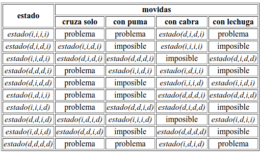
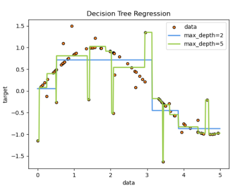
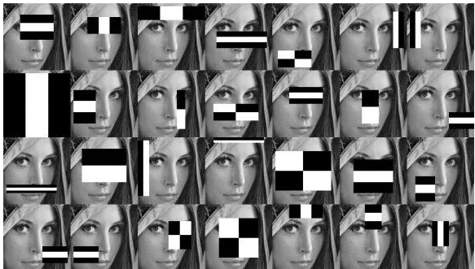

Apuntes IA
Índice
- Introducción a la Inteligencia Artificial.
- Categorías de la Inteligencia Artificial
- Inteligencia artificial convencional
- Historia de la Inteligencia Artificial.
- Las habilidades cognoscitivas según la psicología. Teorías de la inteligencia (conductismo, Gardner, etc.).
- El proceso de razonamiento según la lógica (Axiomas, Teoremas, demostración).
- El modelo de adquisición del conocimiento según la filosofía.
- El modelo cognoscitivo.
- El modelo del agente inteligente, Sistemas Multi Agentes, Sistemas Ubicuos.
- El papel de la heurística.
- Espacio de estados
- Técnicas de Búsqueda
- Teoría de juegos.
- Grafos
- Tipos de grafos
- Machine Learning
- Tipos de Algoritmos
- Técnicas de clasificación
- Segmentación de Color
- Árboles de decisión
- Arquitecturas de Redes Neuronales
- 1. Redes Neuronales Feedforward (FFNN)
- 1.1 Ejemplo de Redes Neuronales Feedforward
- 2. Redes Neuronales Convolucionales (CNN)
- 3. Redes Neuronales Recurrentes (RNN)
- 4. Redes Generativas Antagónicas (GAN)
- 5. Redes de Memoria a Largo y Corto Plazo (LSTM)
- 6. Redes de Transformadores
- 7. Redes Autoencoders
- 8. Redes de Cápsulas (Capsule Networks)
- Juego de Bala y Salto con MLP
- Introducción
- Requisitos e Instalación
- Cómo Jugar
- Modo Manual: Recolectando Datos
- Entrenamiento del Modelo MLP
- Modo Auto: El MLP Juega Solo
- Exportación y Visualización de Datos
- Arquitectura del Código
- Parámetros Configurables
- Mejores Prácticas
- Solución de Problemas
- Conceptos Técnicos Avanzados
- Código de Ejemplo
- Métricas de Evaluación para Machine Learning
- Introducción
- Matriz de Confusión: La Base de Todo
- Accuracy (Precisión General)
- Precision (Precisión)
- Recall (Sensibilidad o Exhaustividad)
- F1-Score: El Balance Perfecto
- Especificidad
- Comparación de Métricas: Tabla Resumen
- Casos de Uso en el Juego
- Implementación en Python
- Mejorando el Juego con Métricas
- Curvas ROC y AUC
- Métricas para Clases Desbalanceadas
- Resumen: Guía Rápida
- Ejercicios Prácticos
- Referencias y Recursos
- Conclusión
- Redes Neuronales Recurrentes (RNN)
- Redes Recurrentes (RNN) con Aplicación al Juego
- Introducción
- Conceptos Fundamentales
- Matemáticas Detalladas de las Redes Recurrentes
- Tipos de Redes Recurrentes
- Adaptando el Juego para RNN
- Implementación Práctica
- Comparación: MLP vs RNN
- Implementación Completa: Juego con RNN
- Visualización de Secuencias
- Actividades Prácticas
- Conceptos Avanzados
- Troubleshooting Común
- Análisis de información
- Detección de Manos con MediaPipe en Python
- Programación
- Tutorial Básico de Pygame
- Web scraping
- Preguntas
- Introducción a los Embeddings
- ¿Qué es Ollama?
- Spacy
- Extracción de datos RSS con Python y Atoma
- Estructura de un feed RSS
- Lectura de un feed RSS con Atoma
- Guardar los resultados en un archivo CSV
- Explicación paso a paso
- Proyectos IA Final
- Embedding de texto para vectorización en IA
- RAG vs Fine-Tuning con LoRA
- Examen
- Actividad
- Problema: Clasificación de Productos según su Aceptación por Clientes
- Problema: Clasificación de Clientes según su Perfil Financiero
- Temas
- Respuestas
- Preguntas Boots
- Fine-Tuning Local con Ollama 3.2, Tutor de Algoritmos
- Introducción
- Requisitos
- Software
- Instalar Ollama
- Modelos recomendados para Fine-Tuning Local
- ¿Cómo funciona el Fine-Tuning en Ollama?
- Crear Dataset para Tutor de Programación
- Ejemplos listos para usar
- Crear el archivo Modelfile
- Ejecutar el Fine-Tuning
- Ejecutar el Tutor Local
- Añadir más conocimiento al tutor
- Consejos prácticos para un buen tutor
- Configuración de LoRA en Transformers + PEFT
- Fine-Tuning Local con LoRA para Crear un Tutor de Programación
- Proyecto 3 Agosto Diciembre 2025
- Proyecto 4 Agosto Diciembre 2025
Introducción a la Inteligencia Artificial.
La inteligencia artificial (IA) es un área multidisciplinaria que, a través de ciencias como las ciencias de la computación, la lógica y la filosofía, estudia la creación y diseño de entidades capaces de resolver cuestiones por sí mismas utilizando como paradigma la inteligencia humana.
General y amplio como eso, reúne a amplios campos, los cuales tienen en común la creación de máquinas capaces de pensar. En ciencias de la computación se denomina inteligencia artificial a la capacidad de razonar de un agente no vivo. John McCarthy acuñó la expresión inteligencia artificial en 1956, y la definió así: Es la ciencia e ingenio de hacer máquinas inteligentes, especialmente programas de cómputo inteligentes.
- Búsqueda del estado requerido en el conjunto de los estados producidos por las acciones posibles.
- Algoritmos genéticos (análogo al proceso de evolución de las cadenas de ADN).
- Redes neuronales artificiales (análogo al funcionamiento físico del cerebro de animales y humanos).
- Razonamiento mediante una lógica formal análogo al pensamiento abstracto humano.
También existen distintos tipos de percepciones y acciones, que pueden ser obtenidas y producidas, respectivamente, por sensores físicos y sensores mecánicos en máquinas, pulsos eléctricos u ópticos en computadoras, tanto como por entradas y salidas de bits de un software y su entorno software. Varios ejemplos se encuentran en el área de control de sistemas, planificación automática, la habilidad de responder a diagnósticos y a consultas de los consumidores, reconocimiento de escritura, reconocimiento del habla y reconocimiento de patrones. Los sistemas de IA actualmente son parte de la rutina en campos como economía, medicina, ingeniería y la milicia, y se ha usado en gran variedad de aplicaciones de software, juegos de estrategia, como ajedrez de computador, y otros videojuegos.
Categorías de la Inteligencia Artificial
- Sistemas que piensan como humanos. Estos sistemas tratan de emular el pensamiento humano; por ejemplo las redes neuronales artificiales. La automatización de actividades que vinculamos con procesos de pensamiento humano, actividades como la Toma de decisiones, Resolución de problemas y aprendizaje. cite:Russell
- Sistemas que actúan como humanos: Estos sistemas tratan de actuar como humanos; es decir, imitan el comportamiento humano; por ejemplo la robótica. El estudio de cómo lograr que los computadores realicen tareas que, por el momento, los humanos hacen mejor. cite:Russell
- Sistemas que piensan racionalmente.- Es decir, con lógica (idealmente), tratan de imitar o emular el pensamiento lógico racional del ser humano; por ejemplo los sistemas expertos. El estudio de los cálculos que hacen posible percibir, razonar y actuar. cite:Russell
- Sistemas que actúan racionalmente (idealmente).– Tratan de emular de forma racional el comportamiento humano; por ejemplo los agentes inteligentes.Está relacionado con conductas inteligentes en artefactos. cite:Russell
Inteligencia artificial convencional
Se conoce también como IA simbólico-deductiva. Está basada en el análisis formal y estadístico del comportamiento humano ante diferentes problemas:
- Razonamiento basado en casos: Ayuda a tomar decisiones mientras se resuelven ciertos problemas concretos y, aparte de que son muy importantes, requieren de un buen funcionamiento.
- Sistemas expertos: Infieren una solución a través del conocimiento previo del contexto en que se aplica y ocupa de ciertas reglas o relaciones.
- Redes bayesianas: Propone soluciones mediante inferencia probabilística.
- Inteligencia artificial basada en comportamientos: Esta inteligencia contiene autonomía y puede auto-regularse y controlarse para mejorar.
- Smart process management: Facilita la toma de decisiones complejas, proponiendo una solución a un determinado problema al igual que lo haría un especialista en la dicha actividad.
Historia de la Inteligencia Artificial.
Las habilidades cognoscitivas según la psicología. Teorías de la inteligencia (conductismo, Gardner, etc.).
Las habilidades cognoscitivas son capacidades mentales que nos permiten procesar toda la información que nos llega del entorno. Incluyen procesos como la percepción, la memoria, el aprendizaje, la solución de problemas, el razonamiento y el pensamiento crítico. La psicología ha estudiado extensamente estas habilidades, y diferentes teorías han surgido para explicar cómo se desarrollan y funcionan, especialmente en relación con la inteligencia.
Teorías de la Inteligencia
- Conductismo El conductismo, representado por figuras como John B. Watson y B.F. Skinner, se centra en el estudio de comportamientos observables y medibles, dejando de lado los procesos mentales internos. Desde esta perspectiva, la inteligencia se ve como una serie de respuestas aprendidas ante estímulos específicos. Los conductistas creen que cualquier diferencia en la inteligencia entre individuos se debe a diferencias en sus experiencias de aprendizaje. Aunque esta teoría ha sido crítica por su falta de atención a los procesos cognitivos internos, ha sido influyente en el desarrollo de técnicas de aprendizaje y modificación del comportamiento.
- Teoría de las Inteligencias Múltiples (Howard Gardner) Contrastando con el enfoque unitario de la inteligencia, Howard Gardner propuso en 1983 la Teoría de las Inteligencias Múltiples. Gardner argumentó que la inteligencia no es un dominio único y general, sino un conjunto de capacidades cognitivas distintas e independientes. Originalmente identificó siete inteligencias (lingüístico-verbal, lógico-matemática, espacial, musical, corporal-cinestésica, interpersonal e intrapersonal), a las cuales más tarde añadió la inteligencia naturalista y posiblemente otras. Esta teoría ha tenido un impacto significativo en la educación, promoviendo un enfoque más personalizado en la enseñanza.
- Teoría Triárquica de la Inteligencia (Robert Sternberg) Robert Sternberg propuso la Teoría Triárquica de la Inteligencia, que divide la inteligencia en tres aspectos: analítico, creativo y práctico. La inteligencia analítica se refiere a la capacidad de analizar, evaluar, juzgar, comparar y contrastar. La inteligencia creativa implica la capacidad de crear, diseñar, inventar, originar y imaginar. La inteligencia práctica se relaciona con la capacidad de usar, aplicar, implementar y poner en práctica. Sternberg sugiere que una inteligencia equilibrada implica la capacidad de adaptarse a, moldear y seleccionar entornos para satisfacer tanto las necesidades personales como las de la sociedad.
- Teoría del Procesamiento de la Información Esta teoría se enfoca en cómo las personas procesan la información que reciben. Implica la atención, percepción, memoria y pensamiento, y cómo estas operaciones mentales influyen en nuestra capacidad para resolver problemas y tomar decisiones. Desde esta perspectiva, la inteligencia se ve como un conjunto de procesos mentales que permiten a la persona comprender y manejar el mundo que la rodea.
- Inteligencia Emocional (Daniel Goleman) Daniel Goleman popularizó el concepto de inteligencia emocional en los años 90, definiéndola como la capacidad para reconocer, entender y manejar nuestras emociones y las de los demás. La inteligencia emocional incluye habilidades como la autoconciencia, la autoregulación, la motivación, la empatía y las habilidades sociales. Esta teoría amplió el concepto de inteligencia más allá de las capacidades cognitivas tradicionales, incluyendo aspectos emocionales y sociales.
Conclusión: Las teorías de la inteligencia en la psicología reflejan la complejidad y diversidad de la mente humana. Desde el conductismo, que enfatiza el aprendizaje observable, hasta las teorías de inteligencias múltiples y emocional, que reconocen una amplia gama de capacidades cognitivas y emocionales, estas teorías nos ofrecen diferentes puntos de vista a través de los cuales podemos entender la inteligencia humana. Cada teoría aporta su visión única, sugiriendo que la inteligencia es un fenómeno multifacético que no puede ser completamente comprendido a través de un solo enfoque.
El proceso de razonamiento según la lógica (Axiomas, Teoremas, demostración).
El proceso de razonamiento según la lógica involucra varios conceptos fundamentales como axiomas, teoremas y demostraciones. Estos elementos forman la base de la lógica y el razonamiento matemático, permitiendo construir argumentos sólidos y verificar la veracidad de diversas proposiciones.
- Axiomas Los axiomas son declaraciones o proposiciones que se aceptan como verdaderas sin necesidad de demostración. En la lógica y las matemáticas, los axiomas sirven como fundamentos sobre los cuales se construye todo el sistema teórico. No son arbitrarios; se eligen cuidadosamente para evitar contradicciones y para ser lo suficientemente potentes como para derivar teoremas relevantes. Un ejemplo clásico de axioma es el postulado de paralelas de Euclides, que afirma que por un punto exterior a una línea, se puede trazar una y solo una paralela a dicha línea.
- Teoremas Los teoremas son proposiciones que han sido demostradas como verdaderas dentro de un sistema lógico, utilizando axiomas y teoremas previamente establecidos. Los teoremas requieren una demostración rigurosa que muestre su veracidad. Un ejemplo famoso es el teorema de Pitágoras en la geometría euclidiana, el cual establece que en un triángulo rectángulo, el cuadrado de la hipotenusa (el lado opuesto al ángulo recto) es igual a la suma de los cuadrados de los otros dos lados.
- Demostración La demostración es el proceso mediante el cual se establece la verdad de un teorema. Utiliza una serie de pasos lógicos y deductivos, basados en axiomas y en teoremas ya demostrados, para llegar a la conclusión de que el teorema en cuestión es verdadero. Las demostraciones pueden adoptar diversas formas, como la demostración directa, donde se parte de los axiomas y se llega al teorema; la demostración por contradicción, donde se asume que el teorema es falso y se llega a un absurdo; y la demostración por inducción, útil especialmente para los teoremas que involucran números enteros.
Este proceso es fundamental en el razonamiento lógico y matemático, ya que proporciona una base sólida para entender y verificar la verdad de las proposiciones dentro de un marco teórico específico. A través de los axiomas, teoremas y demostraciones, la lógica facilita la construcción de conocimiento estructurado y coherente, permitiendo el avance y la aplicación de las matemáticas y otras disciplinas que dependen de la lógica formal.
El modelo de adquisición del conocimiento según la filosofía.
El modelo de adquisición del conocimiento según la filosofía aborda cómo los seres humanos entienden, aprenden y conocen el mundo que les rodea. Esta cuestión ha sido central en la filosofía desde sus inicios, involucrando a filósofos de todas las épocas, desde los antiguos hasta los contemporáneos. La filosofía del conocimiento, o epistemología, estudia la naturaleza, el origen y los límites del conocimiento. A lo largo de la historia, se han propuesto varios modelos para explicar cómo adquirimos conocimiento, incluyendo el empirismo, el racionalismo, el constructivismo, y la fenomenología, entre otros.
- Empirismo: El empirismo sostiene que el conocimiento proviene de la experiencia sensorial. Según esta visión, todos los conceptos son derivados de la experiencia y la mente al nacer es una tabula rasa, una hoja en blanco sobre la cual la experiencia escribe. John Locke, George Berkeley y David Hume son algunos de los filósofos más destacados asociados con el empirismo. Por ejemplo, Locke argumentó que el conocimiento se construye a partir de ideas simples que se obtienen a través de la experiencia y que estas ideas simples se combinan para formar ideas complejas.
- Racionalismo: En contraposición al empirismo, el racionalismo argumenta que el conocimiento se adquiere principalmente a través de la razón y la intuición, más que a través de los sentidos. Los racionalistas creen en la existencia de ideas innatas, es decir, conocimientos que nacen con el individuo. René Descartes, Baruch Spinoza y Gottfried Wilhelm Leibniz son figuras clave del racionalismo. Descartes, por ejemplo, propuso el método de la duda sistemática y llegó a la conclusión de que la única certeza es "Cogito, ergo sum" ("Pienso, luego existo"), subrayando la primacía de la mente y la razón en la adquisición del conocimiento.
- Constructivismo: El constructivismo sostiene que el conocimiento se construye activamente por el cognoscente, no es simplemente una copia de la realidad. Esta teoría sugiere que los individuos construyen su conocimiento a través de la interacción con el entorno y mediante la reinterpretación de sus experiencias a la luz de sus propias creencias y antecedentes. Jean Piaget es uno de los teóricos más influyentes en esta área, argumentando que el desarrollo cognitivo del niño se produce a través de una serie de etapas y que el aprendizaje es un proceso de reorganización de estructuras mentales.
- Fenomenología: La fenomenología es un enfoque filosófico que enfatiza la experiencia subjetiva como la fuente principal del conocimiento. Fundada por Edmund Husserl, la fenomenología busca describir los fenómenos tal como se presentan a la conciencia, sin recurrir a teorías o interpretaciones previas. Este enfoque ha influenciado a muchos filósofos y teóricos, incluyendo a Martin Heidegger y Maurice Merleau-Ponty, y se centra en la comprensión de la experiencia vivida desde el punto de vista de la primera persona.
Conclusión El modelo de adquisición del conocimiento según la filosofía no se limita a una única teoría o enfoque. En cambio, refleja una rica diversidad de perspectivas sobre cómo los humanos llegan a entender el mundo. Cada enfoque ofrece una visión diferente sobre la naturaleza del conocimiento, cómo se adquiere, y los límites de nuestra comprensión. La epistemología sigue siendo un campo de estudio vibrante y en evolución, que continúa desafiando nuestras concepciones sobre la mente, la realidad y la forma en que interactuamos con el mundo que nos rodea.
El modelo cognoscitivo.
El modelo cognoscitivo es un enfoque teórico en la psicología que pone énfasis en la comprensión de los procesos mentales internos que subyacen a la percepción, el pensamiento, el aprendizaje, la memoria y la resolución de problemas. Contrario a los modelos de conducta que se enfocan únicamente en las respuestas observables a los estímulos, el modelo cognoscitivo busca entender cómo las personas interpretan, procesan y almacenan la información recibida del entorno. Este modelo ha sido fundamental en el desarrollo de la psicología cognitiva, una rama de la psicología que estudia los procesos mentales internos.
Fundamentos del Modelo Cognoscitivo
El modelo cognoscitivo se basa en la premisa de que la mente funciona de manera similar a un ordenador: recibe datos (inputs), los procesa y luego produce respuestas (outputs). Este enfoque enfatiza la importancia de los procesos mentales internos y cómo estos influyen en la conducta. Los aspectos clave del modelo cognoscitivo incluyen:
- Percepción: Cómo interpretamos y damos sentido a la información sensorial del mundo que nos rodea.
- Atención: Cómo filtramos y seleccionamos información del entorno para procesarla más a fondo.
- Memoria: Cómo almacenamos y recuperamos información. La memoria se considera en diferentes formatos, como la memoria a corto plazo (o memoria de trabajo) y la memoria a largo plazo.
- Pensamiento: Cómo solucionamos problemas, tomamos decisiones y ejecutamos el razonamiento lógico.
- Lenguaje: Cómo utilizamos el lenguaje para pensar, comunicarnos y entender el mundo.
Aplicaciones del Modelo Cognoscitivo
El modelo cognoscitivo ha tenido aplicaciones extensas en varios campos, incluyendo:
- Educación: Desarrollo de estrategias de enseñanza basadas en cómo los estudiantes procesan y recuerdan la información.
- Terapia Cognitiva: En psicología clínica, se utiliza para tratar trastornos como la depresión y la ansiedad, ayudando a los pacientes a reconocer y cambiar patrones de pensamiento distorsionados.
- Diseño de Interfaces de Usuario: En la tecnología de la información, se aplica para crear sistemas que se alineen mejor con los procesos cognitivos humanos, haciendo que las interfaces sean más intuitivas.
Críticas y Limitaciones
A pesar de su influencia y aplicabilidad, el modelo cognoscitivo también ha enfrentado críticas, principalmente por:
- Reduccionismo: Algunos críticos argumentan que reduce los procesos mentales complejos a simples mecanismos computacionales.
- Descuido de lo Emocional y lo Social: Inicialmente, el modelo cognoscitivo fue criticado por ignorar cómo las emociones y el contexto social afectan el procesamiento cognitivo.
Evolución y Expansión
En respuesta a estas críticas, el modelo cognoscitivo ha evolucionado para incorporar aspectos emocionales y sociales en el estudio de los procesos mentales. Esto ha llevado al desarrollo de subcampos como la psicología cognitiva social y la neurociencia cognitiva, que exploran la interacción entre cognición, emoción y contextos sociales.
Conclusión
El modelo cognoscitivo ha sido fundamental en el avance de nuestra comprensión de los procesos mentales y ha revolucionado la forma en que los psicólogos abordan el estudio de la mente y la conducta. A través de su aplicación en educación, terapia y tecnología, ha demostrado ser una herramienta invaluable para mejorar diversos aspectos de la vida humana. Con el tiempo, continúa adaptándose y expandiéndose para incluir una comprensión más holística de la cognición humana.
El modelo del agente inteligente, Sistemas Multi Agentes, Sistemas Ubicuos.
El modelo del agente inteligente, los Sistemas Multi-Agente (SMA) y los Sistemas Ubicuos son conceptos fundamentales en el ámbito de la inteligencia artificial (IA) y las ciencias de la computación, que tienen aplicaciones en una amplia gama de dominios, desde la automatización del hogar hasta la manufactura avanzada y los entornos de trabajo colaborativos. A continuación, se desarrolla cada uno de estos conceptos para proporcionar una comprensión clara de su significado, funcionamiento y aplicaciones.
El Modelo del Agente Inteligente
Un agente inteligente es una entidad autónoma capaz de percibir su entorno a través de sensores y actuar en ese entorno utilizando actuadores para lograr ciertos objetivos o maximizar una medida de rendimiento. Los agentes inteligentes pueden ser simples, como un termostato programado para mantener una temperatura específica, o complejos, como un robot autónomo explorando Marte. La inteligencia de un agente se refleja en su capacidad para tomar decisiones adecuadas en función de sus percepciones y los objetivos establecidos.
Sistemas Multi-Agente (SMA)
Los Sistemas Multi-Agente son sistemas compuestos por varios agentes inteligentes que interactúan entre sí dentro de un entorno. Estos agentes pueden cooperar, competir o negociar para lograr sus objetivos individuales o colectivos. Los SMA son especialmente útiles para resolver problemas que son demasiado complejos o grandes para ser abordados por un único agente. Los ejemplos de aplicaciones incluyen la simulación de sistemas sociales, la optimización de procesos de manufactura, la gestión de redes de transporte y los juegos serios para la educación y la formación.
Sistemas Ubicuos
Los Sistemas Ubicuos, también conocidos como computación ubicua, se refieren a la integración de la computación en el entorno cotidiano de manera que los dispositivos computacionales estén disponibles en todo momento y lugar, pero de manera invisible para el usuario. Estos sistemas se caracterizan por su capacidad para proporcionar servicios y soporte de manera proactiva y context-aware, es decir, adaptando su comportamiento según el contexto del usuario. Los ejemplos incluyen casas inteligentes que ajustan automáticamente la iluminación y la temperatura, ciudades inteligentes con gestión avanzada del tráfico y sistemas de alerta temprana, y dispositivos personales de salud que monitorizan constantemente el bienestar del usuario.
Integración y Aplicaciones
La integración de estos conceptos permite el desarrollo de soluciones innovadoras a problemas complejos. Por ejemplo, un SMA puede ser desplegado en un entorno ubicuo para gestionar de manera eficiente y adaptativa los recursos energéticos de una ciudad inteligente. Los agentes inteligentes, actuando dentro de este sistema, pueden monitorear el consumo de energía en tiempo real, predecir la demanda futura y ajustar de manera proactiva la distribución de energía para maximizar la eficiencia y minimizar los costos.
Conclusión
El modelo del agente inteligente, los Sistemas Multi-Agente y los Sistemas Ubicuos representan áreas clave en la investigación y aplicación de la inteligencia artificial y la computación. Al combinar la autonomía y la capacidad de toma de decisiones de los agentes inteligentes con la cooperación y la interacción de los SMA, y al integrar estos sistemas en el entorno cotidiano a través de la computación ubicua, es posible desarrollar soluciones avanzadas y adaptativas para una amplia gama de desafíos en la sociedad moderna.
El papel de la heurística.
Búsqueda Heurística: En la búsqueda heurística, las técnicas heurísticas se utilizan para acelerar el proceso de búsqueda de soluciones, especialmente en problemas de búsqueda en espacios de estados grandes, como los encontrados en la planificación, juegos de estrategia, y la resolución de puzzles. Algoritmos como A* y sus variantes utilizan funciones heurísticas para estimar el costo del camino más corto desde un nodo dado hasta el objetivo, priorizando la exploración de caminos que parecen más prometedores.
- Optimización Las heurísticas también son cruciales en problemas de optimización, donde se busca la mejor solución de entre un conjunto de soluciones posibles. Técnicas como la búsqueda tabú, algoritmos genéticos y el recocido simulado son ejemplos de métodos heurísticos que exploran el espacio de soluciones de manera estratégica para encontrar soluciones óptimas o cercanas al óptimo en un tiempo razonable.
- Toma de Decisiones: En la toma de decisiones, las heurísticas ayudan a simplificar los procesos de evaluación y elección al reducir la complejidad de las decisiones y la cantidad de información a considerar. Esto es especialmente útil en la IA para juegos, donde los agentes deben tomar decisiones rápidas y efectivas en entornos competitivos con información incompleta.
- Diseño de Algoritmos: Las heurísticas son fundamentales en el diseño de algoritmos para el procesamiento de lenguaje natural, visión por computadora, y sistemas de recomendación, donde guían el análisis y la interpretación de datos complejos o no estructurados para realizar tareas como la clasificación, el reconocimiento de patrones y la predicción.
Ventajas y Limitaciones
Las principales ventajas de utilizar heurísticas en la IA incluyen la capacidad de encontrar soluciones de manera más rápida y eficiente que los métodos exhaustivos, especialmente en problemas complejos o de gran escala. Sin embargo, el uso de heurísticas también tiene sus limitaciones, ya que la solución encontrada no siempre es la óptima, y la calidad de la solución puede depender significativamente de la elección de la función heurística.
- Conclusión: La heurística es una herramienta invaluable en la inteligencia artificial, permitiendo el desarrollo de sistemas y algoritmos que pueden operar efectivamente en entornos complejos y bajo restricciones de tiempo o recursos. Aunque la elección y el diseño de funciones heurísticas adecuadas pueden ser desafiantes, su aplicación sigue siendo esencial para el avance y la eficacia de la IA en una amplia gama de aplicaciones prácticas.
Algoritmos de exploración de alternativas.
Algoritmo A*
El algoritmo A* es uno de los algoritmos de búsqueda más populares y eficientes para encontrar el camino más corto entre dos puntos, especialmente en grafos o espacios de búsqueda con grandes cantidades de nodos, como mapas o rejillas de nodos (grids). Es muy utilizado en problemas de búsqueda de rutas, por ejemplo, en videojuegos y sistemas de navegación.
- Conceptos Básicos
A* combina las ventajas de los algoritmos de búsqueda de costo uniforme (como Dijkstra) y búsqueda heurística (como la búsqueda en anchura) para obtener un algoritmo que es tanto óptimo (encuentra la mejor solución) como completable (lo hace en un tiempo razonable).
A* utiliza una función de evaluación que combina dos valores clave:
- g(n): El costo real desde el nodo inicial hasta el nodo actual \(n\).
- h(n): Una estimación heurística del costo desde el nodo actual \(n\) hasta el nodo final (objetivo).
La función de evaluación se define como:
f(n) = g(n) + h(n)
donde \(g(n)\) es el costo acumulado y \(h(n)\) es la estimación heurística. La idea es expandir primero los nodos que parecen estar más cerca del objetivo, mientras se asegura que el costo acumulado sea mínimo.
Características del Algoritmo A*
- Óptimo: Si la heurística es admisible, es decir, nunca sobreestima el costo restante (por ejemplo, si se usa la distancia Manhattan o la distancia Euclidiana como heurística en un espacio euclidiano), A* siempre encontrará el camino más corto.
- Completo: Si existe un camino desde el punto inicial al punto objetivo, A* lo encontrará, siempre que el espacio de búsqueda sea finito.
Etapas del Algoritmo
- Inicialización:
- Se parte de un nodo inicial (el punto de partida) y se agrega a una estructura de datos (generalmente una cola de prioridad).
- Cada nodo tiene un valor de \(f(n)\) calculado como la suma de \(g(n)\) y \(h(n)\), donde \(g(n)\) es 0 para el nodo inicial y \(h(n)\) es el valor heurístico estimado.
- Expansión de Nodos:
- En cada paso, el algoritmo extrae el nodo con el menor valor \(f(n)\) de la cola de prioridad.
- Luego, el algoritmo expande este nodo, es decir, explora todos sus nodos vecinos.
- Para cada vecino, se calcula el nuevo costo \(g(n)\) como la distancia acumulada desde el nodo inicial y se actualiza el valor de \(f(n)\).
- Actualización de Nodos Vecinos:
- Si un vecino aún no ha sido explorado, o si se ha encontrado un camino más corto a dicho vecino, se actualizan sus valores de \(g(n)\) y \(f(n)\), y se agrega a la cola de prioridad para ser evaluado más adelante.
- Heurística:
- La heurística \(h(n)\) es crucial para guiar la búsqueda hacia el objetivo. Una buena heurística hace que A* sea más eficiente, ya que prioriza la expansión de los nodos más prometedores.
- Las heurísticas comunes incluyen la distancia Manhattan (para cuadrículas donde solo se puede mover en horizontal o vertical) y la distancia Euclidiana (para espacios donde se puede mover en diagonal).
- Terminación:
- El algoritmo termina cuando se extrae el nodo objetivo (el nodo final) de la cola de prioridad, lo que significa que se ha encontrado el camino más corto.
- Reconstrucción del Camino:
- Una vez que se ha encontrado el nodo final, el camino se reconstruye retrocediendo desde el nodo final al nodo inicial a través de los nodos predecesores.
- Pseudocódigo
Pseudocódigo simplificado del algoritmo A*:
Function A*(inicio, objetivo) crear una cola de prioridad `open_set` agregar `inicio` a `open_set` con f(inicio) = h(inicio) g_score[inicio] = 0 f_score[inicio] = h(inicio) // Heurística desde inicio hasta objetivo While `open_set` no esté vacío: current = nodo en `open_set` con menor valor de f_score If current == objetivo: return reconstruir_camino(current) // Camino encontrado quitar current de `open_set` For cada vecino de current: tentative_g_score = g_score[current] + costo para moverse a vecino If tentative_g_score < g_score[vecino]: // Mejor camino encontrado came_from[vecino] = current g_score[vecino] = tentative_g_score f_score[vecino] = g_score[vecino] + h(vecino, objetivo) If vecino no está en `open_set`: agregar vecino a `open_set` Return fracaso // Si no se encuentra un camino
Ejemplo de Heurística: Distancia Manhattan
Si se está trabajando en una cuadrícula donde solo se permiten movimientos horizontales y verticales, la distancia Manhattan es una heurística común:
\(h(n) = |x1 - x2| + |y1 - y2|\)
donde \((x1, y1)\) son las coordenadas del nodo actual \(n\) y \((x2, y2)\) son las coordenadas del nodo objetivo.
Complejidad del Algoritmo
- Complejidad espacial: A* puede consumir bastante memoria, ya que mantiene una lista de nodos abiertos y cerrados (nodos que han sido evaluados).
- Complejidad temporal: En el peor de los casos, A* tiene una complejidad de tiempo de \(O(b^d)\), donde \(b\) es el factor de ramificación (número promedio de vecinos por nodo) y \(d\) es la profundidad del camino más corto.
Ventajas de A*
- Eficiente: Encuentra el camino más corto de manera eficiente si la heurística es adecuada.
- Óptimo: Siempre encuentra el camino más corto si la heurística es admisible.
- Flexible: Funciona en muchos tipos de grafos y mapas.
Desventajas de A*
- Costoso en memoria: Puede requerir mucho espacio, especialmente en problemas de gran escala.
- Dependencia de la heurística: Si la heurística no es adecuada, el rendimiento de A* puede degradarse significativamente.
Aplicaciones
- Videojuegos: Usado en motores de IA para encontrar rutas en mapas grandes, por ejemplo, en juegos de estrategia.
- Sistemas de navegación: GPS y otros sistemas de navegación utilizan variantes de A* para encontrar rutas óptimas.
- Robótica: En sistemas de planificación de rutas para robots autónomos.
Visualización de Nodos, Cascaron A*
import pygame # Configuraciones iniciales ANCHO_VENTANA = 800 VENTANA = pygame.display.set_mode((ANCHO_VENTANA, ANCHO_VENTANA)) pygame.display.set_caption("Visualización de Nodos") # Colores (RGB) BLANCO = (255, 255, 255) NEGRO = (0, 0, 0) GRIS = (128, 128, 128) VERDE = (0, 255, 0) ROJO = (255, 0, 0) NARANJA = (255, 165, 0) PURPURA = (128, 0, 128) class Nodo: def __init__(self, fila, col, ancho, total_filas): self.fila = fila self.col = col self.x = fila * ancho self.y = col * ancho self.color = BLANCO self.ancho = ancho self.total_filas = total_filas def get_pos(self): return self.fila, self.col def es_pared(self): return self.color == NEGRO def es_inicio(self): return self.color == NARANJA def es_fin(self): return self.color == PURPURA def restablecer(self): self.color = BLANCO def hacer_inicio(self): self.color = NARANJA def hacer_pared(self): self.color = NEGRO def hacer_fin(self): self.color = PURPURA def dibujar(self, ventana): pygame.draw.rect(ventana, self.color, (self.x, self.y, self.ancho, self.ancho)) def crear_grid(filas, ancho): grid = [] ancho_nodo = ancho // filas for i in range(filas): grid.append([]) for j in range(filas): nodo = Nodo(i, j, ancho_nodo, filas) grid[i].append(nodo) return grid def dibujar_grid(ventana, filas, ancho): ancho_nodo = ancho // filas for i in range(filas): pygame.draw.line(ventana, GRIS, (0, i * ancho_nodo), (ancho, i * ancho_nodo)) for j in range(filas): pygame.draw.line(ventana, GRIS, (j * ancho_nodo, 0), (j * ancho_nodo, ancho)) def dibujar(ventana, grid, filas, ancho): ventana.fill(BLANCO) for fila in grid: for nodo in fila: nodo.dibujar(ventana) dibujar_grid(ventana, filas, ancho) pygame.display.update() def obtener_click_pos(pos, filas, ancho): ancho_nodo = ancho // filas y, x = pos fila = y // ancho_nodo col = x // ancho_nodo return fila, col def main(ventana, ancho): FILAS = 10 grid = crear_grid(FILAS, ancho) inicio = None fin = None corriendo = True while corriendo: dibujar(ventana, grid, FILAS, ancho) for event in pygame.event.get(): if event.type == pygame.QUIT: corriendo = False if pygame.mouse.get_pressed()[0]: # Click izquierdo pos = pygame.mouse.get_pos() fila, col = obtener_click_pos(pos, FILAS, ancho) nodo = grid[fila][col] if not inicio and nodo != fin: inicio = nodo inicio.hacer_inicio() elif not fin and nodo != inicio: fin = nodo fin.hacer_fin() elif nodo != fin and nodo != inicio: nodo.hacer_pared() elif pygame.mouse.get_pressed()[2]: # Click derecho pos = pygame.mouse.get_pos() fila, col = obtener_click_pos(pos, FILAS, ancho) nodo = grid[fila][col] nodo.restablecer() if nodo == inicio: inicio = None elif nodo == fin: fin = None pygame.quit() main(VENTANA, ANCHO_VENTANA)
- Tutorial de Pygame: Visualización de Nodos, Cascaron A*
Este programa utiliza la biblioteca Pygame para crear una cuadrícula interactiva donde puedes definir un nodo de inicio, un nodo final, y establecer paredes. Es una base para implementar algoritmos como A* para la búsqueda de caminos.
- 1. Importar Pygame
El primer paso es importar Pygame, que es una biblioteca para la creación de videojuegos en Python:
import pygame - 2. Configuraciones iniciales
Se configuran la ventana y los colores que se usarán en la cuadrícula. `ANCHOVENTANA` define el tamaño de la ventana, y `VENTANA` se usa para crear la ventana donde se dibujarán los elementos:
ANCHO_VENTANA = 800 VENTANA = pygame.display.set_mode((ANCHO_VENTANA, ANCHO_VENTANA)) pygame.display.set_caption("Visualización de Nodos")
- `ANCHOVENTANA`: Define que la ventana será de 800x800 píxeles.
- `pygame.display.setmode`: Crea la ventana con las dimensiones dadas.
- `pygame.display.setcaption`: Establece el título de la ventana.
- 3. Definir colores en formato RGB
Definimos algunos colores que se usarán para los nodos y las paredes. Los colores se expresan en el formato RGB:
BLANCO = (255, 255, 255) NEGRO = (0, 0, 0) GRIS = (128, 128, 128) VERDE = (0, 255, 0) ROJO = (255, 0, 0) NARANJA = (255, 165, 0) PURPURA = (128, 0, 128)
- 4. Clase Nodo
La clase `Nodo` representa cada celda de la cuadrícula. Cada nodo tiene una posición (fila y columna), un color, y puede tener diferentes estados (inicio, fin, pared, etc.):
class Nodo: def __init__(self, fila, col, ancho, total_filas): self.fila = fila self.col = col self.x = fila * ancho self.y = col * ancho self.color = BLANCO self.ancho = ancho self.total_filas = total_filas
Esta clase contiene varios métodos útiles:
- `getpos()`: Devuelve la posición del nodo.
- `espared()`, `esinicio()`, `esfin()`: Determinan el estado del nodo.
- `hacerpared()`, `hacerinicio()`, `hacerfin()`: Cambian el estado del nodo.
- `dibujar()`: Dibuja el nodo en la ventana.
- 5. Crear la cuadrícula
El método `creargrid` crea una lista de nodos organizados en una cuadrícula. Cada nodo tiene un tamaño calculado dividiendo el ancho total de la ventana por el número de filas.
def crear_grid(filas, ancho): grid = [] ancho_nodo = ancho // filas for i in range(filas): grid.append([]) for j in range(filas): nodo = Nodo(i, j, ancho_nodo, filas) grid[i].append(nodo) return grid
Este método crea una lista bidimensional que representa la cuadrícula de nodos.
- 6. Dibujar la cuadrícula y los nodos
El método `dibujargrid` dibuja las líneas que separan los nodos en la cuadrícula, mientras que `dibujar` dibuja cada nodo en la ventana.
def dibujar_grid(ventana, filas, ancho): ancho_nodo = ancho // filas for i in range(filas): pygame.draw.line(ventana, GRIS, (0, i * ancho_nodo), (ancho, i * ancho_nodo)) for j in range(filas): pygame.draw.line(ventana, GRIS, (j * ancho_nodo, 0), (j * ancho_nodo, ancho))
- `dibujargrid`: Dibuja las líneas horizontales y verticales para formar la cuadrícula.
- `dibujar`: Llama al método `dibujar()` de cada nodo para mostrar su estado (color).
- 7. Obtener la posición del clic
El método `obtenerclickpos` convierte la posición en píxeles del ratón a la posición de la cuadrícula (fila y columna).
def obtener_click_pos(pos, filas, ancho): ancho_nodo = ancho // filas y, x = pos fila = y // ancho_nodo col = x // ancho_nodo return fila, col
Esto permite identificar qué nodo fue clicado con precisión.
- 8. Ciclo principal
El ciclo principal del programa está en la función `main`, que controla la interacción del usuario. Escucha eventos como el cierre de la ventana o clics del ratón para definir los nodos de inicio, fin, y las paredes.
def main(ventana, ancho): FILAS = 10 grid = crear_grid(FILAS, ancho) inicio = None fin = None corriendo = True while corriendo: dibujar(ventana, grid, FILAS, ancho) for event in pygame.event.get(): if event.type == pygame.QUIT: corriendo = False if pygame.mouse.get_pressed()[0]: # Click izquierdo pos = pygame.mouse.get_pos() fila, col = obtener_click_pos(pos, FILAS, ancho) nodo = grid[fila][col] if not inicio and nodo != fin: inicio = nodo inicio.hacer_inicio() elif not fin and nodo != inicio: fin = nodo fin.hacer_fin() elif nodo != fin and nodo != inicio: nodo.hacer_pared() elif pygame.mouse.get_pressed()[2]: # Click derecho pos = pygame.mouse.get_pos() fila, col = obtener_click_pos(pos, FILAS, ancho) nodo = grid[fila][col] nodo.restablecer() if nodo == inicio: inicio = None elif nodo == fin: fin = None pygame.quit()
- Interacción del ratón:
- Clic izquierdo: Define el nodo de inicio, el nodo final, o establece una pared.
- Clic derecho: Restablece el nodo (lo borra).
Finalmente, la función `pygame.quit()` se encarga de cerrar correctamente el programa.
- Interacción del ratón:
- 1. Importar Pygame
- Fuentes sobre el Algoritmo A*
Algoritmos de búsqueda local.
Espacio de estados
Muchos de los problemas que pueden ser resueltos aplicando técnicas de inteligencia artificial se modelan en forma simbólica y discreta definiendo las configuraciones posibles del universo estudiado. El problema se plantea entoces en términos de encontrar una configuración objetivo a partir de una configuración inicial dada, aplicando transformaciones válidas según el modelo del universo. La respuesta es la secuencia de transformaciones cuya aplicación succesiva lleva a la configuración deseada.
Los ejemplos más carácteristicos de esta categoría de problemas son los juegos (son universos restringidos fáciles de modelar). En un juego, las configuraciones del universo corresponden directamente a las configuraciones del tablero. Cada configuración es un estado que puede ser esquematizado gráficamente y representado en forma simbólica. Las transformaciones permitidas corresponden a las reglas o movidas del juego, formalizadas como transiciones de estado.
Entonces, para plantear formalmente un problema, se requiere precisar una representación simbólica de los estados y definir reglas del tipo condición acción para cada una de las transiciones válidas dentro del universo modelado. La acción de una regla indica como modificar el estado actual para generar un nuevo estado. La condición impone restricciones sobre la aplicabilidad de la regla según el estado actual, el estado generado o la historia completa del proceso de solución.
El espacio de estados de un juego es un grafo cuyos nodos representan las configuraciones alcanzables (los estados válidos) y cuyos arcos explicitan las movidas posibles (las transiciones de estado). En principio, se puede construir cualquier espacio de estados partiendo del estado inicial, aplicando cada una de las reglas para generar los sucesores immediatos, y así succesivamente con cada uno de los nuevos estados generados (en la práctica, los espacios de estados suelen ser demasiado grandes para explicitarlos por completo).
Cuando un problema se puede representar mediante un espacio de estados, la solución computacional correspende a encontrar un camino desde el estado inicial a un estado objetivo.
Ejemplo de espacio de estados
Descripción del problema
Un arriero se encuentra en el borde de un rio llevando un puma, una cabra y una lechuga. Debe cruzar a la otra orilla por medio de un bote con capacidad para dos (el arriero y alguna de sus pertenecias). La dificultad es que si el puma se queda solo con la cabra la devorará, y lo mismo sucederá si la cabra se queda sola con la lechuga. ¿Cómo cruzar sin perder ninguna pertenencia?
Representación de las configuraciones del universo del problema:
Basta precisar la situación antes o después de cruzar. El arriero y cada una de sus pertenencias tienen que estar en alguna de las dos orillas. La representación del estado debe entonces indicar en que lado se encuentra cada uno de ellos. Para esto se puede utilizar un término simbólico con la siguiente sintáxis: estado(A,P,C,L), en que A, P, C y L son variables que representan, respectivamente, la posición del arriero, el puma, la cabra y la lechuga. Las variables pueden tomar dos valores: i y d, que simbolizan respectivamente el borde izquierdo y el borde derecho del rio. Por convención se elige partir en el borde izquierdo. El estado inicial es entonces estado(i,i,i,i). El estado objetivo es estado(d,d,d,d).
Definición de las reglas de transición:
El arriero tiene cuatro acciones posibles: cruzar solo, cruzar con el puma, cruzar con la cabra y cruzar con la lechuga. Estas acciones están condicionadas a que ambos pasajeros del bote estén en la misma orilla y a que no queden solos el puma con la cabra o la cabra con la lechuga. El estado resultante de una acción se determina intercambiando los valores i y d para los pasajeros del bote.
Generación del espacio de estados
En este ejemplo se puede explicitar todo el espacio de estados (el número de configuraciones está acotado por 24).

Problemas de los Canibales y Monjes
Se tienen 3 monjes y 3 caníbales en el margen Oeste de un río. Existe
una canoa con capacidad para dos personas como máximo. Se desea que
los seis pasen al margen Este del río, pero hay que considerar que no
debe haber más caníbales que monjes en ningún sitio porque entonces
los caníbales se comen a los monjes. Además, la canoa siempre debe ser
conducida por alguien.
El espacio de estados está definido por
{(Mo, Co, Me, Ce, C) / Mo es el número de monjes en el margen oeste con
0<=Mo<=3
AND Co es el número de caníbales en el margen oeste con 0<=Co<=3
AND (Co<=Mo OR Mo=0)
AND Me es el número de monjes en el margen este con
0<=Me<=3
AND Ce es el número de caníbales en el margen este con 0<=Ce<=3
AND (Ce<=Me OR Me=0) AND Co+Ce=3 AND Mo+Me=3 AND C = [E|O] es el margen dónde está la canoa}
El estado inicial es (3,3,0,0,O)
El estado final es (0,0,3,3,E)
Las reglas que se pueden aplicar son:
- Viajan un monje y un caníbal de O a E: Si (Mo, Co, Me, Ce, O) AND Mo>=1 AND Co>=1 AND Ce+1<=Me+1 => (Mo-1, Co-1, Me+1, Ce+1, E)
- Viajan un monje y un caníbal de E a O: Si (Mo, Co, Me, Ce, E) AND Me>=1 AND Ce>=1 AND Co+1<=Mo+1=> (Mo+1, Co+1, Me-1, Ce-1,O)
- Viajan dos monjes de O a E: Si (Mo, Co, Me, Ce, O) AND Mo>=2 AND (Mo-2=0 OR Co<=Mo-2) AND Ce<=Me+2=> (Mo-2, Co, Me+2, Ce, E)
- Viajan dos monjes de E a O: Si (Mo, Co, Me, Ce, E) AND Me>=2 AND (Me-2=0 OR Ce<=Me-2) AND Co<=Mo+2 => (Mo+2, Co, Me-2, Ce, O)
- Viajan dos caníbales de O a E: Si (Mo, Co, Me, Ce, O) AND Co>=2 AND (Me=0 OR Ce+2<=Me) => (Mo, Co-2, Me, Ce+2, E)
- Viajan dos caníbales de E a O: Si (Mo, Co, Me, Ce, E) AND Ce>=2 AND (Mo=0 OR Co+2<=Mo) => (Mo, Co+2, Me, Ce-2, O)
- Viaja un monje de O a E: Si (Mo, Co, Me, Ce, O) AND Mo>=1 AND (Mo-1=0 OR Co<=Mo-1) AND Ce<= Me+1 => (Mo-1, Co, Me+1, Ce, E)
- Viaja un monje de E a O: Si (Mo, Co, Me, Ce, E) AND Me>=1 AND (Me-1=0 OR Ce<=Me-1) AND Co<=Mo+1 => (Mo+1, Co, Me-1, Ce,O)
- Viaja un caníbal de O a E: Si (Mo, Co, Me, Ce, O) AND Co>=1 AND (Me=0 OR Ce+1<=Me) => (Mo, Co-1, Me, Ce+1, E)
- Viaja un caníbal de E a O: Si (Mo, Co, Me, Ce, O) AND Ce>=1 AND (Mo=0 OR Co+1<=Mo) => (Mo, Co+1, Me, Ce-1, E)
Nota: En referencia a la regla 3 la condición Ce<=Me+2 puede intuirse como redundante. Esta condición no se cumple sólo en el caso Ce=3 y Me=0. Pese a
que es un estado que pertenece al espacio de estados válidos, podemos intuir que nunca se llega a tener 3 caníbales y ningún monje del lado Este y la barca del lado Oeste. De todas maneras sólo se puede eliminar si podemos demostrar formalmente la imposibilidad de esta situación.
Un pasaje de estados para ir de (3,3,0,0,O) a (0,0,3,3,E) es el siguiente:
(3,3,0,0,O) => (3,1,0,2,E) => (3,2,0,1,O) => (3,0,0,3,E) => (3,1,0,2,O) => (1,1,2,2,E) => (2,2,1,1,O) => (0,2,3,1,E) => (0,3,3,0,O) => (0,1,3,2,E) => (0,2,3,1,O) =>(0,0,3,3,E)
Representación de espacio de estados
La primera pregunta es, como
El problema del n-Puzzle
Caracterización de las búsquedas ciegas.
La búsqueda ciega o no informada sólo utiliza información acerca de si un estado es o no objetivo para guiar su procesu de búsqueda.
Los métodos de búsqueda ciega se pueden clasificar en dos grupos básicos:
- Métodos de búsqueda en anchura: Son procedimientos de búsqueda nivel a nivel. Para cada uno de los nodos de un nivel se aplican todos los posibles operadores y no se expande ningún nodo de un nivel antes de haber expandido todos los del nivel anterior.
- Métodos de búsqueda en profundidad: En estos procedimientos se realiza la búsqueda por una sola rama del árbol hasta encontrar una solución o hasta que se tome la decisión de terminar la búsqueda por esa dirección ( por no haber posibles operadores que aplicar sobre el nodo hoja o por haber alcanzado un nivel de profundidad muy grande ) . Si esto ocurre se produce una vuelta atrás ( backtracking ) y se sigue por otra rama hasta visitar todas las ramas del árbol si es necesario.
A partir de los dos tipos de búsqueda anteriores surgió uno nuevo, llamado método de búsqueda por profundización iterativa. El algoritmo de búsqueda más representativo de esta nueva tendencia es el DFID acrónimo de su nombre en inglés (Depth-First Iterative-Deepening).
Caracterización de las búsquedas heurísticas.
Las técnicas de búsqueda heurística se apoyan alc contrario de los métodos de búsqueda ciega se apoyan en información adicional para realizar su proceso de búsqueda. Para mejorar la eficiencia de la búsqueda, estos algoritmos hacen uso de una función que realiza una predicción del coste necesario para alcanzar la solución. La función que guía el proceso toma el nombre de función heurística.
De todos los algoritmos de búsqueda heurística, uno destaca en especial: el A*. Este algoritmo, a pesar de haber sido creado entorno a los años 60, sigue en la actualidad siendo uno de los mas utilizados. Desafortunadamente, es ineficiente en cuanto al uso de memoria durante el proceso de búsqueda. Por ello, en las décadas de los 80 y 90, aparecieron algoritmos basados en el propio A*, pero que limitaban el uso de memoria. Dos de los algoritmos más representativos de esta última tendencia son el IDA* (Iterative-Deepening A*) y el SMA* (Simplified Memory-bounded A*).
Técnicas de Búsqueda
Solución de problemas con búsqueda.
La solución de problemas es fundamental para la mayoría de las aplicaciones de IA; existen principalmente dos clases de problemas que se pueden resolver mediante procesos computables: aquéllos en los que se utiliza un algoritmo determinista que garantiza la solución al problema y las tareas complejas que se resuelven con la búsqueda de una solución; de ésta última clase de problemas se ocupa la IA.
La solución de problemas requiere dos consideraciones:
- Representación del problema en un espacio organizado.
- La capacidad de probar la existencia del estado objetivo en dicho espacio.
Las anteriores premisas se traducen en: la determinación del estado objetivo y la determinación del camino óptimo guiado por este objetivo a través de una o más transiciones dado un estado inicial
El espacio de búsqueda, se le conoce como una colección de estados. En general los espacios de búsqueda en los problemas de IA no son completamente conocidos de forma a priori. De lo anterior ‘resolver un problema de IA’ cuenta con dos fases:\\[0.5cm]
- La generación del espacio de estados
- La búsqueda del estado deseado en ese espacio.
Debido a que "todo el espacio de búsqueda" de un problema es muy grande, puede causar un bloqueo de memoria, dejando muy poco espacio para el proceso de búsqueda. Para solucionar esto, se expande el espacio paso a paso, hasta encontrar el estado objetivo.
Espacios de Estados
Muchos de los problemas que pueden ser resueltos aplicando técnicas de inteligencia artificial se modelan en forma simbólica y discreta definiendo las configuraciones posibles del universo estudiado. El problema se plantea entonces en términos de encontrar una configuración objetivo a partir de una configuración inicial dada, aplicando transformaciones válidas según el modelo del universo. La respuesta es la secuencia de transformaciones cuya aplicación succesiva lleva a la configuración deseada. Los ejemplos más carácteristicos de esta categoría de problemas son los juegos (son universos restringidos fáciles de modelar). En un juego, las configuraciones del universo corresponden directamente a las configuraciones del tablero. Cada configuración es un estado que puede ser esquematizado gráficamente y representado en forma simbólica. Las transformaciones permitidas corresponden a las reglas o movidas del juego, formalizadas como transiciones de estado. Entonces, para plantear formalmente un problema, se requiere precisar una representación simbólica de los estados y definir reglas del tipo condición acción para cada una de las transiciones válidas dentro del universo modelado. La acción de una regla indica como modificar el estado actual para generar un nuevo estado. La condición impone restricciones sobre la aplicabilidad de la regla según el estado actual, el estado generado o la historia completa del proceso de solución. El espacio de estados de un juego es un grafo cuyos nodos representan las configuraciones alcanzables (los estados válidos) y cuyos arcos explicitan las movidas posibles (las transiciones de estado). En principio, se puede construir cualquier espacio de estados partiendo del estado inicial, aplicando cada una de las reglas para generar los sucesores immediatos, y así succesivamente con cada uno de los nuevos estados generados (en la práctica, los espacios de estados suelen ser demasiado grandes para explicitarlos por completo). Cuando un problema se puede representar mediante un espacio de estados, la solución computacional correspende a encontrar un camino desde el estado inicial a un estado objetivo.
Deterministicos
El espacio de estados determinísticos contienen un único estado inicial y seguir la secuencia de estados para la solución. Los espacios de estados determinísticos son usados por los sistemas expertos. Se puede describir asu vez, que un sistema es determinístico si, para un estado dado, al menos aplica una regla a él y de solo una manera.
No Deterministicos
El no determinístico contiene un amplio número de estados iniciales y sigue la secuencia de estados perteneciente al estado inicial del espacio. Son usados por sistemas de lógica difusa. En otras palabras, si más de una regla aplica a cualquier estado particular del sistema, o si una regla aplica a un estado particular del sistema en más de una manera, entonces el sistema es no determinístico.
Métodos de Búsqueda
Primero en anchura (breadthfirst)
En inglés, breadth-first search. Si el conjunto open se maneja como una lista FIFO, es decir, como una cola, siempre se estará visitando primero los primeros estados en ser generados. El recorrido del espacio de estados se hace por niveles de profundidad.
procedure Busqueda_en_amplitud { open ()[estado_inicial] closed () {} while (open no esta vacia) { remover el primer estado X de la lista open if (X es un estado objetivo) return exito else { generar el conjunto de sucesores del estado X agregar el estado X al conjunto closed eliminar sucesores que ya estan en open o en closed agregar el resto de los sucesores al final de open } } return fracaso }
Si el factor de ramificación es B y la profundidad a la cual se encuentra el estado objetivo más cercano es n, este algoritmo tiene una complejidad en tiempo y espacio de \(O(B^n)\). Contrariamente a la búsqueda en profundidad, la búsqueda en amplitud garantiza encontrar el camino más corto.
Primero en profundidad (depthfirst).
En inglés, depth-first search. Si el conjunto open se maneja como una lista LIFO, es decir, como un stack, siempre se estará visitando primero los últimos estados en ser generados. Esto significa que si A genera B y C, y B genera D, antes de visitar C se visita D, que está más alejado de la raiz A, o sea más profundo en el árbol de búsqueda. El algoritmo tiene en este caso la tendencia de profundizar la búsqueda en una rama antes de explorar ramas alternativas.
procedure Busqueda_en_profundidad { open () [estado_inicial] closed () {} while (open no esta vacia) { remover el primer estado X de la lista open if (X es un estado objetivo) return exito else { generar el conjunto de sucesores del estado X agregar el estado X al conjunto closed eliminar sucesores que ya estan en open o en closed agregar el resto de los sucesores al principio de open } } return fracaso }
Considerando que la cantidad promedio de sucesores de los nodos visitados es B (llamado en inglés el branching factor y en castellano el factor de ramificación), y suponiendo que la profundidad máxima alcanzada es n, este algoritmo tiene una complejidad en tiempo de \(O(B^n)\) y, si no se considera el conjunto closed, una complejidad en espacio de O(B × n). En vez de usar el conjunto closed, el control de ciclos se puede hacer descartando aquellos estados que aparecen en el camino generado hasta el momento (basta que cada estado generado tenga un puntero a su padre). El mayor problema de este algoritmo es que puede "perderse" en una rama sin encontrar la solución. Además, si se encuentra una solución no se puede garantizar que sea el camino más corto.
Búsqueda Heurística
El algoritmo de búsqueda A* (pronunciado "A asterisco", "A estrella" o
"Astar" en inglés) se clasifica dentro de los algoritmos de búsqueda
en grafos de tipo heurístico o informado. Presentado por primera vez
en 1968 por Peter E. Hart, Nils J. Nilsson y Bertram Raphael, el
algoritmo A* encuentra, siempre y cuando se cumplan unas determinadas
condiciones, el camino de menor coste entre un nodo origen y uno
objetivo.
El problema de algunos algoritmos de búsqueda en grafos informados, como puede ser el algoritmo voraz, es que se guían en exclusiva por la función heurística, la cual puede no indicar el camino de coste más bajo, o por el coste real de desplazarse de un nodo a otro (como los algoritmos de escalada), pudiéndose dar el caso de que sea necesario realizar un movimiento de coste mayor para alcanzar la solución. Es por ello bastante intuitivo el hecho de que un buen algoritmo de búsqueda informada debería tener en cuenta ambos factores, el valor heurístico de los nodos y el coste real del recorrido.
Así, el algoritmo A* utiliza una función de evaluación \(f(n)=g(n)+h'(n)\), donde \(h'(n)\) representa el valor heurístico del nodo a evaluar desde el actual, n, hasta el final, y \(g(n)\) \(g(n)\), el coste real del camino recorrido para llegar a dicho nodo, n, desde el nodo inicial. A* mantiene dos estructuras de datos auxiliares, que podemos denominar abiertos, implementado como una cola de prioridad (ordenada por el valor \(f(n)\) de cada nodo), y cerrados, donde se guarda la información de los nodos que ya han sido visitados. En cada paso del algoritmo, se expande el nodo que esté primero en abiertos, y en caso de que no sea un nodo objetivo, calcula la \(f(n)\) de todos sus hijos, los inserta en abiertos, y pasa el nodo evaluado a cerrados.
El algoritmo es una combinación entre búsquedas del tipo primero en anchura con primero en profundidad: mientras que \(h'(n)\) tiende a primero en profundidad, \(g(n)\) tiende a primero en anchura. De este modo, se cambia de camino de búsqueda cada vez que existen nodos más prometedores.
- Propiedades
Como todo algoritmo de búsqueda en amplitud, A* es un algoritmo completo: en caso de existir una solución, siempre dará con ella.
Si para todo nodo n del grafo se cumple \(g(n)=0\), nos encontramos ante una búsqueda voraz. Si para todo nodo n del grafo se cumple \(h(n)=0\), A* se comporta como el algoritmo de Dijkstra.
Para garantizar la admisibilidad del algoritmo, la función \(h(n)\) debe ser heurística admisible, esto es, que no sobrestime el coste real de alcanzar el nodo objetivo, es decir, h(n) debe ser menor que h*(n) para todo nodo no final.
Se garantiza que \(h(n)\) es consistente (o monótona), es decir, que para cualquier nodo \(n\) y cualquiera de sus sucesores, el coste estimado de alcanzar el objetivo desde n no es mayor que el de alcanzar el sucesor más el coste de alcanzar el objetivo desde el sucesor.
- Complejidad
La complejidad computacional del algoritmo está íntimamente relacionada con la calidad de la heurística que se utilice en el problema. En el caso peor, con una heurística de pésima calidad, la complejidad será exponencial, mientras que en el caso mejor, con una buena \(h'(n)\), el algoritmo se ejecutará en tiempo lineal. Para que esto último suceda, se debe cumplir que
\[ h'(x)\leq g(y)-g(x)+h'(y)\] donde h' es una heurística óptima para el problema, como por ejemplo, el coste real de alcanzar el objetivo.
El espacio requerido por A* para ser ejecutado es su mayor problema. Dado que tiene que almacenar todos los posibles siguientes nodos de cada estado, la cantidad de memoria que requerirá será exponencial con respecto al tamaño del problema. Para solucionar este problema, se han propuesto diversas variaciones de este algoritmo, como pueden ser RTA*, IDA* o SMA*.
Satisfacción de restricciones.
Los problemas pueden resolverse buscando en un espacio de estados, estos estados pueden evaluarse por heurísticas específicas para el dominio y probados para verificar si son estados meta. Los componentes del estado, son equivalentes a un grafo de restricciones, los cuales están compuestos de:\\[0.5cm]
- Variables: Dominios (valores posibles para las variables).
- Restricciones (binarias) entre las variables.
Objetivo: encontrar un estado (una asignación completa de valores a las variables) Que satisface las restricciones.
En los Problemas de Satisfacción de Restricciones (PSR), los estados y la prueba de meta siguen a una representación estándar, estructurada y muy simple.
Ejemplos:
- Crucigramas
- Colorear mapas
Teoría de juegos.
Siendo una de las principales capacidades de la inteligencia humana su capacidad para resolver problemas, así como la habilidad para analizar los elementos esenciales de cada problema, abstrayéndolos, el identificar las acciones que son necesarias para resolverlos y el determinar cuál es la estrategia más acertada para atacarlos, son rasgos fundamentales.
Podemos definir la resolución de problemas como el proceso que partiendo de unos datos iníciales y utilizando un conjunto de procedimientos escogidos, es capaz de determinar el conjunto de pasos o elementos que nos llevan a lo que denominaremos una solución óptima o semi-óptima de un problema de planificación, descubrir una estrategia ganadora de un juego, demostrar un teorema, reconocer
Una imagen, comprender una oración o un texto son algunas de las tareas que pueden concebirse como de resolución.
Una gran ventaja que nos proporciona la utilización de los juegos es que a través de ellos es muy fácil medir el éxito o el fracaso, por lo que podemos comprobar si las técnicas y algoritmos empleados son los óptimos. En comparación con otras aplicaciones de inteligencia artificial, por ejemplo comprensión del lenguaje, los juegos no necesitan grandes cantidades de algoritmos. Los juegos más utilizados son las damas y el ajedrez.
Grafos
Un grafo es un conjunto de puntos (vértices) en el espacio, que están conectados por un conjunto de líneas (aristas). Otros conceptos básicos son: Dos vértices son adyacentes si comparten la misma arista. Los extremos de una arista son los vértices que comparte dicha arista. Un grafo se dice que es finito si su número de vértices es finito.
Tipos de grafos
Existen dos tipos de grafos los no dirigidos y los dirigidos.
• No dirigidos: son aquellos en los cuales los lados no están orientados (No son flechas). Cada lado se representa entre paréntesis, separando sus vértices por comas, y teniendo en cuenta (Vi,Vj)=(Vj,Vi).
• Dirigidos: son aquellos en los cuales los lados están orientados (flechas). Cada lado se representa entre ángulos, separando sus vértices por comas y teniendo en cuenta <Vi ,Vj>!=<Vj ,Vi>. En grafos dirigidos, para cada lado <A,B>, A, el cual es el vértice origen, se conoce como la cola del lado y B, el cual es el vértice destino, se conoce como cabeza del lado.
Machine Learning
El aprendizaje automático o aprendizaje automatizado o aprendizaje de máquinas (del inglés, machine learning) es el subcampo de las ciencias de la computación y una rama de la inteligencia artificial, cuyo objetivo es desarrollar técnicas que permitan que las computadoras aprendan. Se dice que un agente aprende cuando su desempeño mejora con la experiencia y mediante el uso de datos; es decir, cuando la habilidad no estaba presente en su genotipo o rasgos de nacimiento.1 "En el aprendizaje de máquinas un computador observa datos, construye un modelo basado en esos datos y utiliza ese modelo a la vez como una hipótesis acerca del mundo y una pieza de software que puede resolver problemas".
En muchas ocasiones el campo de actuación del aprendizaje automático se solapa con el de la estadística inferencial, ya que las dos disciplinas se basan en el análisis de datos. Sin embargo, el aprendizaje automático incorpora las preocupaciones de la complejidad computacional de los problemas. Muchos problemas son de clase NP-hard, por lo que gran parte de la investigación realizada en aprendizaje automático está enfocada al diseño de soluciones factibles a esos problemas. El aprendizaje automático también está estrechamente relacionado con el reconocimiento de patrones. El aprendizaje automático puede ser visto como un intento de automatizar algunas partes del método científico mediante métodos matemáticos. Por lo tanto es un proceso de inducción del conocimiento.
El aprendizaje automático tiene una amplia gama de aplicaciones, incluyendo motores de búsqueda, diagnósticos médicos, detección de fraude en el uso de tarjetas de crédito, análisis del mercado de valores, clasificación de secuencias de ADN, reconocimiento del habla y del lenguaje escrito, juegos y robótica.
Tipos de Algoritmos
Los diferentes algoritmos de Aprendizaje Automático se agrupan en una taxonomía en función de la salida de los mismos. Algunos tipos de algoritmos son:
- Aprendizaje supervisado : El algoritmo produce una función que establece una correspondencia entre las entradas y las salidas deseadas del sistema. Un ejemplo de este tipo de algoritmo es el problema de clasificación, donde el sistema de aprendizaje trata de etiquetar (clasificar) una serie de vectores utilizando una entre varias categorías (clases). La base de conocimiento del sistema está formada por ejemplos de etiquetados anteriores. Este tipo de aprendizaje puede llegar a ser muy útil en problemas de investigación biológica, biología computacional y bioinformática.
- Aprendizaje no supervisado: Todo el proceso de modelado se lleva a cabo sobre un conjunto de ejemplos formado tan solo por entradas al sistema. No se tiene información sobre las categorías de esos ejemplos. Por lo tanto, en este caso, el sistema tiene que ser capaz de reconocer patrones para poder etiquetar las nuevas entradas.
- Aprendizaje semisupervisado: Este tipo de algoritmos combinan los dos algoritmos anteriores para poder clasificar de manera adecuada. Se tiene en cuenta los datos marcados y los no marcados.
- Aprendizaje por refuerzo: El algoritmo aprende observando el mundo que le rodea. Su información de entrada es el feedback o retroalimentación que obtiene del mundo exterior como respuesta a sus acciones. Por lo tanto, el sistema aprende a base de ensayo-error. El aprendizaje por refuerzo es el más general entre las tres categorías. En vez de que un instructor indique al agente qué hacer, el agente inteligente debe aprender cómo se comporta el entorno mediante recompensas (refuerzos) o castigos, derivados del éxito o del fracaso respectivamente. El objetivo principal es aprender la función de valor que le ayude al agente inteligente a maximizar la señal de recompensa y así optimizar sus políticas de modo a comprender el comportamiento del entorno y a tomar buenas decisiones para el logro de sus objetivos formales. Los principales algoritmos de aprendizaje por refuerzo se desarrollan dentro de los métodos de resolución de problemas de decisión finitos de Markov, que incorporan las ecuaciones de Bellman y las funciones de valor. Los tres métodos principales son: la Programación Dinámica, los métodos de Monte Carlo y el aprendizaje de Diferencias Temporales. Entre las implementaciones desarrolladas está AlphaGo, un programa de IA desarrollado por Google DeepMind para jugar el juego de mesa Go. En marzo de 2016 AlphaGo le ganó una partida al jugador profesional Lee Se-Dol que tiene la categoría noveno dan y 18 títulos mundiales. Entre los algoritmos que utiliza se encuentra el árbol de búsqueda Monte Carlo, también utiliza aprendizaje profundo con redes neuronales. Puede ver lo ocurrido en el documental de Netflix “AlphaGo”.
- Transducción: Similar al aprendizaje supervisado, pero no construye de forma explícita una función. Trata de predecir las categorías de los futuros ejemplos basándose en los ejemplos de entrada, sus respectivas categorías y los ejemplos nuevos al sistema.
- Aprendizaje multi-tarea: Métodos de aprendizaje que usan conocimiento previamente aprendido por el sistema de cara a enfrentarse a problemas parecidos a los ya vistos. El análisis computacional y de rendimiento de los algoritmos de aprendizaje automático es una rama de la estadística conocida como teoría computacional del aprendizaje. El aprendizaje automático las personas lo llevamos a cabo de manera automática ya que es un proceso tan sencillo para nosotros que ni nos damos cuenta de cómo se realiza y todo lo que implica. Desde que nacemos hasta que morimos los seres humanos llevamos a cabo diferentes procesos, entre ellos encontramos el de aprendizaje por medio del cual adquirimos conocimientos, desarrollamos habilidades para analizar y evaluar a través de métodos y técnicas así como también por medio de la experiencia propia. Sin embargo, a las máquinas hay que indicarles cómo aprender, ya que si no se logra que una máquina sea capaz de desarrollar sus habilidades, el proceso de aprendizaje no se estará llevando a cabo, sino que solo será una secuencia repetitiva.
Técnicas de clasificación
- Árboles de decisiones: Este tipo de aprendizaje usa un árbol de decisiones como modelo predictivo. Se mapean observaciones sobre un objeto con conclusiones sobre el valor final de dicho objeto. Los árboles son estructuras básicas en la informática. Los árboles de atributos son la base de las decisiones. Una de las dos formas principales de árboles de decisiones es la desarrollada por Quinlan de medir la impureza de la entropía en cada rama, algo que primero desarrolló en el algoritmo ID3 y luego en el C4.5. Otra de las estrategias se basa en el índice GINI y fue desarrollada por Breiman, Friedman et alia. El algoritmo de CART es una implementación de esta estrategia.5
- Reglas de asociación: Los algoritmos de reglas de asociación procuran descubrir relaciones interesantes entre variables. Entre los métodos más conocidos se hallan el algoritmo a priori, el algoritmo Eclat y el algoritmo de Patrón Frecuente.
- Algoritmos genéticos: Los algoritmos genéticos son procesos de búsqueda heurística que simulan la selección natural. Usan métodos tales como la mutación y el cruzamiento para generar nuevas clases que puedan ofrecer una buena solución a un problema dado.
- Redes neuronales artificiales: Las redes de neuronas artificiales (RNA) son un paradigma de aprendizaje automático inspirado en las neuronas de los sistemas nerviosos de los animales. Se trata de un sistema de enlaces de neuronas que colaboran entre sí para producir un estímulo de salida. Las conexiones tienen pesos numéricos que se adaptan según la experiencia. De esta manera, las redes neurales se adaptan a un impulso y son capaces de aprender. La importancia de las redes neurales cayó durante un tiempo con el desarrollo de los vectores de soporte y clasificadores lineales, pero volvió a surgir a finales de la década de 2000 con la llegada del aprendizaje profundo.
- Máquinas de vectores de soporte: Las MVS son una serie de métodos de aprendizaje supervisado usados para clasificación y regresión. Los algoritmos de MVS usan un conjunto de ejemplos de entrenamiento clasificado en dos categorías para construir un modelo que prediga si un nuevo ejemplo pertenece a una u otra de dichas categorías.
Algoritmos de agrupamiento El análisis por agrupamiento (clustering en inglés) es la clasificación de observaciones en subgrupos —clusters— para que las observaciones en cada grupo se asemejen entre sí según ciertos criterios. Las técnicas de agrupamiento hacen inferencias diferentes sobre la estructura de los datos; se guían usualmente por una medida de similitud específica y por un nivel de compactamiento interno (similitud entre los miembros de un grupo) y la separación entre los diferentes grupos.
El agrupamiento es un método de aprendizaje no supervisado y es una técnica muy popular de análisis estadístico de datos.
- Redes bayesianas Una red bayesiana, red de creencia o modelo acíclico dirigido es un modelo probabilístico que representa una serie de variables de azar y sus independencias condicionales a través de un grafo acíclico dirigido. Una red bayesiana puede representar, por ejemplo, las relaciones probabilísticas entre enfermedades y síntomas. Dados ciertos síntomas, la red puede usarse para calcular las probabilidades de que ciertas enfermedades estén presentes en un organismo. Hay algoritmos eficientes que infieren y aprenden usando este tipo de representación.
Segmentación de Color
La segmentación de imágenes es un tema ampliamente estudiado para la extracción y reconocimiento de objetos, de acuerdo a las características de textura, color, forma, entre otros. Dependiendo de la naturaleza del problema, las características de color de los objetos pueden proporcionar información relevante sobre ellos. Por ejemplo, la segmentación de imágenes de color ha sido aplicado en diferentes áreas como análisis de alimentos, geología, medicina entre otras. Los trabajos que abordan la segmentación de imágenes por características de color emplean diferentes técnicas, pero las más empleadas son las redes neuronales (RN) y métodos basado en agrupamiento, específicamente, fuzzy c-means (FCM). Las RN son entrenadas para reconocer colores específicos, es decir, estas son entrenadas con los colores de la imagen a ser segmentada. Si se da una nueva imagen la RN debe ser entrenada nuevamente. Al emplear métodos basados en agrupamiento, se crean grupos de colores con características similares. La desventaja con tales métodos es que se requiere definir previamente la cantidad de grupos en que se divide la información; por lo tanto, el número de grupos se define dependiendo de la naturaleza de la escena. Nuestra propuesta consiste en entrenar a la RN para reconocer diferentes colores, tratando de emular la percepción humana del color. Los seres humanos identifican principalmente los colores por su cromaticidad, después por su intensidad [21]. Por ejemplo, si se le pregunta a cualquier persona cual es el color de los cuadros (a) y (b) de la Fig. 1, lo más seguro es que responderá “verde”; nótese que el cuadro (a) es más brilloso que el cuadro (b) pero la cromaticidad no cambia. Ahora, si se le vuelve a preguntar a esa misma persona cual es el color de los cuadros (c) y (d) de la Fig. 1, lo más seguro es que responda “rojo y rosa, respectivamente”; es importante mencionar que los cuadros (c) y (d) tienen la misma intensidad pero diferentes cromaticidades.
y
Árboles de decisión
Los árboles de decisión (DT) son un método de aprendizaje supervisado no paramétrico que se utiliza para la clasificación y la regresión. El objetivo es crear un modelo que prediga el valor de una variable de destino mediante el aprendizaje de reglas de decisión simples deducidas de las características de los datos. Un árbol puede verse como una aproximación constante por partes.
en el siguiente ejemplo, los árboles de decisión aprenden de los datos para aproximarse a una curva sinusoidal con un conjunto de reglas de decisión if-then-else. Cuanto más profundo es el árbol, más complejas son las reglas de decisión y más ajustado es el modelo

Elementos
Los árboles de decisión están formados por nodos, vectores de números, flechas y etiquetas.
- Cada nodo se puede definir como el momento en el que se ha de tomar una decisión de entre varias posibles, lo que va haciendo que a medida que aumenta el número de nodos aumente el número de posibles finales a los que puede llegar el individuo. Esto hace que un árbol con muchos nodos sea complicado de dibujar a mano y de analizar debido a la existencia de numerosos caminos que se pueden seguir.
- Los vectores de números serían la solución final a la que se llega en función de las diversas posibilidades que se tienen, dan las utilidades en esa solución.
- Las flechas son las uniones entre un nodo y otro y representan cada acción distinta.
- Las etiquetas se encuentran en cada nodo y cada flecha y dan nombre a cada acción.
Algunas ventajas de los árboles de decisión son:
- Fácil de entender y de interpretar. Los árboles se pueden visualizar.
- Requiere poca preparación de datos. Otras técnicas a menudo requieren la normalización de datos, es necesario crear variables ficticias y eliminar valores en blanco. Sin embargo, tenga en cuenta que este módulo no admite valores faltantes.
- El costo de usar el árbol (es decir, predecir datos) es logarítmico en la cantidad de puntos de datos usados para entrenar el árbol.
- Capaz de manejar datos numéricos y categóricos. Otras técnicas suelen estar especializadas en analizar conjuntos de datos que tienen un solo tipo de variable.
- Capaz de manejar problemas de múltiples salidas.
- Utiliza un modelo de caja blanca. Si una situación dada es observable en un modelo, la explicación de la condición se explica fácilmente mediante lógica booleana. Por el contrario, en un modelo de caja negra (por ejemplo, en una red neuronal artificial), los resultados pueden ser más difíciles de interpretar.
- Posibilidad de validar un modelo mediante pruebas estadísticas. Eso permite dar cuenta de la fiabilidad del modelo.
- Tiene un buen desempeño incluso si sus supuestos son algo violados por el verdadero modelo a partir del cual se generaron los dato
Desventajas de los árboles de decisión:
- El aprendizaje de los árboles de decisión pueden crear árboles demasiado complejos que no generalizan bien los datos. Esto se llama sobreajuste. Para evitar este problema, son necesarios mecanismos como la poda, establecer el número mínimo de muestras requeridas en un nudo de la hoja o establecer la profundidad máxima del árbol.
- Los árboles de decisión pueden ser inestables porque pequeñas variaciones en los datos pueden generar un árbol completamente diferente. Este problema se mitiga mediante el uso de árboles de decisión dentro de un conjunto.
- Las predicciones de los árboles de decisión no son uniformes ni continuas, sino aproximaciones constantes por partes, como se ve en la figura anterior. Por lo tanto, no son buenos para la extrapolación.
- Se sabe que el problema de aprender un árbol de decisión óptimo es NP-completo bajo varios aspectos de optimización e incluso para conceptos simples. En consecuencia, los algoritmos prácticos de aprendizaje del árbol de decisiones se basan en algoritmos heurísticos, como el algoritmo voraz, en el que se toman decisiones localmente óptimas en cada nodo. Dichos algoritmos no pueden garantizar la devolución del árbol de decisión globalmente óptimo. Esto se puede mitigar entrenando varios árboles en un alumno de conjunto, donde las características y las muestras se muestrean aleatoriamente con reemplazo.
- Hay conceptos que son difíciles de aprender porque los árboles de decisión no los expresan fácilmente, como XOR, paridad o problemas de multiplexor.
- Los aprendices de árboles de decisión crean árboles sesgados si dominan algunas clases. Por lo tanto, se recomienda equilibrar el conjunto de datos antes de ajustarlo al árbol de decisión.
Ejemplo de Clasificación, Árbol de decisión scikit-learn
DecisionTreeClassifier es una clase capaz de realizar una clasificación de varias clases en un conjunto de datos.
Al igual que con otros clasificadores, DecisionTreeClassifier toma como entrada dos matrices: una matriz X, dispersa o densa, de forma (nmuestras, ncaracterísticas) que contiene las muestras de entrenamiento, y una matriz Y de valores enteros, forma (nmuestras), que contiene las etiquetas de clase. para las muestras de entrenamiento:
gato perro leon [0 1 2] [0.98, 0.02, 0.4 ] x y
| 0 | 0 | 0 |
|---|---|---|
| 1 | 1 | 1 |
from sklearn import tree X = [[0, 0], [1, 1]] Y = [0, 1] clf = tree.DecisionTreeClassifier() clf = clf.fit(X, Y) print(clf.predict([[2.,2.]]))
Despues de ajustarce el modelo se puede usar, para predecir la clase
clf.predict([[2.,2.]]) #array([1])
En caso de que haya múltiples clases con la misma y mayor probabilidad, el clasificador predecirá la clase con el índice más bajo entre esas clases.
Como alternativa a generar una clase específica, se puede predecir la probabilidad de cada clase, que es la fracción de muestras de entrenamiento de la clase en una hoja:
clf.predict_proba([[2., 2.]]) #array([[0., 1.]])
one-hot encoding “One-Hot encoding"
[perro, gato, catarina, paloma] [ 0 1 2 3 ] [ 0.98 0.30 0.0020 0.023]
DecisionTreeClassifier es capaz tanto de clasificación binaria (donde las etiquetas son [-1, 1]) como de clasificación multiclase (donde las etiquetas son [0, …, K-1]).
Usando el conjunto de datos de Iris, podemos construir un árbol de la siguiente manera:
# Importar las bibliotecas necesarias from sklearn.datasets import load_iris from sklearn import tree import graphviz # Cargar el conjunto de datos Iris iris = load_iris() X, y = iris.data, iris.target #print( X, y) # Crear el clasificador del Árbol de Decisión clf = tree.DecisionTreeClassifier() # Entrenar el modelo con los datos clf = clf.fit(X, y) # Exportar el árbol de decisión en formato DOT para su visualización dot_data = tree.export_graphviz(clf, out_file=None, feature_names=iris.feature_names, class_names=iris.target_names, filled=True, rounded=True, special_characters=True) # Crear el gráfico con graphviz graph = graphviz.Source(dot_data) # Guardar el gráfico como un archivo PDF (opcional) graph.render("iris_decision_tree") # Mostrar el gráfico directamente graph.view()
Árbol de Decisión en el Conjunto de Datos Iris
- Estructura del Árbol de Decisión
Un árbol de decisión tiene la siguiente estructura:
- Raíz del árbol: El nodo inicial donde comienza la primera división.
- Nodos internos: Nodos que dividen los datos en función de una característica.
- Hojas: Nodos finales donde se realiza la clasificación. No hay más divisiones posibles en estos nodos.
- Nodo raíz
La primera decisión se toma en base a petal width (cm) ≤ 0.8:
- gini = 0.667: El índice de Gini mide la impureza del nodo. Un valor de 0 significa pureza total (todas las muestras pertenecen a una clase), mientras que un valor de 0.667 indica mezcla.
- samples = 150: Hay 150 muestras en este nodo.
- value = [50, 50, 50]: Hay 50 flores de cada clase (setosa, versicolor, virginica).
- class = setosa: Aunque el nodo está mezclado, la clase mayoritaria es setosa.
- Primera división
- Si petal width (cm) ≤ 0.8:
- gini = 0.0, samples = 50, value = [50, 0, 0]. Todas las flores en este nodo son de la clase setosa, por lo que el modelo puede clasificarlas sin más divisiones.
- Si petal width (cm) > 0.8:
- El modelo sigue dividiendo los datos de las otras dos clases (versicolor y virginica).
- Si petal width (cm) ≤ 0.8:
- Segunda división
Para el resto de las flores, el modelo utiliza la característica petal width (cm) ≤ 1.75:
- gini = 0.5, samples = 100, value = [0, 50, 50]. Aquí hay una mezcla equilibrada de las clases versicolor y virginica.
- Si el ancho del pétalo es menor o igual a 1.75 cm, el modelo predice versicolor, mientras que si es mayor, predice virginica.
- Divisiones más profundas
El árbol sigue dividiendo basándose en otras características, como petal length (cm) ≤ 4.95:
- Si esta condición se cumple, el modelo predice versicolor. Si no, comienza a clasificar flores como virginica.
- Hojas finales
Cada nodo hoja finaliza la clasificación:
- Si un nodo tiene gini = 0.0, significa que todas las muestras en ese nodo pertenecen a una sola clase.
- Por ejemplo, en un nodo final con gini = 0.0, samples = 43, value = [0, 0, 43], todas las flores en ese nodo son de la clase virginica.
Índice de Gini en Árboles de Decisión
- ¿Qué es el índice de Gini?
El índice de Gini es una medida de impureza o diversidad que se utiliza en algoritmos de aprendizaje automático, como los Árboles de Decisión. Se utiliza para medir qué tan puras o mezcladas están las clases en un nodo del árbol.
- Concepto del Índice de Gini
El índice de Gini mide la probabilidad de que una muestra elegida al azar sea clasificada incorrectamente si se la asigna una clase de manera aleatoria basada en la distribución de clases en ese nodo.
- Un nodo puro tendrá un índice de Gini igual a 0, lo que significa que todas las muestras en ese nodo pertenecen a la misma clase.
- Un nodo impuro tendrá un índice de Gini mayor, lo que indica que hay una mezcla de clases en ese nodo.
- Fórmula del Índice de Gini
El índice de Gini se calcula como:
\[ Gini = 1 - \sum_{i=1}^{n} p_i^2 \]
Donde:
- n es el número de clases.
- pi es la proporción de ejemplos de la clase i en el nodo.
- Ejemplos del Índice de Gini
- Ejemplo 1: Nodo completamente puro
Si todas las muestras en un nodo pertenecen a una sola clase, entonces el índice de Gini es 0.
- Ejemplo: Si hay 100 muestras y todas pertenecen a la clase "A", entonces \( p_A = 1 \) y las demás probabilidades son 0.
- Cálculo:
Gini = 1 - (1^2) = 0
Esto indica que el nodo es completamente puro.
- Ejemplo 2: Nodo con clases mixtas
Si las muestras están distribuidas equitativamente entre varias clases, el índice de Gini será mayor.
- Ejemplo: Si hay 100 muestras, con 50 de la clase "A" y 50 de la clase "B", entonces \( p_A = 0.5 \) y \( p_B = 0.5 \).
- Cálculo:
Gini = 1 - (0.5^2 + 0.5^2) = 1 - 0.25 - 0.25 = 0.5
Esto indica que el nodo contiene una mezcla de clases.
- Ejemplo 3: Nodo con clases desbalanceadas
Si en un nodo hay 90 muestras de la clase "A" y 10 de la clase "B", el índice de Gini será más bajo que en el caso de clases equilibradas.
- Ejemplo: \( p_A = 0.9 \) y \( p_B = 0.1 \).
- Cálculo:
Gini = 1 - (0.9^2 + 0.1^2) = 1 - 0.81 - 0.01 = 0.18
Esto indica que la mayoría de las muestras pertenecen a una clase, pero el nodo aún no es completamente puro.
- Ejemplo 1: Nodo completamente puro
- Interpretación del Índice de Gini
- Gini = 0: El nodo es completamente puro (todas las muestras pertenecen a una sola clase).
- Gini cercano a 0: La mayoría de las muestras pertenecen a una clase, pero hay algo de mezcla.
- Gini cercano a 1: El nodo es muy impuro, con una mezcla casi uniforme de varias clases.
- Uso en Árboles de Decisión
El árbol de decisión selecciona la característica que minimiza el índice de Gini en los nodos hijos, creando divisiones que generen nodos lo más puros posibles.
- Ejemplo del Índice de Gini en tu Árbol de Decisión
En el nodo raíz del árbol de decisión que generaste, el índice de Gini es 0.667:
- Esto indica que hay una mezcla significativa de clases en ese nodo.
- El árbol de decisión divide los datos para reducir el índice de Gini en los nodos hijos.
Ejemplo con Dataset Phaser
import pandas as pd from sklearn.model_selection import train_test_split from sklearn.tree import DecisionTreeClassifier, export_graphviz import graphviz from sklearn.metrics import accuracy_score, classification_report, confusion_matrix import matplotlib.pyplot as plt import seaborn as sns # Cargar el dataset file_path = 'phaser.csv' dataset = pd.read_csv(file_path) # Eliminar columnas innecesarias (como la vacía "Unnamed: 3") #dataset = dataset.drop(columns=['Unnamed: 3']) # Definir características (X) y etiquetas (y) X = dataset.iloc[:, :2] # Las dos primeras columnas son las características y = dataset.iloc[:, 2] # La tercera columna es la etiqueta print(X) # Dividir los datos en conjunto de entrenamiento y prueba X_train, X_test, y_train, y_test = train_test_split(X, y, test_size=0.2, random_state=42) # Crear el clasificador de Árbol de Decisión clf = DecisionTreeClassifier() # Entrenar el modelo clf.fit(X_train, y_train) y_predict = clf.predict(X_test) print(X_test, y_predict) # Exportar el árbol de decisión en formato DOT para su visualización print("Accuracy:", accuracy_score(y_test, y_predict)) print("\nReporte de Clasificación:\n", classification_report(y_test, y_predict)) #cm = confusion_matrix(y_test, y_predict) #sns.heatmap(cm, annot=True, fmt='d', cmap='Blues', # xticklabels=dataset.target_names, # yticklabels=dataset.target_names) #plt.xlabel('Predicho') #plt.ylabel('Real') #plt.title('Matriz de Confusión') #plt.show() # dot_data = export_graphviz(clf, out_file=None, feature_names=['Feature 1', 'Feature 2'], class_names=['Clase 0', 'Clase 1'], filled=True, rounded=True, special_characters=True) # Crear el gráfico con graphviz graph = graphviz.Source(dot_data) # Mostrar el gráfico graph.view()
from sklearn.datasets import load_iris from sklearn.tree import DecisionTreeClassifier from sklearn.model_selection import train_test_split from sklearn.metrics import accuracy_score, classification_report, confusion_matrix import matplotlib.pyplot as plt import seaborn as sns # 1. Cargar el dataset data = load_iris() X, y = data.data, data.target # 2. Dividir datos en entrenamiento y prueba X_train, X_test, y_train, y_test = train_test_split(X, y, test_size=0.3, random_state=42) # 3. Crear y entrenar el árbol de decisión clf = DecisionTreeClassifier(random_state=42) clf.fit(X_train, y_train) # 4. Predecir sobre los datos de prueba y_pred = clf.predict(X_test) # 5. Evaluación print("Accuracy:", accuracy_score(y_test, y_pred)) print("\nReporte de Clasificación:\n", classification_report(y_test, y_pred)) # 6. Matriz de confusión cm = confusion_matrix(y_test, y_pred) sns.heatmap(cm, annot=True, fmt='d', cmap='Blues', xticklabels=data.target_names, yticklabels=data.target_names) plt.xlabel('Predicho') plt.ylabel('Real') plt.title('Matriz de Confusión') plt.show()
Arquitecturas de Redes Neuronales
1. Redes Neuronales Feedforward (FFNN)
- Las redes neuronales feedforward son las más simples y consisten en capas donde la información fluye en una sola dirección, desde la capa de entrada hasta la capa de salida, sin retroalimentación.
- La arquitectura de un perceptrón multicapa (MLP) es un ejemplo de red feedforward.
* Aplicaciones comunes:
- Clasificación de datos estructurados (tabulares).
- Problemas de regresión.
1.1 Ejemplo de Redes Neuronales Feedforward
- fittransform y transform
Ambos son los métodos de la clase sklearn.preprocessing.StandardScaler() y se utilizan casi juntos mientras escalan o estandarizan nuestros datos de entrenamiento y prueba.
- La estandarización de los datos es el proceso de reescalar los atributos para que tengan una media de 0 y una varianza de 1.
- El objetivo final de realizar la estandarización es reducir todas las características a una escala común sin distorsionar las diferencias en el rango de los valores.
- En sklearn.preprocessing.StandardScaler(), el centrado y el escalado ocurren independientemente en cada característica.
- fittransform()
fittransform() se utiliza en los datos de entrenamiento para que podamos escalar los datos de entrenamiento y también aprender los parámetros de escalado de esos datos. Aquí, el modelo construido por nosotros aprenderá la media y la varianza de las características del conjunto de entrenamiento. Estos parámetros aprendidos se utilizan para escalar nuestros datos de prueba.
- transform()
Utilizando el método transform() podemos utilizar la misma media y varianza que se calcula a partir de nuestros datos de entrenamiento para transformar nuestros datos de prueba. Así, los parámetros aprendidos por nuestro modelo utilizando los datos de entrenamiento nos ayudarán a transformar nuestros datos de prueba.
from sklearn.datasets import load_iris from sklearn.model_selection import train_test_split from sklearn.preprocessing import StandardScaler from sklearn.neural_network import MLPClassifier from sklearn.metrics import accuracy_score # Cargar el dataset Iris iris = load_iris() X, y = iris.data, iris.target # Dividir en conjunto de entrenamiento y prueba (80%-20%) X_train, X_test, y_train, y_test = train_test_split(X, y, test_size=0.2, random_state=42) # Normalizar las características (importante para MLP) scaler = StandardScaler() X_train = scaler.fit_transform(X_train) X_test = scaler.transform(X_test) # Definir la red neuronal con una capa oculta de 10 neuronas mlp = MLPClassifier(hidden_layer_sizes=(10,), activation='relu', solver='adam', max_iter=500, random_state=42) # Entrenar el modelo mlp.fit(X_train, y_train) # Hacer predicciones y_pred = mlp.predict(X_test) # Evaluar el modelo accuracy = accuracy_score(y_test, y_pred) print(f'\nPrecisión en test: {accuracy:.4f}')
- Joblib
joblib es una librería de Python utilizada para guardar y cargar modelos de machine learning de manera eficiente. Se usa mucho en scikit-learn porque maneja mejor estructuras grandes como arrays de NumPy y modelos entrenados que pickle.
¿Para qué sirve joblib?
- Guardar modelos de machine learning para reutilizarlos sin volver a entrenar.
- Cargar modelos previamente entrenados para hacer predicciones en nuevos datos.
- Optimizar el almacenamiento de datos grandes, ya que usa compresión eficiente.
¿Cuál es la diferencia entre joblib y pickle?
Característica joblib pickle Optimizado para NumPy Sí No Manejo de modelos grandes Sí No Uso en scikit-learn Recomendado No recomendado import joblib from sklearn.datasets import load_iris from sklearn.model_selection import train_test_split from sklearn.preprocessing import StandardScaler from sklearn.neural_network import MLPClassifier from sklearn.metrics import accuracy_score # Cargar el dataset Iris iris = load_iris() X, y = iris.data, iris.target # Dividir en conjunto de entrenamiento y prueba (80%-20%) X_train, X_test, y_train, y_test = train_test_split(X, y, test_size=0.2, random_state=42) # Normalizar las características (importante para MLP) scaler = StandardScaler() X_train = scaler.fit_transform(X_train) X_test = scaler.transform(X_test) # Definir la red neuronal con una capa oculta de 10 neuronas mlp = MLPClassifier(hidden_layer_sizes=(10,), activation='relu', solver='adam', max_iter=500, random_state=42) # Entrenar el modelo mlp.fit(X_train, y_train) # Hacer predicciones y_pred = mlp.predict(X_test) # Evaluar el modelo accuracy = accuracy_score(y_test, y_pred) print(f'\nPrecisión en test: {accuracy:.4f}') # Guardar el modelo y el scaler para su uso posterior joblib.dump(mlp, 'mlp_model.pkl') joblib.dump(scaler, 'scaler.pkl') print("\nModelo y scaler guardados correctamente.")
- Cargar modelo y meter un dato nuevo
import joblib import numpy as np # Cargar el modelo y el scaler mlp_loaded = joblib.load('/home/likcos/mlp_model.pkl') scaler_loaded = joblib.load('/home/likcos/scaler.pkl') # Nuevo dato (4 características como en el dataset Iris) nuevo_dato = np.array([[0, 0, 0, 0]]) # Normalizar el nuevo dato nuevo_dato_escalado = scaler_loaded.transform(nuevo_dato) # Hacer la predicción prediccion = mlp_loaded.predict(nuevo_dato_escalado) # Diccionario para interpretar la clase clases = {0: 'Setosa', 1: 'Versicolor', 2: 'Virginica'} print(f'La flor pertenece a la clase: {clases[prediccion[0]]}')
- ¿Qué es Softmax?
La función softmax es una función de activación utilizada en la capa de salida de redes neuronales para clasificación multiclase. Convierte un conjunto de valores en una distribución de probabilidades.
- Fórmula:
\[ \sigma(z_i) = \frac{e^{z_i}}{\sum_{j=1}^{n} e^{z_j}} \] Donde:
- \( z_i \) es la activación de la neurona \( i \).
- \( e^{z_i} \) es la exponencial de la activación.
- \( \sum e^{z_j} \) es la suma de todas las exponenciales de las activaciones.
- Ejemplo práctico:
Si la red neuronal genera los siguientes valores antes de aplicar softmax (logits):
z = [2.0, 1.0, 0.1]
Aplicando la función softmax:
\[ \sigma(2.0) = \frac{e^2}{e^2 + e^1 + e^{0.1}} = 0.659 \]
\[ \sigma(1.0) = \frac{e^1}{e^2 + e^1 + e^{0.1}} = 0.242 \]
\[ \sigma(0.1) = \frac{e^{0.1}}{e^2 + e^1 + e^{0.1}} = 0.099 \]
Salida final:
[0.659, 0.242, 0.099]
Esto significa que la red asigna una probabilidad del 65.9% a la primera clase, 24.2% a la segunda y 9.9% a la tercera.
- Convierte las salidas en probabilidades (valores entre 0 y 1 que suman 1).
- Permite interpretar las predicciones fácilmente.
- Destaca la clase más probable con valores amplificados.
Para clasificación binaria se usa la función sigmoide en vez de softmax. En scikit-learn, la función softmax ya está integrada en MLPClassifier para clasificación multiclase.
- Descenso del Gradiente
El descenso del gradiente o gradiente descendiente es un algoritmo de optimización iterativo de primer orden que permite encontrar mínimos locales en una función diferenciable. La idea es tomar pasos de manera repetida en dirección contraria al gradiente. Esto se hace ya que esta dirección es la del descenso más empinado. Si se toman pasos con la misma dirección del gradiente, se encontrará el máximo local de la función; a esto se le conoce como el gradiente ascendente. Este algoritmo es utilizado para entrenar modelos de aprendizaje máquina y redes neuronales.
- Momentum
Stochastic Gradient Descent with Momentum o, simplemente, Momentum, es una variación del algoritmo de descenso de gradiente estocástico (SGD) que utiliza una técnica de suavizado para evitar oscilaciones excesivas en la dirección del gradiente y aumentar la velocidad de convergencia: En lugar de actualizar los parámetros utilizando solo la información del gradiente actual (tras evaluar n muestras), el algoritmo de Momentum utiliza un promedio ponderado del gradiente actual y de los gradientes anteriores para calcular la dirección de actualización (es decir, el gradiente a considerar para la actualización de los parámetros).
Este algoritmo requiere dos parámetros: el coeficiente de aprendizaje que ya conocemos (learning rate) y el llamado coeficiente de momentum. El coeficiente de momentum controla la influencia de los gradientes anteriores en la dirección de actualización. En función de los datos, un coeficiente de momentum alto puede ayudar a superar los mínimos locales en la función de error y llevar a una convergencia más rápida.
La actualización de los pesos en el algoritmo de Momentum se realiza, por lo tanto, de la siguiente manera:
- Se evalúa el gradiente actual tras considerar n muestras
- Se calcula la dirección de actualización como una combinación del gradiente actual y los gradientes anteriores ponderados usando el coeficiente de momentum
- Se actualizan los parámetros del modelo utilizando la dirección de actualización y el coeficiente de aprendizaje
- El algoritmo de Momentum se puede implementar de diferentes maneras, como utilizando un promedio ponderado simple de los gradientes anteriores o utilizando un promedio ponderado exponencial.
- Adam
Adam, o Adaptive Moment Estimation, es un algoritmo de optimización que combina las ventajas de los algoritmos RMSprop y Momentum para mejorar el proceso de aprendizaje de un modelo. Al igual que Momentum, Adam utiliza una estimación del momento y de la magnitud de los gradientes anteriores para actualizar los parámetros del modelo en cada iteración. Sin embargo, en lugar de utilizar una tasa de aprendizaje constante para todos los parámetros, Adam adapta la tasa de aprendizaje de cada parámetro individualmente en función de su estimación del momento y de la magnitud del gradiente. Esto permite que el modelo se ajuste de manera más eficiente y efectiva a los datos de entrenamiento, lo que puede llevar a una mayor precisión de la predicción en comparación con otros métodos de optimización.
2. Redes Neuronales Convolucionales (CNN)
- Las redes neuronales convolucionales están diseñadas para procesar datos que tienen una estructura de cuadrícula, como imágenes. Las CNN usan convoluciones para reducir la cantidad de parámetros y hacen que las redes sean eficientes para el procesamiento de imágenes.
* Componentes principales:
- Capas de Convolución: Detectan características en los datos, como bordes y texturas.
- Capas de Pooling: Reducen la dimensionalidad y ayudan a evitar el sobreajuste.
- Capas de Conexión Completa: Al final de la red, para clasificar o predecir.
* Aplicaciones comunes:
- Clasificación de imágenes.
- Detección y segmentación de objetos.
- Procesamiento de video.
* Ejemplo en Python:
import tensorflow as tf from tensorflow.keras import layers, models model = models.Sequential([ layers.Conv2D(32, (3, 3), activation='relu', input_shape=(64, 64, 3)), layers.MaxPooling2D((2, 2)), layers.Conv2D(64, (3, 3), activation='relu'), layers.MaxPooling2D((2, 2)), layers.Flatten(), layers.Dense(64, activation='relu'), layers.Dense(10, activation='softmax') ])
3. Redes Neuronales Recurrentes (RNN)
- Las redes neuronales recurrentes están diseñadas para trabajar con datos secuenciales o series temporales. Las RNN tienen una conexión recurrente que les permite recordar información de entradas anteriores.
* Variantes de RNN:
- LSTM (Long Short-Term Memory): Diseñadas para retener información en secuencias largas y resolver el problema del gradiente desvaneciente.
- GRU (Gated Recurrent Unit): Variante simplificada de LSTM que es más eficiente computacionalmente.
* Aplicaciones comunes:
- Procesamiento de lenguaje natural (NLP).
- Predicción de series temporales.
- Generación de texto.
* Ejemplo en Python:
from tensorflow.keras.layers import SimpleRNN, LSTM, Dense from tensorflow.keras.models import Sequential model = Sequential([ LSTM(50, input_shape=(100, 1)), Dense(1) ])
4. Redes Generativas Antagónicas (GAN)
- Las redes generativas antagónicas (GAN) consisten en dos redes: una red generadora y una red discriminadora que compiten entre sí. La red generadora intenta crear datos similares a los datos reales, mientras que la red discriminadora trata de distinguir entre datos reales y generados.
* Componentes principales:
- Generador: Produce datos falsos similares a los datos de entrenamiento.
- Discriminador: Evalúa la autenticidad de los datos.
- Entrenamiento: Ambos modelos se entrenan de forma simultánea en un proceso antagónico.
* Aplicaciones comunes:
- Generación de imágenes realistas.
- Aumento de datos (data augmentation).
- Transferencia de estilo.
* Ejemplo en Python:
from tensorflow.keras.layers import Dense, LeakyReLU from tensorflow.keras.models import Sequential # Modelo Generador generator = Sequential([ Dense(256, input_dim=100), LeakyReLU(0.2), Dense(512), LeakyReLU(0.2), Dense(784, activation='tanh') ]) # Modelo Discriminador discriminator = Sequential([ Dense(512, input_shape=(784,)), LeakyReLU(0.2), Dense(256), LeakyReLU(0.2), Dense(1, activation='sigmoid') ])
5. Redes de Memoria a Largo y Corto Plazo (LSTM)
- Las LSTM son una variante de las RNN que utilizan un sistema de puertas (input gate, forget gate y output gate) para controlar el flujo de información y decidir qué recordar y qué olvidar.
* Aplicaciones comunes:
- Traducción automática.
- Generación de texto.
- Análisis de sentimientos.
6. Redes de Transformadores
- Los transformadores utilizan un mecanismo de auto-atención para procesar datos secuenciales en paralelo. Esta arquitectura ha revolucionado el procesamiento del lenguaje natural.
* Componentes principales:
- Auto-atención: Permite a la red enfocarse en diferentes partes de la entrada sin procesarlas en orden secuencial.
- Embeddings: Representaciones vectoriales de las palabras.
- Capas de Feedforward y Atención Multi-Cabeza: Proveen capacidad de aprendizaje al procesar la información.
* Aplicaciones comunes:
- Traducción automática.
- Resumen de texto.
- Generación de lenguaje (GPT-3, BERT).
* Ejemplo en Python:
from transformers import AutoTokenizer, TFAutoModelForSequenceClassification tokenizer = AutoTokenizer.from_pretrained("distilbert-base-uncased") model = TFAutoModelForSequenceClassification.from_pretrained("distilbert-base-uncased") # Tokenización de entrada inputs = tokenizer("Hello, how are you?", return_tensors="tf") # Predicción outputs = model(inputs)
7. Redes Autoencoders
- Los autoencoders son redes neuronales diseñadas para aprender representaciones de datos de alta dimensionalidad en un espacio de menor dimensión. Consisten en dos partes principales: el codificador y el decodificador.
* Componentes principales:
- Codificador (Encoder): Reduce la dimensión del dato de entrada.
- Decodificador (Decoder): Reconstruye el dato original a partir de la representación reducida.
* Aplicaciones comunes:
- Compresión de imágenes.
- Eliminación de ruido en datos.
- Detección de fraudes.
* Ejemplo en Python:
from tensorflow.keras.layers import Input, Dense from tensorflow.keras.models import Model # Autoencoder simple input_img = Input(shape=(784,)) encoded = Dense(32, activation='relu')(input_img) decoded = Dense(784, activation='sigmoid')(encoded) autoencoder = Model(input_img, decoded)
8. Redes de Cápsulas (Capsule Networks)
- Las Capsule Networks fueron propuestas para superar las limitaciones de las CNN en la detección de la rotación y posición espacial de los objetos en imágenes. Estas redes usan cápsulas (grupos de neuronas) para capturar mejor la orientación y jerarquía en las características de la imagen.
* Aplicaciones comunes:
- Clasificación de imágenes donde la orientación y posición de los objetos son relevantes.
Juego de Bala y Salto con MLP
Introducción
- ¿Qué es este juego?
Este es un juego que combina mecánicas de juego simples con aprendizaje automático (Machine Learning). El objetivo es entrenar una red neuronal (MLP - Multi-Layer Perceptron) para que aprenda a jugar imitando tu estilo de juego.
- Concepto principal
- Tú juegas en modo MANUAL y el juego registra tus decisiones.
- El modelo MLP aprende de tus patrones de juego.
- En modo AUTO, el MLP juega por ti usando lo que aprendió.
- Objetivo del juego
Esquivar las balas que vienen desde la derecha saltando en el momento adecuado. El MLP aprende cuándo saltar basándose en:
- La velocidad de la bala
- La distancia entre el jugador y la bala
Requisitos e Instalación
- Dependencias necesarias
El juego requiere las siguientes librerías de Python:
pygame >= 2.6.0 scikit-learn >= 1.0.0 matplotlib >= 3.5.0 numpy >= 1.21.0
- Instalación
pip install pygame scikit-learn matplotlib numpy
- Estructura de archivos
El proyecto contiene:
juego_pygame_mlp.py- Juego principal con MLP
juego_pygame_mlp_plot.py- Script para visualizar datos del CSV
datos_mlp.csv- Datos exportados (se genera al usar la opción C)
assets/- Carpeta con sprites y fondos del juego
Cómo Jugar
- Iniciar el juego
python juego_pygame_mlp.py
- Menú principal
Al iniciar verás un menú con las siguientes opciones:
Tecla Acción M Modo Manual (reinicia dataset y borra modelo) A Modo Auto (usa MLP; sin modelo NO salta) T Entrenar MLP C Exportar datos a CSV F Fullscreen (toggle) Q Salir - Controles durante el juego
Tecla Acción ESPACIO Saltar (solo en modo manual) ESC / P Volver al menú F Alternar pantalla completa Q Salir del juego
Modo Manual: Recolectando Datos
- ¿Qué hace el modo manual?
En modo manual, tú controlas al personaje y el juego registra automáticamente:
- La velocidad de cada bala
- La distancia entre el jugador y la bala
- Si decidiste saltar (1) o no saltar (0) en cada frame
- Cómo jugar en modo manual
- Presiona
Men el menú para entrar en modo manual - El juego se reinicia y borra cualquier modelo anterior
- Juega normalmente usando ESPACIO para saltar
- El juego registra tus decisiones en cada frame donde hay una bala activa
- Presiona
- Consejos para recolectar buenos datos
- Juega de forma natural, como lo harías normalmente
- Mezcla situaciones: a veces salta temprano, a veces tarde, a veces no saltes
- Juega varias partidas para tener más datos
- Intenta tener al menos 80+ muestras antes de entrenar (verás el contador en el menú)
- Registro de datos
El juego registra datos en cada frame donde:
- La bala está disparada
- El jugador está en el suelo (para decisiones de salto)
- O está en el aire (marcado como salto=1 durante todo el tiempo en el aire)
Entrenamiento del Modelo MLP
- ¿Qué es un MLP?
MLP (Multi-Layer Perceptron) es un tipo de red neuronal artificial que:
- Tiene capas ocultas entre la entrada y la salida
- Puede aprender patrones no lineales
- En este juego: aprende a predecir cuándo saltar basándose en velocidad y distancia
- Arquitectura del modelo
El MLP usado en este juego tiene:
- Entrada: 2 características (velocidadbala, distancia)
- Capas ocultas: (24, 12) neuronas
- Salida: 1 neurona (probabilidad de salto: 0 o 1)
- Activación: ReLU
- Optimizador: Adam
- Cómo entrenar
- Recolecta datos en modo manual (al menos 80 muestras)
- Presiona
Ten el menú para entrenar - El modelo se entrena automáticamente:
- Divide los datos en entrenamiento (80%) y prueba (20%)
- Normaliza las características con StandardScaler
- Entrena el MLP con hasta 3000 iteraciones
- Verás un mensaje con la precisión (accuracy) del modelo
- Casos especiales
- Si tienes menos de 80 muestras: el entrenamiento fallará con un mensaje
- Si solo tienes una clase (solo 0s o solo 1s): se crea un "modelo trivial" que siempre devuelve esa clase
- Para un modelo útil: necesitas datos con ambas clases (0 y 1)
- Interpretando los resultados
- Accuracy ≈ 0.5-0.6: El modelo no está aprendiendo bien, necesitas más datos variados
- Accuracy ≈ 0.7-0.8: El modelo está aprendiendo, pero puede mejorar
- Accuracy ≈ 0.8-0.9: Buen modelo, está capturando tus patrones
- Accuracy > 0.9: Excelente, el modelo imita muy bien tu estilo
Modo Auto: El MLP Juega Solo
- ¿Qué hace el modo auto?
En modo auto, el MLP toma las decisiones de salto basándose en lo que aprendió de ti.
- Cómo activar modo auto
- Primero debes entrenar un modelo (presiona
T) - Luego presiona
Aen el menú - El juego se reinicia y el MLP controla los saltos
- Primero debes entrenar un modelo (presiona
- Visualización en tiempo real
Mientras juegas en modo auto, verás en la esquina superior izquierda:
proba_salto≈0.XX- La probabilidad que el modelo calcula de que debería saltar
- Limitaciones del modo auto
- Si no hay modelo entrenado, el modo auto no saltará nunca
- El modelo solo puede hacer lo que aprendió de tus datos
- Si tus datos son inconsistentes, el modelo también lo será
Exportación y Visualización de Datos
- Exportar a CSV
- En el menú, presiona
C - Se crea/sobrescribe el archivo
datos_mlp.csv - El CSV contiene tres columnas:
velocidad_bala- Velocidad de la bala (negativa, en píxeles/frame)
distancia- Distancia entre jugador y bala (en píxeles)
salto- 1 si saltaste, 0 si no saltaste
- En el menú, presiona
- Visualizar los datos
Para ver gráficas de tus datos:
python juego_pygame_mlp_plot.py
Esto abre dos ventanas:
- Gráfica 2D: Distancia vs Velocidad (colores: rojo=salto, azul=no salto)
- Gráfica 3D: Distancia, Velocidad y Clase (0 abajo, 1 arriba)
- Interpretando las gráficas
- Si ves dos nubes bien separadas: tus datos son consistentes, el modelo debería aprender bien
- Si las nubes están mezcladas: tus decisiones son más variadas, el modelo puede tener más dificultad
- Si solo ves una nube: solo tienes una clase, necesitas más variedad en tus datos
Arquitectura del Código
- Estructura principal
El código está organizado en una clase
Juegocon los siguientes módulos:__init__- Inicialización de pygame, ventana, estado del juego
_apply_resolution- Manejo de escalado y resolución
_cargar_assets- Carga de sprites e imágenes
_reset_estado_juego- Reinicia posiciones y estado
disparar_bala/reset_bala- Lógica de las balas
iniciar_salto/manejar_salto- Física del salto
registrar_decision_manual- Guarda datos mientras juegas
entrenar_modelo- Entrena el MLP con los datos recolectados
decision_auto_saltar- El MLP decide si saltar o no
mostrar_menu- Menú principal
loop- Bucle principal del juego
- Clase Sample
@dataclass class Sample: velocidad_bala: float distancia: float salto: int # 1 si saltó EN ESE FRAME, 0 si no
Cada muestra representa una decisión en un frame específico.
- Flujo de datos
- Modo Manual:
- Juegas →
registrar_decision_manual()→datos_modelo.append(Sample(...))
- Juegas →
- Entrenamiento:
datos_modelo→entrenar_modelo()→ MLP entrenado guardado enself.modelo
- Modo Auto:
- Cada frame →
decision_auto_saltar()→ MLP predice → Salta o no salta
- Cada frame →
- Modo Manual:
Parámetros Configurables
- Parámetros del juego
Variable Valor Descripción BASE_W, BASE_H1080, 720 Tamaño base de la ventana velocidad_bala-12 a -6 Rango de velocidad de las balas salto_vel_inicial15.0 Velocidad inicial del salto gravedad1.0 Fuerza de gravedad fondo_speed3 Velocidad de desplazamiento del fondo - Parámetros del MLP
Variable Valor Descripción hidden_layer_sizes(24, 12) Neuronas en cada capa oculta activation"relu" Función de activación solver"adam" Algoritmo de optimización max_iter3000 Máximo de iteraciones de entrenamiento test_size0.2 20% de los datos para prueba - Parámetros de registro
Variable Valor Descripción decision_window500 Ventana de decisión (ya no se usa, registra todo) min_samples80 Mínimo de muestras para entrenar
Mejores Prácticas
- Recolectando datos de calidad
- Juega varias partidas (no solo una)
- Varía tu estilo: a veces conservador, a veces agresivo
- Asegúrate de tener ejemplos de ambas clases (saltos y no-saltos)
- Recolecta al menos 200-300 muestras para un modelo robusto
- Entrenando el modelo
- Siempre revisa el accuracy: si es muy bajo (<0.6), recolecta más datos
- Si el accuracy es perfecto (1.0), puede ser sobreajuste: prueba con más datos de prueba
- Exporta el CSV y visualiza los datos para ver si hay patrones claros
- Jugando en modo auto
- Observa la probabilidad en tiempo real (
proba_salto≈XX) - Si el modelo nunca salta o siempre salta, revisa tus datos
- Compara el comportamiento del modelo con cómo tú jugarías
- Observa la probabilidad en tiempo real (
Solución de Problemas
- El modelo no aprende (accuracy < 0.5)
- Posibles causas:
- Datos insuficientes (< 80 muestras)
- Solo una clase en los datos (solo 0s o solo 1s)
- Datos muy inconsistentes o aleatorios
- Solución:
- Recolecta más datos variados
- Asegúrate de tener ejemplos de ambas clases
- Juega de forma más consistente
- Posibles causas:
- El modo auto no salta nunca
- Verifica que el modelo esté entrenado (
Modelo: síen el menú) - Si el modelo es trivial de clase 0, siempre dirá "no saltar"
- Solución: recolecta datos donde sí saltas y reentrena
- Verifica que el modelo esté entrenado (
- El modo auto salta demasiado
- El modelo aprendió que siempre debes saltar
- Solución: recolecta más datos donde NO saltas y reentrena
- Las gráficas no se muestran
- Verifica que tengas
matplotlibinstalado - Verifica que el CSV tenga datos válidos
- Ejecuta
juego_pygame_mlp_plot.pydesde la terminal
- Verifica que tengas
- El juego se ve lento o con lag
- Reduce los FPS en
reloj.tick(45)a un valor menor (ej: 30) - Cierra otras aplicaciones que consuman recursos
- Verifica que tu sistema tenga aceleración gráfica habilitada
- Reduce los FPS en
Conceptos Técnicos Avanzados
- ¿Por qué MLP y no otro algoritmo?
- MLP puede aprender patrones no lineales (la relación velocidad-distancia-salto no es lineal)
- Es relativamente simple y rápido de entrenar
- Funciona bien con pocas características (solo 2 en este caso)
- Normalización (StandardScaler)
Las características se normalizan porque:
- La velocidad de la bala y la distancia tienen escalas muy diferentes
- El MLP funciona mejor con datos normalizados
- Ayuda a que el entrenamiento converja más rápido
- División train/test
- 80% entrenamiento, 20% prueba
- Estratificado (
stratify=y) para mantener proporción de clases - El accuracy en test es más confiable que en entrenamiento
- Overfitting y Underfitting
- Overfitting: El modelo memoriza los datos de entrenamiento pero falla en nuevos datos
- Underfitting: El modelo no aprende lo suficiente
- En este juego: si accuracy test << accuracy train → overfitting
Código de Ejemplo
- Cargar y visualizar datos manualmente
import csv import matplotlib.pyplot as plt # Cargar CSV xs, ys, cs = [], [], [] with open("datos_mlp.csv", "r") as f: reader = csv.DictReader(f) for row in reader: xs.append(float(row["distancia"])) ys.append(float(row["velocidad_bala"])) cs.append(int(row["salto"])) # Separar por clases xs_0 = [x for x, c in zip(xs, cs) if c == 0] ys_0 = [y for y, c in zip(ys, cs) if c == 0] xs_1 = [x for x, c in zip(xs, cs) if c == 1] ys_1 = [y for y, c in zip(ys, cs) if c == 1] # Graficar plt.scatter(xs_0, ys_0, c="blue", label="No salto") plt.scatter(xs_1, ys_1, c="red", label="Salto") plt.xlabel("Distancia") plt.ylabel("Velocidad") plt.legend() plt.show()
- Entrenar modelo desde CSV
from sklearn.neural_network import MLPClassifier from sklearn.preprocessing import StandardScaler import csv # Cargar datos X, y = [], [] with open("datos_mlp.csv", "r") as f: reader = csv.DictReader(f) for row in reader: X.append([float(row["velocidad_bala"]), float(row["distancia"])]) y.append(int(row["salto"])) # Normalizar scaler = StandardScaler() X_scaled = scaler.fit_transform(X) # Entrenar modelo = MLPClassifier(hidden_layer_sizes=(24, 12), max_iter=3000) modelo.fit(X_scaled, y) # Predecir nueva_velocidad = -8.5 nueva_distancia = 250.0 X_nuevo = scaler.transform([[nueva_velocidad, nueva_distancia]]) probabilidad = modelo.predict_proba(X_nuevo)[0][1] print(f"Probabilidad de salto: {probabilidad:.2f}")
Métricas de Evaluación para Machine Learning
Introducción
- ¿Qué son las métricas de evaluación?
Las métricas de evaluación son medidas numéricas que nos permiten cuantificar qué tan bien está funcionando un modelo de Machine Learning. Nos ayudan a:
- Comparar diferentes modelos
- Entender las fortalezas y debilidades del modelo
- Decidir si un modelo es útil para nuestro problema
- Detectar problemas como sobreajuste o sesgo
- ¿Por qué son importantes?
Un modelo puede tener un accuracy alto pero aún así tener problemas graves. Por ejemplo:
- Un modelo que siempre predice "no salto" tendría 90% accuracy si el 90% de los casos son "no salto"
- Pero sería inútil porque nunca saltaría cuando debería
Las métricas nos ayudan a detectar estos problemas.
Matriz de Confusión: La Base de Todo
- ¿Qué es una matriz de confusión?
La matriz de confusión es una tabla que muestra cómo se clasificaron las predicciones del modelo comparadas con los valores reales.
- Estructura de la matriz (2 clases)
Para un problema de clasificación binaria (como nuestro juego: salto=1, no salto=0):
Predicción No Salto Salto Real No Salto TN FP Salto FN TPDonde:
TP(True Positive): Predijo salto y era salto ✓TN(True Negative): Predijo no salto y era no salto ✓FP(False Positive): Predijo salto pero era no salto ✗FN(False Negative): Predijo no salto pero era salto ✗
- Interpretación en el contexto del juego
Caso Significado en el juego TP El modelo saltó y era correcto hacerlo TN El modelo no saltó y era correcto no saltar FP El modelo saltó innecesariamente (gasto de salto) FN El modelo NO saltó cuando debería haber saltado (¡colisión!) - Ejemplo práctico
Supongamos que el modelo hizo 100 predicciones:
Predicción No Salto Salto Total Real No Salto 70 10 80 Salto 5 15 20 Total 75 25 100- TP = 15 (saltó correctamente 15 veces)
- TN = 70 (no saltó correctamente 70 veces)
- FP = 10 (saltó innecesariamente 10 veces)
- FN = 5 (no saltó cuando debía 5 veces → ¡5 colisiones!)
Accuracy (Precisión General)
- Definición
Accuracy mide la proporción de predicciones correctas sobre el total:
\[ \text{Accuracy} = \frac{TP + TN}{TP + TN + FP + FN} = \frac{\text{Predicciones correctas}}{\text{Total de predicciones}} \]
- Cálculo del ejemplo anterior
\[ \text{Accuracy} = \frac{15 + 70}{100} = \frac{85}{100} = 0.85 = 85\% \]
- Ventajas
- Fácil de entender: "¿Qué porcentaje acertó?"
- Útil cuando las clases están balanceadas
- Buena métrica general para comparar modelos
- Desventajas
- Puede ser engañosa con clases desbalanceadas
- No distingue entre tipos de errores
- Un modelo que siempre predice la clase mayoritaria puede tener buen accuracy
- Ejemplo del problema
Si en el juego el 90% de los casos son "no salto":
- Un modelo que siempre dice "no salto" tendría 90% accuracy
- Pero sería inútil porque nunca saltaría
- Accuracy alto ≠ modelo bueno
- Cuándo usar Accuracy
- Clases balanceadas (50-50 o similar)
- Todos los errores tienen el mismo costo
- Quieres una métrica simple y general
Precision (Precisión)
- Definición
Precision mide: "De todas las veces que predije salto, ¿cuántas eran correctas?"
\[ \text{Precision} = \frac{TP}{TP + FP} = \frac{\text{Verdaderos positivos}}{\text{Todos los positivos predichos}} \]
- Cálculo del ejemplo
\[ \text{Precision} = \frac{15}{15 + 10} = \frac{15}{25} = 0.60 = 60\% \]
- Interpretación
- De las 25 veces que el modelo decidió saltar, solo 15 eran correctas
- 10 veces saltó innecesariamente (FP)
- "Cuando el modelo dice que hay que saltar, ¿qué tan confiable es?"
- En el contexto del juego
- Precision alta: Cuando el modelo decide saltar, casi siempre es correcto
- Precision baja: El modelo salta demasiado, muchas veces innecesariamente
- Costo: Saltos innecesarios no son críticos, pero desperdician recursos
- Cuándo es importante
- Los falsos positivos son costosos
- Quieres minimizar acciones innecesarias
- Ejemplo: Sistema de spam (no quieres marcar emails legítimos como spam)
Recall (Sensibilidad o Exhaustividad)
- Definición
Recall mide: "De todos los casos donde realmente debía saltar, ¿cuántos detecté?"
\[ \text{Recall} = \frac{TP}{TP + FN} = \frac{\text{Verdaderos positivos}}{\text{Todos los positivos reales}} \]
- Cálculo del ejemplo
\[ \text{Recall} = \frac{15}{15 + 5} = \frac{15}{20} = 0.75 = 75\% \]
- Interpretación
- De las 20 veces que realmente debía saltar, el modelo detectó 15
- 5 veces no saltó cuando debía (FN) → ¡5 colisiones!
- "¿Qué porcentaje de las situaciones peligrosas detecta el modelo?"
- En el contexto del juego
- Recall alto: El modelo detecta casi todas las situaciones donde debe saltar
- Recall bajo: El modelo se pierde muchas situaciones peligrosas → muchas colisiones
- Costo: Falsos negativos son MUY costosos (colisiones = perder)
- Cuándo es crítico
- Los falsos negativos son muy costosos
- Es mejor "sobre-detectar" que "sub-detectar"
- Ejemplos: Detección de cáncer, detección de fraude, nuestro juego
- Trade-off Precision vs Recall
Generalmente hay un trade-off:
- Si aumentas el umbral de decisión → más Precision, menos Recall
- Si disminuyes el umbral → más Recall, menos Precision
En el juego:
- Umbral alto (0.7): Solo salta cuando está muy seguro → alta Precision, bajo Recall
- Umbral bajo (0.3): Salta con más frecuencia → bajo Precision, alto Recall
F1-Score: El Balance Perfecto
- Definición
F1-Score es la media armónica de Precision y Recall:
\[ F1 = 2 \times \frac{\text{Precision} \times \text{Recall}}{\text{Precision} + \text{Recall}} = \frac{2 \times TP}{2 \times TP + FP + FN} \]
- Cálculo del ejemplo
\[ F1 = 2 \times \frac{0.60 \times 0.75}{0.60 + 0.75} = 2 \times \frac{0.45}{1.35} = 0.667 = 66.7\% \]
- ¿Por qué media armónica y no aritmética?
La media armónica penaliza más cuando una métrica es muy baja:
- Si Precision = 0.1 y Recall = 0.9 → F1 = 0.18 (bajo)
- Si Precision = 0.5 y Recall = 0.5 → F1 = 0.5 (mejor balance)
- Ventajas
- Balancea Precision y Recall
- Útil cuando necesitas ambas métricas
- No se ve afectado por clases desbalanceadas tanto como Accuracy
- Desventajas
- Puede ocultar problemas si una métrica es muy baja
- No siempre es la métrica más importante
- Cuándo usar F1-Score
- Necesitas balance entre Precision y Recall
- Las clases están desbalanceadas
- Quieres una métrica única que considere ambos aspectos
Especificidad
- Definición
Especificidad mide: "De todos los casos donde NO debía saltar, ¿cuántos detecté correctamente?"
\[ \text{Especificidad} = \frac{TN}{TN + FP} = \frac{\text{Verdaderos negativos}}{\text{Todos los negativos reales}} \]
- Cálculo del ejemplo
\[ \text{Especificidad} = \frac{70}{70 + 10} = \frac{70}{80} = 0.875 = 87.5\% \]
- Interpretación
- De las 80 veces que NO debía saltar, el modelo acertó 70
- 10 veces saltó innecesariamente
- Es el "Recall de la clase negativa"
- En el contexto del juego
- Especificidad alta: El modelo rara vez salta innecesariamente
- Especificidad baja: El modelo salta demasiado cuando no es necesario
Comparación de Métricas: Tabla Resumen
- Valores del ejemplo
Métrica Valor Interpretación Accuracy 85% 85 de cada 100 predicciones fueron correctas Precision 60% De cada 10 saltos predichos, 6 eran correctos Recall 75% De cada 10 situaciones peligrosas, detectó 7.5 F1-Score 66.7% Balance entre Precision y Recall Especificidad 87.5% De cada 10 casos seguros, detectó 8.75 correctamente - ¿Qué métrica usar?
Situación Métrica recomendada Clases balanceadas, errores igual costo Accuracy Falsos positivos muy costosos Precision Falsos negativos muy costosos Recall Necesitas balance Precision/Recall F1-Score Clases muy desbalanceadas F1-Score o Recall Quieres ver todo el panorama Matriz de confusión + todas
Casos de Uso en el Juego
- Escenario 1: Modelo Conservador
Un modelo que casi nunca salta:
Predicción No Salto Salto Real No Salto 75 5 Salto 15 5- Accuracy: 80% (80/100)
- Precision: 50% (5/10) - Cuando salta, acierta la mitad
- Recall: 25% (5/20) - Solo detecta 1 de cada 4 peligros → ¡MUCHAS COLISIONES!
- F1: 33.3%
Veredicto: Mal modelo para el juego. Aunque tiene buen accuracy, tiene muy bajo Recall → muchas colisiones.
- Escenario 2: Modelo Agresivo
Un modelo que salta muy frecuentemente:
Predicción No Salto Salto Real No Salto 50 30 Salto 2 18- Accuracy: 68% (68/100)
- Precision: 37.5% (18/48) - Muchos saltos innecesarios
- Recall: 90% (18/20) - Detecta casi todos los peligros
- F1: 53.3%
Veredicto: Mejor que el conservador. Aunque tiene muchos saltos innecesarios, evita casi todas las colisiones.
- Escenario 3: Modelo Balanceado (Ideal)
Un modelo bien entrenado:
Predicción No Salto Salto Real No Salto 70 10 Salto 3 17- Accuracy: 87% (87/100)
- Precision: 63% (17/27)
- Recall: 85% (17/20) - Detecta la mayoría de peligros
- F1: 72.3%
Veredicto: Buen modelo. Balance entre evitar colisiones y no saltar innecesariamente.
Implementación en Python
- Cálculo manual de métricas
from sklearn.metrics import confusion_matrix, accuracy_score, precision_score, recall_score, f1_score # Ejemplo con predicciones y valores reales y_real = [0, 0, 0, 1, 1, 1, 0, 1, 0, 1] y_pred = [0, 0, 1, 1, 1, 0, 0, 1, 0, 1] # Matriz de confusión cm = confusion_matrix(y_real, y_pred) print("Matriz de confusión:") print(cm) # [[4 1] # TN=4, FP=1 # [1 4]] # FN=1, TP=4 # Métricas accuracy = accuracy_score(y_real, y_pred) precision = precision_score(y_real, y_pred) recall = recall_score(y_real, y_pred) f1 = f1_score(y_real, y_pred) print(f"Accuracy: {accuracy:.2%}") print(f"Precision: {precision:.2%}") print(f"Recall: {recall:.2%}") print(f"F1-Score: {f1:.2%}")
- Reporte completo de clasificación
from sklearn.metrics import classification_report y_real = [0, 0, 0, 1, 1, 1, 0, 1, 0, 1] y_pred = [0, 0, 1, 1, 1, 0, 0, 1, 0, 1] report = classification_report(y_real, y_pred, target_names=['No Salto', 'Salto']) print(report)
Salida esperada:
precision recall f1-score support No Salto 0.80 0.80 0.80 5 Salto 0.80 0.80 0.80 5 accuracy 0.80 10 macro avg 0.80 0.80 0.80 10 weighted avg 0.80 0.80 0.80 10 - Visualización de la matriz de confusión
import matplotlib.pyplot as plt import seaborn as sns from sklearn.metrics import confusion_matrix y_real = [0, 0, 0, 1, 1, 1, 0, 1, 0, 1] y_pred = [0, 0, 1, 1, 1, 0, 0, 1, 0, 1] cm = confusion_matrix(y_real, y_pred) sns.heatmap(cm, annot=True, fmt='d', cmap='Blues', xticklabels=['No Salto', 'Salto'], yticklabels=['No Salto', 'Salto']) plt.ylabel('Real') plt.xlabel('Predicción') plt.title('Matriz de Confusión') plt.show()
Mejorando el Juego con Métricas
- Añadir métricas al entrenamiento
Podemos modificar
entrenar_modelo()para mostrar más métricas:from sklearn.metrics import classification_report, confusion_matrix def entrenar_modelo_mejorado(self) -> Tuple[bool, str]: # ... código de entrenamiento existente ... # Predicciones en el conjunto de prueba y_pred = clf.predict(X_test) # Matriz de confusión cm = confusion_matrix(y_test, y_pred) print("\nMatriz de Confusión:") print(cm) # Reporte completo report = classification_report(y_test, y_pred, target_names=['No Salto', 'Salto']) print("\nReporte de Clasificación:") print(report) # Métricas individuales from sklearn.metrics import precision_score, recall_score, f1_score precision = precision_score(y_test, y_pred) recall = recall_score(y_test, y_pred) f1 = f1_score(y_test, y_pred) return True, (f"MLP entrenado. Accuracy: {acc:.3f}, " f"Precision: {precision:.3f}, " f"Recall: {recall:.3f}, " f"F1: {f1:.3f}")
- Interpretar resultados en el juego
Si el modelo tiene:
- Recall bajo (< 0.6): Muchas colisiones → recolecta más datos donde saltas
- Precision bajo (< 0.5): Muchos saltos innecesarios → recolecta más datos donde NO saltas
- F1 bajo (< 0.6): El modelo no está aprendiendo bien → más datos variados
Curvas ROC y AUC
- ¿Qué es la curva ROC?
ROC (Receiver Operating Characteristic) muestra el trade-off entre:
- Tasa de Verdaderos Positivos (Recall/TPR) en el eje Y
- Tasa de Falsos Positivos (FPR = FP/(FP+TN)) en el eje X
- ¿Qué es AUC?
AUC (Area Under Curve) es el área bajo la curva ROC:
- AUC = 1.0: Clasificador perfecto
- AUC = 0.5: Clasificador aleatorio (no mejor que adivinar)
- AUC > 0.7: Buen clasificador
- AUC > 0.9: Excelente clasificador
- Código para generar curva ROC
from sklearn.metrics import roc_curve, roc_auc_score import matplotlib.pyplot as plt # Obtener probabilidades (no solo predicciones) y_proba = modelo.predict_proba(X_test)[:, 1] # Calcular curva ROC fpr, tpr, thresholds = roc_curve(y_test, y_proba) auc = roc_auc_score(y_test, y_proba) # Graficar plt.figure(figsize=(8, 6)) plt.plot(fpr, tpr, label=f'ROC curve (AUC = {auc:.2f})') plt.plot([0, 1], [0, 1], 'k--', label='Random classifier') plt.xlabel('False Positive Rate') plt.ylabel('True Positive Rate') plt.title('ROC Curve') plt.legend() plt.grid(True) plt.show()
- Interpretación
- Curva cerca de la esquina superior izquierda → mejor modelo
- AUC alto → modelo puede distinguir bien entre clases
- Útil para comparar diferentes modelos o umbrales
Métricas para Clases Desbalanceadas
- El problema
Cuando una clase es mucho más frecuente que la otra:
- Accuracy puede ser engañoso
- Un modelo que siempre predice la clase mayoritaria puede tener buen accuracy
- Soluciones
- F1-Score: Ya lo vimos, balancea Precision y Recall
- Precision-Recall Curve: Similar a ROC pero mejor para clases desbalanceadas
from sklearn.metrics import precision_recall_curve, auc precision_vals, recall_vals, thresholds = precision_recall_curve(y_test, y_proba) pr_auc = auc(recall_vals, precision_vals) plt.plot(recall_vals, precision_vals) plt.xlabel('Recall') plt.ylabel('Precision') plt.title(f'Precision-Recall Curve (AUC = {pr_auc:.2f})') plt.show()
- Matthews Correlation Coefficient (MCC):
\[ MCC = \frac{TP \times TN - FP \times FN}{\sqrt{(TP+FP)(TP+FN)(TN+FP)(TN+FN)}} \]
- Rango: -1 a +1
- +1: Predicción perfecta
- 0: Predicción aleatoria
- -1: Predicción inversa perfecta
- Útil para clases desbalanceadas
from sklearn.metrics import matthews_corrcoef mcc = matthews_corrcoef(y_test, y_pred) print(f"MCC: {mcc:.3f}")
Resumen: Guía Rápida
- Tabla de métricas clave
Métrica Fórmula Rango ¿Qué mide? Accuracy (TP+TN)/(TP+TN+FP+FN) 0-1 Proporción de aciertos totales Precision TP/(TP+FP) 0-1 Confiabilidad de predicciones positivas Recall TP/(TP+FN) 0-1 Detección de casos positivos reales F1-Score 2×(P×R)/(P+R) 0-1 Balance Precision/Recall Especificidad TN/(TN+FP) 0-1 Detección de casos negativos reales AUC-ROC Área bajo curva ROC 0-1 Capacidad de distinguir clases MCC (TP×TN-FP×FN)/√(…) -1 a +1 Correlación general (balanceada) - Decisión rápida: ¿Qué métrica usar?
¿Las clases están balanceadas? ├─ SÍ → Accuracy es útil └─ NO → Usa F1-Score o MCC ¿Los falsos negativos son críticos? ├─ SÍ → Recall es la más importante └─ NO → Precision puede ser más importante ¿Necesitas una métrica única? ├─ SÍ → F1-Score o MCC └─ NO → Revisa Precision, Recall y Accuracy juntas
- Checklist de evaluación
Antes de aceptar un modelo, verifica:
[ ]Accuracy > umbral mínimo (ej: 0.7)[ ]Recall > umbral mínimo (ej: 0.7) - especialmente si FN son críticos[ ]Precision > umbral mínimo (ej: 0.6) - si FP son costosos[ ]F1-Score muestra buen balance[ ]Matriz de confusión no muestra patrones extraños[ ]Métricas en test son similares a entrenamiento (no overfitting)
Ejercicios Prácticos
- Ejercicio 1: Calcular métricas manualmente
Dada esta matriz de confusión:
Predicción No Salto Salto Real No Salto 60 20 Salto 10 10Calcula:
- TP, TN, FP, FN
- Accuracy
- Precision
- Recall
- F1-Score
- Especificidad
Solución:
- TP = 10, TN = 60, FP = 20, FN = 10
- Accuracy = 70/100 = 0.70
- Precision = 10/30 = 0.33
- Recall = 10/20 = 0.50
- F1 = 2×(0.33×0.50)/(0.33+0.50) = 0.40
- Especificidad = 60/80 = 0.75
- Ejercicio 2: Interpretar resultados
Un modelo tiene:
- Accuracy: 85%
- Precision: 40%
- Recall: 90%
¿Es un buen modelo para el juego? ¿Por qué?
Solución:
- Recall alto (90%) es bueno → detecta casi todos los peligros
- Precision bajo (40%) → muchos saltos innecesarios
- Para el juego: Es aceptable porque evitar colisiones (Recall) es más importante que saltos innecesarios (Precision)
- Ejercicio 3: Mejorar un modelo
Un modelo tiene Recall = 0.5. ¿Qué puedes hacer para mejorarlo?
Solución:
- Recolectar más datos donde realmente debes saltar
- Disminuir el umbral de decisión (de 0.5 a 0.3, por ejemplo)
- Ajustar hiperparámetros del MLP
- Añadir más características al modelo
Referencias y Recursos
- Documentación oficial
- scikit-learn metrics: https://scikit-learn.org/stable/modules/model_evaluation.html
- Confusion matrix: https://scikit-learn.org/stable/modules/generated/sklearn.metrics.confusion_matrix.html
- Lecturas recomendadas
- "Hands-On Machine Learning" - Aurélien Géron (Capítulo sobre evaluación)
- "Pattern Recognition and Machine Learning" - Christopher Bishop
- "The Elements of Statistical Learning" - Hastie, Tibshirani, Friedman
- Herramientas útiles
- scikit-learn: Métricas implementadas
- Yellowbrick: Visualizaciones de métricas
- Weka: Suite completa de ML con evaluación
Conclusión
Las métricas de evaluación son esenciales para entender y mejorar modelos de Machine Learning. No hay una métrica "perfecta" - la elección depende de:
- Tu problema específico
- El costo de diferentes tipos de errores
- El balance de clases
- Tus objetivos
Para el juego de salto:
- Recall es crítico (evitar colisiones)
- Precision es importante (no saltar innecesariamente)
- F1-Score da un buen balance general
- Accuracy puede ser engañoso si las clases están desbalanceadas
Recuerda: Un modelo con 90% accuracy puede ser inútil si tiene 10% Recall (muchas colisiones). Siempre revisa múltiples métricas.
Redes Neuronales Recurrentes (RNN)
Introducción
- ¿Qué son las Redes Recurrentes?
Las Redes Neuronales Recurrentes (RNN - Recurrent Neural Networks) son un tipo de arquitectura de redes neuronales diseñadas específicamente para procesar secuencias de datos. A diferencia de las redes feedforward tradicionales, las RNN tienen conexiones que forman ciclos, permitiéndoles mantener una "memoria" de información procesada anteriormente.
- Características Fundamentales
- Procesamiento secuencial: Procesan datos uno a la vez, manteniendo información del pasado
- Memoria temporal: Pueden recordar información de pasos anteriores
- Parámetros compartidos: Los mismos pesos se usan en cada paso temporal
- Longitud variable: Pueden procesar secuencias de diferentes longitudes
- Aplicaciones Comunes
- Procesamiento de lenguaje natural: Traducción, generación de texto, análisis de sentimientos
- Reconocimiento de voz: Transcripción de audio a texto
- Series temporales: Predicción de valores futuros (precios, temperatura, etc.)
- Análisis de video: Reconocimiento de acciones, seguimiento de objetos
- Música: Generación de melodías, clasificación de géneros
El Problema que Resuelven las RNN
- Limitaciones de las Redes Feedforward
Las redes neuronales tradicionales (feedforward) tienen limitaciones importantes:
Problema 1: Tamaño fijo de entrada
- Una red feedforward requiere que todas las entradas tengan el mismo tamaño
- No puede manejar secuencias de longitud variable directamente
Problema 2: Sin memoria
- Cada predicción es independiente
- No puede usar información de predicciones anteriores
- No entiende el contexto temporal
Ejemplo: Predecir la siguiente palabra en una oración
- Feedforward: Solo ve la palabra actual → predicción limitada
- RNN: Ve todas las palabras anteriores → predicción más inteligente
- El Concepto de Secuencias
Una secuencia es una serie ordenada de elementos donde:
- El orden importa
- Cada elemento puede depender de los anteriores
- La longitud puede variar
Ejemplos de secuencias:
- Palabras en una oración: ["El", "gato", "está", "durmiendo"]
- Valores de temperatura: [20, 22, 21, 23, 25, …]
- Píxeles en una imagen (si se procesan fila por fila)
- Notas musicales: [Do, Re, Mi, Fa, Sol, …]
Arquitectura Básica de RNN
- Estructura Fundamental
Una RNN básica tiene la siguiente estructura:
h[t-1] ──┐ │ x[t] ────┼──→ RNN Cell ──→ h[t] ──→ y[t] │ │ └────────────────────┘ (bucle de retroalimentación)Componentes:
x[t]: Vector de entrada en el tiempo th[t]: Estado oculto (hidden state) en el tiempo t (la "memoria")y[t]: Vector de salida en el tiempo th[t-1]: Estado oculto del paso anterior
- La Ecuación Matemática Fundamental
La operación básica de una RNN se puede expresar como:
\[ h_t = f(W_{xh} \cdot x_t + W_{hh} \cdot h_{t-1} + b_h) \]
\[ y_t = g(W_{hy} \cdot h_t + b_y) \]
Donde:
fygson funciones de activación (típicamente tanh y sigmoid/softmax)W_{xh}: Matriz de pesos de entrada a estado ocultoW_{hh}: Matriz de pesos de estado oculto a estado oculto (la "memoria")W_{hy}: Matriz de pesos de estado oculto a salidab_h,b_y: Vectores de sesgo (bias)
- Desglose Detallado de la Ecuación
Vamos a analizar cada componente:
1. Término de entrada: \[W_{xh} \cdot x_t\]
- Transforma la entrada actual a un espacio de dimensión oculta
- Captura información del presente
2. Término recurrente: \[W_{hh} \cdot h_{t-1}\]
- Transforma la memoria anterior
- Captura información del pasado
- Esta es la clave de la "memoria"
3. Suma y activación:
f(...)- Combina información presente y pasada
- La función de activación introduce no-linealidad
- Típicamente se usa tanh para mantener valores acotados
- Ejemplo Numérico Simple
Vamos a calcular manualmente un paso de una RNN.
Configuración:
- Dimensión de entrada: 2
- Dimensión oculta: 3
- Dimensión de salida: 1
Paso 1: Inicialización (t=0) \[ h_0 = \begin{bmatrix} 0 \\ 0 \\ 0 \end{bmatrix} \]
Paso 2: Primer paso temporal (t=1)
Entrada: \[x_1 = \begin{bmatrix} 1 \\ 2 \end{bmatrix}\]
Pesos (ejemplo): \[ W_{xh} = \begin{bmatrix} 0.1 & 0.3 \\ 0.2 & 0.4 \\ 0.3 & 0.5 \end{bmatrix}, \quad W_{hh} = \begin{bmatrix} 0.6 & 0.1 & 0.2 \\ 0.1 & 0.7 & 0.3 \\ 0.2 & 0.3 & 0.8 \end{bmatrix}, \quad b_h = \begin{bmatrix} 0.1 \\ 0.2 \\ 0.3 \end{bmatrix} \]
Cálculo del estado oculto:
\[W_{xh} \cdot x_1\]
\begin{align*} \begin{bmatrix} 0.1 & 0.3 \\ 0.2 & 0.4 \\ 0.3 & 0.5 \end{bmatrix} \quad \begin{bmatrix} 1 \\ 2 \end{bmatrix} \quad = \quad \begin{bmatrix} 0.1(1) + 0.3(2) \\ 0.2(1) + 0.4(2) \\ 0.3(1) + 0.5(2) \end{bmatrix} \quad = \quad \begin{bmatrix} 0.7 \\ 1.0 \\ 1.3 \end{bmatrix} \end{align*}\[W_{hh} \cdot h_0:\]
\begin{align*} \begin{bmatrix} 0.6 & 0.1 & 0.2 \\ 0.1 & 0.7 & 0.3 \\ 0.2 & 0.3 & 0.8 \end{bmatrix} \quad \begin{bmatrix} 0 \\ 0 \\ 0 \end{bmatrix} \quad=\quad \begin{bmatrix} 0 \\ 0 \\ 0 \end{bmatrix} \end{align*}
Suma con bias:
\begin{align*} \begin{bmatrix} 0.7 \\ 1.0 \\ 1.3 \end{bmatrix} &\quad+\quad \begin{bmatrix} 0 \\ 0 \\ 0 \end{bmatrix} \quad+\quad \begin{bmatrix} 0.1 \\ 0.2 \\ 0.3 \end{bmatrix} &\quad=\quad \begin{bmatrix} 0.8 \\ 1.2 \\ 1.6 \end{bmatrix} \end{align*}- Aplicar tanh: \[ h_1 = \tanh\left(\begin{bmatrix} 0.8 \\ 1.2 \\ 1.6 \end{bmatrix}\right) \approx \begin{bmatrix} 0.664 \\ 0.834 \\ 0.922 \end{bmatrix} \]
Cálculo de la salida:
\begin{align*} W_{hy} = \quad \begin{bmatrix} 0.5 & 0.3 & 0.2 \end{bmatrix}, \quad b_y = 0.1 \end{align*} \begin{align*} y_1 = W_{hy} \cdot h_1 + b_y = \quad \begin{bmatrix} 0.5 & 0.3 & 0.2 \end{bmatrix} \begin{bmatrix} 0.664 \\ 0.834 \\ 0.922 \end{bmatrix} + 0.1 \end{align*}\[ = 0.5(0.664) + 0.3(0.834) + 0.2(0.922) + 0.1\\ = 0.332 + 0.250 + 0.184 + 0.1\\ = 0.866\\ \]
Paso 3: Segundo paso temporal (t=2)
Entrada: \[x_2 = \begin{bmatrix} 3 \\ 4 \end{bmatrix}\]
Cálculo:
\[W_{xh} \cdot x_2:\]
\begin{align*} \begin{bmatrix} 0.1 & 0.3 \\ 0.2 & 0.4 \\ 0.3 & 0.5 \end{bmatrix} \quad \begin{bmatrix} 3 \\ 4 \end{bmatrix} \quad = \quad \begin{bmatrix} 1.5 \\ 2.2 \\ 2.9 \end{bmatrix} \end{align*}\[W_{hh} \cdot h_1\] (¡Ahora usamos la memoria!):
\begin{align*} \begin{bmatrix} 0.6 & 0.1 & 0.2 \\ 0.1 & 0.7 & 0.3 \\ 0.2 & 0.3 & 0.8 \end{bmatrix} \quad \begin{bmatrix} 0.664 \\ 0.834 \\ 0.922 \end{bmatrix} \quad = \quad \begin{bmatrix} 0.6(0.664) + 0.1(0.834) + 0.2(0.922) \\ 0.1(0.664) + 0.7(0.834) + 0.3(0.922) \\ 0.2(0.664) + 0.3(0.834) + 0.8(0.922) \end{bmatrix} \quad = \quad \begin{bmatrix} 0.398 + 0.083 + 0.184 \\ 0.066 + 0.584 + 0.277 \\ 0.133 + 0.250 + 0.738 \end{bmatrix} \quad = \quad \begin{bmatrix} 0.665 \\ 0.927 \\ 1.121 \end{bmatrix} \end{align*}Suma:
\begin{align*} \begin{bmatrix} 1.5 \\ 2.2 \\ 2.9 \end{bmatrix} \quad + \quad \begin{bmatrix} 0.665 \\ 0.927 \\ 1.121 \end{bmatrix} \quad + \quad \begin{bmatrix} 0.1 \\ 0.2 \\ 0.3 \end{bmatrix} \quad = \quad \begin{bmatrix} 2.265 \\ 3.327 \\ 4.321 \end{bmatrix} \end{align*}Aplicar tanh:
\begin{align*} h_2 \quad= \tanh\left( \quad \begin{bmatrix} 2.265 \\ 3.327 \\ 4.321 \end{bmatrix} \quad \right) \quad \approx \quad \begin{bmatrix} 0.978 \\ 0.997 \\ 0.999 \end{bmatrix} \end{align*}
Observación clave: El estado
h_2es diferente deh_1porque:- La entrada cambió (
x_2 ≠ x_1) - La memoria anterior (
h_1) influyó en el cálculo - La combinación de ambos crea un nuevo estado que refleja tanto el presente como el pasado
Propagación hacia Atrás en el Tiempo (BPTT)
- ¿Qué es BPTT?
Backpropagation Through Time (BPTT) es el algoritmo de entrenamiento para RNN. Es una extensión del backpropagation estándar que propaga el error no solo a través de las capas, sino también a través del tiempo.
- Analogía
Imagina que tienes una secuencia de 5 pasos:
- En backpropagation normal: El error se propaga capa por capa
- En BPTT: El error se propaga capa por capa Y paso temporal por paso temporal
- Cálculo de Gradientes
Para entrenar una RNN, necesitamos calcular los gradientes de la función de pérdida respecto a todos los parámetros.
Pérdida total: \[ L = \sum_{t=1}^{T} L_t(y_t, \hat{y}_t) \]
Donde
L_tes la pérdida en el tiempo t yTes la longitud de la secuencia.Gradiente respecto a
W_{hh}:El gradiente es más complejo porque
h_tdepende deh_{t-1}, que depende deh_{t-2}, etc.\[ \frac{\partial L}{\partial W_{hh}} = \sum_{t=1}^{T} \sum_{k=1}^{t} \frac{\partial L_t}{\partial y_t} \frac{\partial y_t}{\partial h_t} \frac{\partial h_t}{\partial h_k} \frac{\partial h_k}{\partial W_{hh}} \]
Donde
∂h_t/∂h_krequiere calcular la cadena completa:\[ \frac{\partial h_t}{\partial h_k} = \prod_{j=k+1}^{t} \frac{\partial h_j}{\partial h_{j-1}} \]
- El Problema del Gradiente que Desaparece
¿Por qué ocurre?
La derivada
∂h_j/∂h_{j-1}típicamente tiene valores menores que 1. Cuando multiplicamos muchas de estas derivadas, el resultado se acerca a cero.Ejemplo numérico:
Supongamos que
∂h_j/∂h_{j-1} = 0.5(valor típico).Para una secuencia de longitud 10: \[ \frac{\partial h_{10}}{\partial h_1} = 0.5^9 \approx 0.002 \]
Para una secuencia de longitud 50: \[ \frac{\partial h_{50}}{\partial h_1} = 0.5^{49} \approx 1.8 \times 10^{-15} \]
¡El gradiente es prácticamente cero! El modelo no puede aprender dependencias largas.
- El Problema del Gradiente que Explota
A veces ocurre lo contrario: los valores son mayores que 1 y al multiplicarlos explotan.
Ejemplo: Si
∂h_j/∂h_{j-1} = 1.5: \[ \frac{\partial h_{50}}{\partial h_1} = 1.5^{49} \approx 6.3 \times 10^8 \]El gradiente es enorme, causando actualizaciones de pesos muy grandes y entrenamiento inestable.
- Soluciones
- Gradient Clipping: Limitar el valor máximo del gradiente
- LSTM/GRU: Arquitecturas diseñadas para solucionar estos problemas
- Skip Connections: Conexiones que saltan pasos temporales
Tipos de Redes Recurrentes
- RNN Vanilla (SimpleRNN)
La RNN más básica, con la estructura que hemos estado describiendo.
Ecuación: \[ h_t = \tanh(W_{xh} x_t + W_{hh} h_{t-1} + b_h) \]
Ventajas:
- Simple de entender e implementar
- Computacionalmente eficiente
- Buena para secuencias cortas
Desventajas:
- Problema del gradiente que desaparece
- Memoria limitada
- Dificultad para capturar dependencias largas
Uso típico: Secuencias cortas (5-10 pasos), problemas simples.
- LSTM (Long Short-Term Memory)
LSTM fue diseñada específicamente para solucionar el problema del gradiente que desaparece.
Estructura clave: La LSTM tiene "puertas" (gates) que controlan el flujo de información:
- Forget Gate (Puerta de olvido): Decide qué información olvidar del estado anterior
- Input Gate (Puerta de entrada): Decide qué nueva información guardar
- Output Gate (Puerta de salida): Decide qué información usar para la salida
Ecuaciones:
Forget Gate: \[ f_t = \sigma(W_f \cdot [h_{t-1}, x_t] + b_f) \]
Input Gate: \[ i_t = \sigma(W_i \cdot [h_{t-1}, x_t] + b_i) \]
Candidato a memoria: \[ \tilde{C}_t = \tanh(W_C \cdot [h_{t-1}, x_t] + b_C) \]
Estado de celda (la memoria a largo plazo): \[ C_t = f_t * C_{t-1} + i_t * \tilde{C}_t \]
Output Gate: \[ o_t = \sigma(W_o \cdot [h_{t-1}, x_t] + b_o) \]
Estado oculto: \[ h_t = o_t * \tanh(C_t) \]
Donde
*denota multiplicación elemento por elemento (Hadamard product).Interpretación:
C_tes la "memoria a largo plazo" que puede persistir por muchos pasos- Las puertas controlan qué se recuerda y qué se olvida
- Esto permite que la información fluya sin degradarse
Ventajas:
- Puede recordar información por mucho tiempo
- Soluciona el problema del gradiente que desaparece
- Muy efectiva para secuencias largas
Desventajas:
- Más compleja computacionalmente
- Más parámetros que entrenar
- Más lenta que RNN vanilla
Uso típico: Secuencias largas (20+ pasos), problemas complejos que requieren memoria a largo plazo.
- GRU (Gated Recurrent Unit)
GRU es una versión simplificada de LSTM que combina algunas operaciones.
Estructura: Solo 2 puertas en lugar de 3:
- Reset Gate: Decide qué información del pasado ignorar
- Update Gate: Decide qué información actualizar
Ecuaciones:
Reset Gate: \[ r_t = \sigma(W_r \cdot [h_{t-1}, x_t] + b_r) \]
Update Gate: \[ z_t = \sigma(W_z \cdot [h_{t-1}, x_t] + b_z) \]
Candidato a estado oculto: \[ \tilde{h}_t = \tanh(W \cdot [r_t * h_{t-1}, x_t] + b) \]
Estado oculto: \[ h_t = (1 - z_t) * h_{t-1} + z_t * \tilde{h}_t \]
Interpretación:
z_tcontrola cuánta información nueva vs. antigua usarr_tcontrola cuánta información del pasado considerar- Más simple que LSTM pero a menudo igual de efectiva
Ventajas:
- Más simple que LSTM
- Menos parámetros
- A menudo funciona tan bien como LSTM
- Más rápida de entrenar
Desventajas:
- Menos flexible que LSTM para casos muy complejos
- Puede tener problemas con secuencias muy largas
Uso típico: Balance entre simplicidad y poder. Recomendada para la mayoría de casos.
Implementación Práctica
- Implementación desde Cero (NumPy)
import numpy as np class SimpleRNN: def __init__(self, input_size, hidden_size, output_size): """ Inicializa una RNN simple. Args: input_size: Dimensión de la entrada hidden_size: Dimensión del estado oculto output_size: Dimensión de la salida """ # Inicializar pesos con valores pequeños aleatorios self.W_xh = np.random.randn(hidden_size, input_size) * 0.01 self.W_hh = np.random.randn(hidden_size, hidden_size) * 0.01 self.W_hy = np.random.randn(output_size, hidden_size) * 0.01 # Inicializar sesgos self.b_h = np.zeros((hidden_size, 1)) self.b_y = np.zeros((output_size, 1)) self.hidden_size = hidden_size def forward(self, x_sequence): """ Forward pass: procesa una secuencia completa. Args: x_sequence: Lista de vectores de entrada [x_1, x_2, ..., x_T] Returns: h_states: Lista de estados ocultos y_outputs: Lista de salidas """ h_states = [] y_outputs = [] h_prev = np.zeros((self.hidden_size, 1)) # Inicializar h_0 for x_t in x_sequence: # Convertir entrada a columna si es necesario if x_t.ndim == 1: x_t = x_t.reshape(-1, 1) # Calcular estado oculto h_t = np.tanh( self.W_xh @ x_t + # Entrada actual self.W_hh @ h_prev + # Memoria anterior self.b_h # Sesgo ) # Calcular salida y_t = self.W_hy @ h_t + self.b_y h_states.append(h_t) y_outputs.append(y_t) h_prev = h_t # Actualizar para el siguiente paso return h_states, y_outputs # Ejemplo de uso rnn = SimpleRNN(input_size=2, hidden_size=3, output_size=1) # Secuencia de ejemplo x_seq = [ np.array([1, 2]), np.array([3, 4]), np.array([5, 6]) ] h_states, y_outputs = rnn.forward(x_seq) print("Estados ocultos:") for i, h in enumerate(h_states): print(f"h_{i+1} = {h.flatten()}") print("\nSalidas:") for i, y in enumerate(y_outputs): print(f"y_{i+1} = {y.flatten()}")
- Implementación con Keras/TensorFlow
from tensorflow import keras from tensorflow.keras import layers import numpy as np # Crear datos de ejemplo # Secuencias de longitud 10, cada elemento tiene 5 características X_train = np.random.randn(100, 10, 5) # (muestras, tiempo, características) y_train = np.random.randint(0, 2, (100, 1)) # Clasificación binaria # Crear modelo RNN modelo = keras.Sequential([ layers.Input(shape=(10, 5)), # (tiempo, características) layers.SimpleRNN(32, return_sequences=False), # 32 neuronas ocultas layers.SimpleRNN(16, return_sequences=False), # 32 neuronas ocultas layers.Dense(8, activation='relu'), layers.Dense(4, activation='relu'), layers.Dense(1, activation='sigmoid') # Salida binaria ]) # Compilar modelo modelo.compile( optimizer='adam', loss='binary_crossentropy', metrics=['accuracy'] ) # Entrenar modelo.fit(X_train, y_train, epochs=10, batch_size=32, verbose=1) # Predecir predicciones = modelo.predict(X_train[:5]) print("Predicciones:", predicciones)
- Implementación con LSTM
from tensorflow import keras from tensorflow.keras import layers # Modelo LSTM modelo_lstm = keras.Sequential([ layers.Input(shape=(10, 5)), layers.LSTM(64, return_sequences=False), # 64 neuronas LSTM layers.Dense(32, activation='relu'), layers.Dropout(0.2), # Regularización layers.Dense(1, activation='sigmoid') ]) modelo_lstm.compile( optimizer='adam', loss='binary_crossentropy', metrics=['accuracy'] )
- Implementación con GRU
# Modelo GRU modelo_gru = keras.Sequential([ layers.Input(shape=(10, 5)), layers.GRU(64, return_sequences=False), # 64 neuronas GRU layers.Dense(32, activation='relu'), layers.Dropout(0.2), layers.Dense(1, activation='sigmoid') ]) modelo_gru.compile( optimizer='adam', loss='binary_crossentropy', metrics=['accuracy'] )
Ejemplos Prácticos
- Ejemplo 1: Predicción de Series Temporales
Predecir el siguiente valor en una serie temporal.
import numpy as np from tensorflow import keras from tensorflow.keras import layers # Generar datos sintéticos: función seno con ruido t = np.linspace(0, 4*np.pi, 1000) serie = np.sin(t) + 0.1 * np.random.randn(1000) # Crear secuencias: usar 20 valores para predecir el siguiente def crear_secuencias(datos, longitud_secuencia=20): X, y = [], [] for i in range(len(datos) - longitud_secuencia): X.append(datos[i:i+longitud_secuencia]) y.append(datos[i+longitud_secuencia]) return np.array(X), np.array(y) X, y = crear_secuencias(serie, longitud_secuencia=20) X = X.reshape(X.shape[0], X.shape[1], 1) # Añadir dimensión de características # Dividir en train/test split = int(0.8 * len(X)) X_train, X_test = X[:split], X[split:] y_train, y_test = y[:split], y[split:] # Crear modelo modelo = keras.Sequential([ layers.Input(shape=(20, 1)), layers.LSTM(50, return_sequences=False), layers.Dense(1) ]) modelo.compile(optimizer='adam', loss='mse', metrics=['mae']) # Entrenar modelo.fit(X_train, y_train, epochs=50, batch_size=32, validation_data=(X_test, y_test), verbose=1) # Predecir predicciones = modelo.predict(X_test) print(f"Error promedio: {np.mean(np.abs(predicciones.flatten() - y_test)):.4f}")
- Ejemplo 2: Clasificación de Texto
Clasificar oraciones como positivas o negativas.
from tensorflow import keras from tensorflow.keras import layers from tensorflow.keras.preprocessing.text import Tokenizer from tensorflow.keras.preprocessing.sequence import pad_sequences import numpy as np # Datos de ejemplo textos = [ "Me encanta este producto", "No me gusta para nada", "Excelente calidad", "Muy malo, no lo recomiendo", # ... más textos ] etiquetas = [1, 0, 1, 0, ...] # 1=positivo, 0=negativo # Tokenizar y convertir a secuencias tokenizer = Tokenizer(num_words=1000) tokenizer.fit_on_texts(textos) secuencias = tokenizer.texts_to_sequences(textos) # Padding para que todas tengan la misma longitud X = pad_sequences(secuencias, maxlen=50) y = np.array(etiquetas) # Crear modelo modelo = keras.Sequential([ layers.Input(shape=(50,)), layers.Embedding(1000, 128), # Embedding de palabras layers.LSTM(64, return_sequences=False), layers.Dense(32, activation='relu'), layers.Dense(1, activation='sigmoid') ]) modelo.compile(optimizer='adam', loss='binary_crossentropy', metrics=['accuracy']) # Entrenar modelo.fit(X, y, epochs=10, batch_size=32, validation_split=0.2)
- Ejemplo 3: Generación de Secuencias
Generar texto carácter por carácter.
from tensorflow import keras from tensorflow.keras import layers import numpy as np # Texto de entrenamiento texto = "El gato está durmiendo en el sofá. " * 100 # Crear mapeo carácter → índice caracteres = sorted(list(set(texto))) char_to_idx = {char: idx for idx, char in enumerate(caracteres)} idx_to_char = {idx: char for char, idx in char_to_idx.items()} # Crear secuencias: usar 40 caracteres para predecir el siguiente longitud_secuencia = 40 X, y = [], [] for i in range(len(texto) - longitud_secuencia): secuencia = texto[i:i+longitud_secuencia] siguiente = texto[i+longitud_secuencia] X.append([char_to_idx[char] for char in secuencia]) y.append(char_to_idx[siguiente]) X = np.array(X) y = keras.utils.to_categorical(y, num_classes=len(caracteres)) # Crear modelo modelo = keras.Sequential([ layers.Input(shape=(longitud_secuencia,)), layers.Embedding(len(caracteres), 50), layers.LSTM(128, return_sequences=True), layers.LSTM(128, return_sequences=False), layers.Dense(128, activation='relu'), layers.Dense(len(caracteres), activation='softmax') ]) modelo.compile(optimizer='adam', loss='categorical_crossentropy', metrics=['accuracy']) # Entrenar modelo.fit(X, y, epochs=50, batch_size=128) # Generar texto def generar_texto(semilla, longitud=100): texto_generado = semilla for _ in range(longitud): x = np.array([[char_to_idx[char] for char in texto_generado[-longitud_secuencia:]]]) pred = modelo.predict(x, verbose=0) siguiente_idx = np.argmax(pred[0]) siguiente_char = idx_to_char[siguiente_idx] texto_generado += siguiente_char return texto_generado print(generar_texto("El gato está ", 50))
Variantes y Extensiones
- RNN Bidireccional
Una RNN bidireccional procesa la secuencia en ambas direcciones (hacia adelante y hacia atrás).
from tensorflow.keras import layers modelo = keras.Sequential([ layers.Input(shape=(10, 5)), layers.Bidirectional(layers.LSTM(32)), # Procesa en ambas direcciones layers.Dense(1, activation='sigmoid') ])
Ventaja: Puede usar información tanto del pasado como del "futuro" (en el contexto de la secuencia completa).
Uso: Cuando tienes acceso a toda la secuencia (no predicción en tiempo real).
- RNN Apiladas (Stacked)
Múltiples capas RNN apiladas para capturar patrones más complejos.
modelo = keras.Sequential([ layers.Input(shape=(10, 5)), layers.LSTM(64, return_sequences=True), # return_sequences=True para apilar layers.LSTM(32, return_sequences=True), layers.LSTM(16, return_sequences=False), layers.Dense(1, activation='sigmoid') ])
Ventaja: Cada capa puede aprender diferentes niveles de abstracción.
Desventaja: Más parámetros, más lento de entrenar.
- Attention Mechanism
Los mecanismos de atención permiten que el modelo "preste atención" a partes específicas de la secuencia.
Más avanzado, pero muy poderoso. Se usa en arquitecturas como Transformers.
Regularización y Mejoras
- Dropout
Evita sobreajuste desactivando aleatoriamente algunas neuronas.
layers.LSTM(64, dropout=0.2, recurrent_dropout=0.2)
dropout: Dropout en las entradasrecurrent_dropout: Dropout en las conexiones recurrentes
- Early Stopping
Detener el entrenamiento cuando el error de validación deja de mejorar.
from tensorflow.keras.callbacks import EarlyStopping callbacks = [ EarlyStopping( monitor='val_loss', patience=10, # Esperar 10 épocas sin mejora restore_best_weights=True ) ] modelo.fit(X_train, y_train, validation_data=(X_val, y_val), callbacks=callbacks)
- Gradient Clipping
Limitar el valor máximo del gradiente para evitar explosión.
from tensorflow.keras.optimizers import Adam optimizer = Adam(clipnorm=1.0) # Limitar norma del gradiente a 1.0 modelo.compile(optimizer=optimizer, loss='binary_crossentropy')
Conceptos Clave
- RNN procesan secuencias manteniendo memoria del pasado
- BPTT propaga errores hacia atrás en el tiempo
- LSTM y GRU solucionan problemas de RNN vanilla
- Parámetros compartidos hacen que RNN sean eficientes
- Cuándo Usar RNN
- Datos secuenciales o temporales
- El orden importa
- El contexto temporal es relevante
- Longitud variable de secuencias
- Cuándo NO Usar RNN
- Datos independientes (sin secuencia)
- El orden no importa
- Problemas que se resuelven bien con feedforward
- Secuencias muy largas (considerar Transformers)
- Próximos Pasos
- Experimentar con diferentes arquitecturas (LSTM, GRU)
- Aprender sobre Transformers (sucesor de RNN)
- Explorar aplicaciones específicas (NLP, series temporales)
- Estudiar técnicas avanzadas (attention, encoder-decoder)
Redes Recurrentes (RNN) con Aplicación al Juego
Introducción
- ¿Qué son las Redes Recurrentes?
Las Redes Neuronales Recurrentes (RNN - Recurrent Neural Networks) son un tipo especial de red neuronal diseñadas para trabajar con secuencias de datos. A diferencia de las redes feedforward (como el MLP), las RNN tienen "memoria" que les permite recordar información de pasos anteriores.
- ¿Por qué RNN para el juego?
En el juego actual, el MLP solo considera:
- Velocidad de la bala (en este momento)
- Distancia (en este momento)
Pero una RNN podría considerar:
- La historia de velocidades y distancias anteriores
- El patrón temporal de cómo se mueve la bala
- La secuencia de decisiones anteriores
Esto podría hacer que el modelo entienda mejor el contexto y tome decisiones más inteligentes.
- Objetivo de estas notas
Aprender:
- Conceptos fundamentales de RNN
- Diferentes tipos de RNN (vanilla, LSTM, GRU)
- Cómo adaptar el juego para usar RNN
- Implementación práctica
- Comparación RNN vs MLP
Conceptos Fundamentales
- El Problema de las Secuencias
Ejemplo del juego:
- Frame 1: distancia=500, velocidad=-10 → ¿saltar?
- Frame 2: distancia=450, velocidad=-10 → ¿saltar?
- Frame 3: distancia=400, velocidad=-10 → ¿saltar?
Un MLP ve cada frame de forma independiente. Una RNN ve la secuencia completa y puede aprender que:
- "Si la distancia está disminuyendo constantemente y la velocidad es negativa, probablemente deba saltar pronto"
- Arquitectura Básica de RNN
Una RNN tiene una estructura que permite que la salida de un paso anterior se use como entrada del siguiente:
h[t-1] ──┐ │ x[t] ────┼──→ RNN Cell ──→ h[t] ──→ y[t] │ │ └────────────────────┘ (feedback loop)Donde:
x[t]: Entrada en el tiempo t (ej: distancia, velocidad en frame t)h[t]: Estado oculto (memoria) en el tiempo ty[t]: Salida en el tiempo t (ej: decisión de salto)h[t-1]: Estado oculto del paso anterior (memoria)
- Ecuación Matemática Básica
Para una RNN simple (vanilla RNN):
\[ h_t = \tanh(W_{xh} \cdot x_t + W_{hh} \cdot h_{t-1} + b_h) \]
\[ y_t = W_{hy} \cdot h_t + b_y \]
Donde:
W_{xh}: Pesos de entrada a ocultoW_{hh}: Pesos de oculto a oculto (la "memoria")W_{hy}: Pesos de oculto a salidab_h, b_y: Sesgos (biases)
- Ventajas de RNN
- Memoria temporal: Recuerda información de pasos anteriores
- Secuencias de longitud variable: Puede procesar secuencias de diferentes tamaños
- Contexto: Entiende el contexto de la secuencia completa
- Desventajas de RNN Vanilla
- Problema del gradiente que desaparece: En secuencias largas, el gradiente se vuelve muy pequeño
- Memoria limitada: La memoria se desvanece rápidamente
- Dificultad para capturar dependencias largas: No puede recordar información de muchos pasos atrás
Matemáticas Detalladas de las Redes Recurrentes
- Desglose Paso a Paso de las Ecuaciones
Vamos a descomponer las ecuaciones matemáticas de una RNN paso a paso para entender exactamente qué está pasando.
- Ecuación del Estado Oculto (Hidden State)
La ecuación fundamental de una RNN es:
\[ h_t = \tanh(W_{xh} \cdot x_t + W_{hh} \cdot h_{t-1} + b_h) \]
Desglose de cada componente:
W_{xh} \cdot x_t: Transformación lineal de la entrada actualW_{xh}es una matriz de pesos de tamaño (dimensiónoculta × dimensiónentrada)x_tes el vector de entrada en el tiempo t- Resultado: Vector de tamaño (dimensiónoculta,)
W_{hh} \cdot h_{t-1}: Transformación de la memoria anteriorW_{hh}es una matriz de pesos de tamaño (dimensiónoculta × dimensiónoculta)h_{t-1}es el estado oculto del paso anterior- Resultado: Vector de tamaño (dimensiónoculta,)
- Esta es la clave de la "memoria": La información del pasado se combina con el presente
b_h: Sesgo (bias) del estado oculto- Vector de tamaño (dimensiónoculta,)
- Permite ajustar el punto de activación
- Suma: Se suman los tres componentes
W_{xh} \cdot x_t + W_{hh} \cdot h_{t-1} + b_h- Resultado: Vector de tamaño (dimensiónoculta,)
tanh(): Función de activación- Comprime el resultado al rango (-1, 1)
- Introduce no-linealidad
- Ayuda a estabilizar los valores
- Ecuación de la Salida
\[ y_t = W_{hy} \cdot h_t + b_y \]
Esta es más simple:
W_{hy}: Matriz de pesos (dimensiónsalida × dimensiónoculta)h_t: Estado oculto calculado anteriormenteb_y: Sesgo de la salida- Resultado:
y_t, la predicción en el tiempo t
- Ejemplo Numérico Concreto
Vamos a ver un ejemplo paso a paso con números reales.
Configuración:
- Dimensión de entrada: 2 (velocidad, distancia)
- Dimensión oculta: 3 (3 neuronas en la capa oculta)
- Dimensión de salida: 1 (probabilidad de salto)
Paso 1: Inicialización (t=0)
Al inicio, no hay memoria previa, así que
h_0 = 0(vector de ceros).Paso 2: Primer Frame (t=1)
Entrada:
x_1 = \begin{bmatrix} -10 \\ 500 \end{bmatrix}(velocidad=-10, distancia=500)Pesos (ejemplo): \[ W_{xh} = \begin{bmatrix} 0.1 & 0.2 \\ -0.3 & 0.4 \\ 0.2 & -0.1 \end{bmatrix}, \quad W_{hh} = \begin{bmatrix} 0.5 & 0.1 & 0.2 \\ 0.1 & 0.6 & 0.3 \\ 0.2 & 0.3 & 0.7 \end{bmatrix}, \quad b_h = \begin{bmatrix} 0.1 \\ -0.2 \\ 0.3 \end{bmatrix} \]
Cálculo:
W_{xh} \cdot x_1:
\[
\begin{bmatrix} 0.1 & 0.2 \\ -0.3 & 0.4 \\ 0.2 & -0.1 \end{bmatrix} \begin{bmatrix} -10 \\ 500 \end{bmatrix}=
\begin{bmatrix} 0.1(-10) + 0.2(500) \\ -0.3(-10) + 0.4(500) \\ 0.2(-10) + -0.1(500) \end{bmatrix}=
\begin{bmatrix} -1 + 100 \\ 3 + 200 \\ -2 - 50 \end{bmatrix}=
\begin{bmatrix} 99 \\ 203 \\ -52 \end{bmatrix}\]
W_{hh} \cdot h_0:
\[
\begin{bmatrix} 0.5 & 0.1 & 0.2 \\ 0.1 & 0.6 & 0.3 \\ 0.2 & 0.3 & 0.7 \end{bmatrix} \begin{bmatrix} 0 \\ 0 \\ 0 \end{bmatrix}=
\begin{bmatrix} 0 \\ 0 \\ 0 \end{bmatrix}\]
- Suma con bias:
\[
\begin{bmatrix} 99 \\ 203 \\ -52 \end{bmatrix}=
\begin{bmatrix} 99.1 \\ 202.8 \\ -51.7 \end{bmatrix}\]
- Aplicar tanh:
\[ h1 = tanh\left(\begin{bmatrix} 99.1
\begin{bmatrix} 1.0 \\ 1.0 \\ -1.0 \end{bmatrix}
202.8
-51.7 \end{bmatrix}\right) ≈\]
(Nota: tanh de valores grandes se acerca a ±1)
Paso 3: Segundo Frame (t=2)
Entrada:
x_2 = \begin{bmatrix} -10 \\ 450 \end{bmatrix}(distancia disminuyó)Cálculo:
W_{xh} \cdot x_2:
\[
\begin{bmatrix} 0.1 & 0.2 \\ -0.3 & 0.4 \\ 0.2 & -0.1 \end{bmatrix} \begin{bmatrix} -10 \\ 450 \end{bmatrix}=
\begin{bmatrix} 89 \\ 177 \\ -47 \end{bmatrix}\]
W_{hh} \cdot h_1(¡Ahora usamos la memoria!):
\[
\begin{bmatrix} 0.5 & 0.1 & 0.2 \\ 0.1 & 0.6 & 0.3 \\ 0.2 & 0.3 & 0.7 \end{bmatrix} \begin{bmatrix} 1.0 \\ 1.0 \\ -1.0 \end{bmatrix}=
\begin{bmatrix} 0.5 + 0.1 - 0.2 \\ 0.1 + 0.6 - 0.3 \\ 0.2 + 0.3 - 0.7 \end{bmatrix}=
\begin{bmatrix} 0.4 \\ 0.4 \\ -0.2 \end{bmatrix}\]
- Suma:
\[
\begin{bmatrix} 89 \\ 177 \\ -47 \end{bmatrix}=
\begin{bmatrix} 89.5 \\ 177.2 \\ -46.9 \end{bmatrix}\]
- Aplicar tanh:
\[ h2 = tanh\left(\begin{bmatrix} 89.5
\begin{bmatrix} 1.0 \\ 1.0 \\ -1.0 \end{bmatrix}
177.2
-46.9 \end{bmatrix}\right) ≈\]
Observación clave: Aunque la entrada cambió ligeramente (distancia 500→450), el estado oculto
h_2es similar ah_1porque la memoria (h_1) se combina con la nueva entrada. - Cálculo de la Salida
Continuando con el ejemplo, calculemos
y_2:Pesos de salida: \[ W_{hy} = \begin{bmatrix} 0.3 & -0.5 & 0.8 \end{bmatrix}, \quad b_y = 0.2 \]
Cálculo: \[ y2 = Why ⋅ h2 + by = \begin{bmatrix} 0.3 & -0.5 & 0.8 \end{bmatrix}
\begin{bmatrix} 1.0 \\ 1.0 \\ -1.0 \end{bmatrix}- 0.2
\]
\[ = 0.3(1.0) + (-0.5)(1.0) + 0.8(-1.0) + 0.2 = 0.3 - 0.5 - 0.8 + 0.2 = -0.8 \]
Si aplicamos sigmoid para obtener probabilidad: \[ P(\text{salto}) = \sigma(y_2) = \sigma(-0.8) = \frac{1}{1 + e^{0.8}} \approx 0.31 \]
Probabilidad de salto ≈ 31% (baja, lo cual tiene sentido si la distancia aún es grande).
- Propagación hacia Atrás en el Tiempo (BPTT)
El entrenamiento de una RNN usa Backpropagation Through Time (BPTT), que es una extensión del backpropagation estándar.
- Idea General
En una red feedforward, el error se propaga hacia atrás capa por capa. En una RNN, el error se propaga hacia atrás en el tiempo también.
- Derivadas Necesarias
Para entrenar, necesitamos calcular:
∂L/∂W_{hy}: Gradiente respecto a los pesos de salida∂L/∂W_{xh}: Gradiente respecto a los pesos de entrada∂L/∂W_{hh}: Gradiente respecto a los pesos recurrentes∂L/∂b_hy∂L/∂b_y: Gradientes de los sesgos
- Cálculo del Gradiente en el Tiempo T
Supongamos que tenemos una secuencia de longitud T y queremos calcular el gradiente en el tiempo final
T.Pérdida total: \[ L = \sum_{t=1}^{T} L_t(y_t, \hat{y}_t) \]
Donde
L_tes la pérdida en el tiempo t (ej: binary cross-entropy).Gradiente respecto a
W_{hh}:\[ \frac{\partial L}{\partial W_{hh}} = \sum_{t=1}^{T} \frac{\partial L_t}{\partial W_{hh}} \]
Para calcular
∂L_t/∂W_{hh}, necesitamos la regla de la cadena:\[ \frac{\partial L_t}{\partial W_{hh}} = \frac{\partial L_t}{\partial y_t} \cdot \frac{\partial y_t}{\partial h_t} \cdot \frac{\partial h_t}{\partial W_{hh}} \]
El problema es que
h_tdepende deh_{t-1}, que depende deh_{t-2}, etc.:\[ \frac{\partial h_t}{\partial W_{hh}} = \frac{\partial h_t}{\partial W_{hh}} + \frac{\partial h_t}{\partial h_{t-1}} \cdot \frac{\partial h_{t-1}}{\partial W_{hh}} + \frac{\partial h_t}{\partial h_{t-1}} \cdot \frac{\partial h_{t-1}}{\partial h_{t-2}} \cdot \frac{\partial h_{t-2}}{\partial W_{hh}} + \cdots \]
Esto crea una cadena de multiplicaciones que puede hacer que el gradiente:
- Desaparezca (vanishing gradient): Si los valores son < 1, multiplicarlos muchas veces → 0
- Explote (exploding gradient): Si los valores son > 1, multiplicarlos muchas veces → ∞
- Ejemplo del Problema del Gradiente que Desaparece
Supongamos que
∂h_t/∂h_{t-1} = 0.5(valor típico).Para una secuencia de longitud 10: \[ \frac{\partial h_{10}}{\partial h_1} = 0.5^9 \approx 0.002 \]
Para una secuencia de longitud 50: \[ \frac{\partial h_{50}}{\partial h_1} = 0.5^{49} \approx 1.8 \times 10^{-15} \]
¡El gradiente es prácticamente cero! El modelo no puede aprender dependencias largas.
- Visualización del Flujo de Información
Tiempo: t=1 t=2 t=3 t=4 ┌─────┐ ┌─────┐ ┌─────┐ ┌─────┐ Entrada: │ x₁ │ │ x₂ │ │ x₃ │ │ x₄ │ └──┬──┘ └──┬──┘ └──┬──┘ └──┬──┘ │ │ │ │ ┌──▼──┐ ┌──▼──┐ ┌──▼──┐ ┌──▼──┐ Memoria: │ h₀ │───▶│ h₁ │───▶│ h₂ │───▶│ h₃ │───▶... └──┬──┘ └──┬──┘ └──┬──┘ └──┬──┘ │ │ │ │ ┌──▼──┐ ┌──▼──┐ ┌──▼──┐ ┌──▼──┐ Salida: │ y₁ │ │ y₂ │ │ y₃ │ │ y₄ │ └─────┘ └─────┘ └─────┘ └─────┘ Flujo de información: - Hacia adelante: x_t → h_t → y_t (con h_{t-1} → h_t) - Hacia atrás: ∂L/∂y_t → ∂L/∂h_t → ∂L/∂h_{t-1} → ... → ∂L/∂h_1 - Descomposición de la Ecuación RNN
Vamos a ver qué representa cada término matemáticamente:
\[ h_t = \tanh(W_{xh} \cdot x_t + W_{hh} \cdot h_{t-1} + b_h) \]
Término 1:
W_{xh} \cdot x_t- Significado: "¿Qué información nueva aporta la entrada actual?"
- En el juego: "¿Qué me dice este frame sobre la situación actual?"
- Ejemplo: Si distancia=300 y velocidad=-10, esto sugiere peligro
Término 2:
W_{hh} \cdot h_{t-1}- Significado: "¿Qué información del pasado es relevante ahora?"
- En el juego: "¿Qué aprendí de los frames anteriores?"
- Ejemplo: Si en los últimos frames la distancia ha estado disminuyendo, esto es una tendencia importante
Suma de ambos términos:
- Significado: Combinar información nueva con memoria del pasado
- En el juego: "Considerando tanto la situación actual como la tendencia, ¿qué debo hacer?"
- Función de Activación tanh
¿Por qué tanh y no otra función?
Propiedades de tanh:
- Rango: (-1, 1)
- Derivada:
tanh'(x) = 1 - tanh²(x) - Derivada máxima: 1 (en x=0)
- Derivada mínima: 0 (cuando |x| es grande)
Ventajas:
- Mantiene los valores acotados (evita explosión)
- Es diferenciable en todas partes
- Tiene gradiente razonable en el rango útil
Desventajas:
- Para valores grandes, la derivada es muy pequeña → contribuye al problema del gradiente que desaparece
- Ejemplo Completo: Secuencia de 3 Frames
Vamos a calcular manualmente una secuencia completa para el juego.
Configuración simplificada:
- Dimensión oculta: 2 (para simplificar)
- Pesos inicializados aleatoriamente
Frame 1 (t=1):
- Entrada:
x_1 = [-10, 500](velocidad, distancia) - Memoria previa:
h_0 = [0, 0]
\[ h_1 = \tanh\left(W_{xh} \begin{bmatrix} -10 \\ 500 \end{bmatrix} + W_{hh} \begin{bmatrix} 0 \\ 0 \end{bmatrix} + b_h\right) \]
Supongamos que
h_1 = [0.3, -0.7]Frame 2 (t=2):
- Entrada:
x_2 = [-10, 450](distancia disminuyó) - Memoria previa:
h_1 = [0.3, -0.7]
\[ h_2 = \tanh\left(W_{xh} \begin{bmatrix} -10 \\ 450 \end{bmatrix} + W_{hh} \begin{bmatrix} 0.3 \\ -0.7 \end{bmatrix} + b_h\right) \]
La memoria
h_1ahora influye enh_2. SiW_{hh}tiene valores positivos en la diagonal,h_2recordará parte deh_1.Supongamos que
h_2 = [0.5, -0.6]Frame 3 (t=3):
- Entrada:
x_3 = [-10, 400](distancia sigue disminuyendo) - Memoria previa:
h_2 = [0.5, -0.6]
\[ h_3 = \tanh\left(W_{xh} \begin{bmatrix} -10 \\ 400 \end{bmatrix} + W_{hh} \begin{bmatrix} 0.5 \\ -0.6 \end{bmatrix} + b_h\right) \]
Ahora
h_3tiene información deh_2(que a su vez tenía información deh_1). La RNN puede "ver" la tendencia: distancia está disminuyendo constantemente.Supongamos que
h_3 = [0.8, -0.4]Salida final: \[ y_3 = W_{hy} \cdot h_3 + b_y \]
Si
y_3 = 0.7, entoncesP(salto) = σ(0.7) ≈ 0.67(67% de probabilidad de saltar).Interpretación: La RNN vio la secuencia [500, 450, 400] y aprendió que la distancia está disminuyendo rápidamente, por lo que aumenta la probabilidad de salto.
- Representación Matricial Completa
Para una secuencia completa, podemos escribir todo en forma matricial:
Entradas:
X = [x_1, x_2, ..., x_T](matriz T × dimensiónentrada)Estados ocultos:
H = [h_1, h_2, ..., h_T](matriz T × dimensiónoculta)Ecuación vectorizada (para todos los tiempos a la vez): \[ H = \tanh(X \cdot W_{xh}^T + H_{shifted} \cdot W_{hh}^T + \mathbf{1} \cdot b_h^T) \]
Donde
H_{shifted}es H desplazado un paso (h0, h1, …, hT-1). - Cálculo de la Pérdida y Optimización
Pérdida total: \[ L = -\frac{1}{T}\sum_{t=1}^{T} \left[ y_t^* \log(\sigma(y_t)) + (1-y_t^*) \log(1-\sigma(y_t)) \right] \]
Donde
y_t^*es el valor real (0 o 1) yy_tes la predicción.Gradiente respecto a
W_{hy}: \[ \frac{\partial L}{\partial W_{hy}} = \frac{1}{T}\sum_{t=1}^{T} (\sigma(y_t) - y_t^*) \cdot h_t \]Gradiente respecto a
W_{xh}(más complejo debido a la recurrencia): \[ \frac{\partial L}{\partial W_{xh}} = \sum_{t=1}^{T} \frac{\partial L_t}{\partial W_{xh}} \]Donde cada término requiere calcular la cadena completa desde t hasta 1.
- Implementación Numérica
Aquí está cómo se calcula realmente en código:
import numpy as np def rnn_forward(x_sequence, W_xh, W_hh, W_hy, b_h, b_y): """ Forward pass de una RNN. Args: x_sequence: Lista de entradas [x_1, x_2, ..., x_T] W_xh: Pesos entrada→oculto W_hh: Pesos oculto→oculto W_hy: Pesos oculto→salida b_h: Sesgo oculto b_y: Sesgo salida Returns: h_states: Lista de estados ocultos y_outputs: Lista de salidas """ h_states = [] y_outputs = [] h_prev = np.zeros(W_hh.shape[0]) # Inicializar h_0 = 0 for x_t in x_sequence: # Calcular estado oculto h_t = np.tanh( np.dot(W_xh, x_t) + # Entrada actual np.dot(W_hh, h_prev) + # Memoria anterior b_h # Sesgo ) # Calcular salida y_t = np.dot(W_hy, h_t) + b_y h_states.append(h_t) y_outputs.append(y_t) h_prev = h_t # Actualizar para el siguiente paso return h_states, y_outputs # Ejemplo de uso x_seq = [ np.array([-10, 500]), np.array([-10, 450]), np.array([-10, 400]) ] # Pesos (ejemplo, normalmente se inicializan aleatoriamente) W_xh = np.random.randn(3, 2) * 0.1 W_hh = np.random.randn(3, 3) * 0.1 W_hy = np.random.randn(1, 3) * 0.1 b_h = np.zeros(3) b_y = np.array([0.0]) h_states, y_outputs = rnn_forward(x_seq, W_xh, W_hh, W_hy, b_h, b_y) print("Estados ocultos:") for i, h in enumerate(h_states): print(f"h_{i+1} = {h}") print("\nSalidas:") for i, y in enumerate(y_outputs): prob = 1 / (1 + np.exp(-y)) # sigmoid print(f"y_{i+1} = {y[0]:.3f}, P(salto) = {prob[0]:.3f}")
- Resumen Matemático
Ecuaciones clave:
- Estado oculto:
h_t = tanh(W_{xh}x_t + W_{hh}h_{t-1} + b_h) - Salida:
y_t = W_{hy}h_t + b_y - Probabilidad:
P_t = σ(y_t)
Propiedades importantes:
- Memoria:
h_tcontiene información de todos los pasos anteriores (a través deh_{t-1}) - No-linealidad: tanh permite aprender patrones complejos
- Gradientes: Se propagan hacia atrás en el tiempo (BPTT)
- Problema: Gradientes pueden desaparecer o explotar en secuencias largas
Interpretación para el juego:
- La RNN "recuerda" cómo ha cambiado la distancia y velocidad en los frames anteriores
- Combina esta memoria con la información actual
- Toma una decisión basada en el contexto completo, no solo el frame actual
- Estado oculto:
Tipos de Redes Recurrentes
- RNN Vanilla (Simple)
La RNN más básica, con la estructura que vimos antes.
Ventajas:
- Simple de entender
- Rápida de entrenar
- Buena para secuencias cortas
Desventajas:
- Problema del gradiente que desaparece
- Memoria limitada
Uso en el juego: Podría funcionar para secuencias de 5-10 frames.
- LSTM (Long Short-Term Memory)
LSTM fue diseñada para solucionar el problema del gradiente que desaparece.
Estructura clave: La LSTM tiene "puertas" (gates) que controlan el flujo de información:
- Forget Gate (Puerta de olvido): Decide qué información olvidar
- Input Gate (Puerta de entrada): Decide qué nueva información guardar
- Output Gate (Puerta de salida): Decide qué información usar para la salida
┌─────────────────┐ │ Forget Gate │ ──→ ¿Qué olvidar? ├─────────────────┤ │ Input Gate │ ──→ ¿Qué recordar? ├─────────────────┤ │ Output Gate │ ──→ ¿Qué usar? └─────────────────┘Ecuaciones principales:
\[ f_t = \sigma(W_f \cdot [h_{t-1}, x_t] + b_f) \quad \text{(Forget Gate)} \]
\[ i_t = \sigma(W_i \cdot [h_{t-1}, x_t] + b_i) \quad \text{(Input Gate)} \]
\[ \tilde{C}_t = \tanh(W_C \cdot [h_{t-1}, x_t] + b_C) \quad \text{(Candidato a memoria)} \]
\[ C_t = f_t * C_{t-1} + i_t * \tilde{C}_t \quad \text{(Estado de celda)} \]
\[ o_t = \sigma(W_o \cdot [h_{t-1}, x_t] + b_o) \quad \text{(Output Gate)} \]
\[ h_t = o_t * \tanh(C_t) \quad \text{(Estado oculto)} \]
Ventajas:
- Puede recordar información por mucho tiempo
- Soluciona el problema del gradiente que desaparece
- Muy efectiva para secuencias largas
Desventajas:
- Más compleja computacionalmente
- Más parámetros que entrenar
Uso en el juego: Ideal para secuencias largas (20+ frames) donde necesitas recordar el patrón completo.
- GRU (Gated Recurrent Unit)
GRU es una versión simplificada de LSTM con solo 2 puertas en lugar de 3.
Estructura:
- Reset Gate: Decide qué información del pasado ignorar
- Update Gate: Decide qué información actualizar
Ecuaciones:
\[ r_t = \sigma(W_r \cdot [h_{t-1}, x_t] + b_r) \quad \text{(Reset Gate)} \]
\[ z_t = \sigma(W_z \cdot [h_{t-1}, x_t] + b_z) \quad \text{(Update Gate)} \]
\[ \tilde{h}_t = \tanh(W \cdot [r_t * h_{t-1}, x_t] + b) \quad \text{(Candidato)} \]
\[ h_t = (1 - z_t) * h_{t-1} + z_t * \tilde{h}_t \quad \text{(Estado oculto)} \]
Ventajas:
- Más simple que LSTM
- Menos parámetros
- A menudo funciona tan bien como LSTM
- Más rápida de entrenar
Desventajas:
- Menos flexible que LSTM para casos muy complejos
Uso en el juego: Excelente balance entre simplicidad y poder. Recomendado para la mayoría de casos.
Adaptando el Juego para RNN
- Cambios Necesarios en los Datos
Formato actual (MLP): Cada muestra es independiente:
- Muestra 1: [velocidad, distancia] → salto
- Muestra 2: [velocidad, distancia] → salto
- Muestra 3: [velocidad, distancia] → salto
Formato para RNN (Secuencias): Necesitamos secuencias de frames:
- Secuencia 1: [[v1,d1], [v2,d2], [v3,d3], …] → [s1, s2, s3, …]
- Secuencia 2: [[v1,d1], [v2,d2], [v3,d3], …] → [s1, s2, s3, …]
- Estructura de Datos para RNN
# Para MLP (actual) sample = { 'velocidad_bala': -10.0, 'distancia': 250.0, 'salto': 1 } # Para RNN (nuevo) sequence = { 'frames': [ {'velocidad': -10.0, 'distancia': 500.0}, {'velocidad': -10.0, 'distancia': 450.0}, {'velocidad': -10.0, 'distancia': 400.0}, {'velocidad': -10.0, 'distancia': 350.0}, {'velocidad': -10.0, 'distancia': 300.0}, ], 'decisiones': [0, 0, 0, 1, 1] # ¿Saltó en cada frame? }
- Longitud de Secuencia
Opciones:
- Secuencias cortas (5-10 frames): RNN vanilla o GRU, más rápido
- Secuencias medianas (10-20 frames): GRU o LSTM
- Secuencias largas (20+ frames): LSTM
Para el juego: Recomendamos 10-15 frames, suficiente para capturar el patrón de una bala acercándose.
- Ventana Deslizante (Sliding Window)
Para crear secuencias a partir de datos continuos:
def crear_secuencias(datos, longitud_secuencia=10): """ Convierte datos continuos en secuencias de longitud fija. Ejemplo: datos = [d1, d2, d3, d4, d5, d6, d7, d8, d9, d10, d11, ...] Con longitud_secuencia=5: secuencia1 = [d1, d2, d3, d4, d5] → decisión en d5 secuencia2 = [d2, d3, d4, d5, d6] → decisión en d6 secuencia3 = [d3, d4, d5, d6, d7] → decisión en d7 """ secuencias = [] decisiones = [] for i in range(len(datos) - longitud_secuencia + 1): secuencia = datos[i:i+longitud_secuencia] # La decisión es la del último frame de la secuencia decision = secuencia[-1]['salto'] secuencias.append([(s['velocidad'], s['distancia']) for s in secuencia]) decisiones.append(decision) return secuencias, decisiones
Implementación Práctica
- Instalación de Dependencias
Para usar RNN en Python necesitamos:
pip install tensorflow keras numpy
O si prefieres PyTorch:
pip install torch numpy
En este tutorial usaremos Keras/TensorFlow por su simplicidad.
- Modificando el Juego: Recolectar Secuencias
class JuegoRNN: def __init__(self): # ... código existente ... self.longitud_secuencia = 10 # Frames en cada secuencia self.buffer_secuencia = [] # Buffer para construir secuencias def registrar_frame_secuencia(self): """Registra un frame para construir secuencias.""" if not self.bala_disparada: return distancia = abs(self.jugador.x - self.bala.x) frame = { 'velocidad_bala': float(self.velocidad_bala), 'distancia': float(distancia), 'salto': 0 if self.en_suelo else 1 } self.buffer_secuencia.append(frame) # Si el buffer está lleno, guardamos una secuencia if len(self.buffer_secuencia) >= self.longitud_secuencia: # Guardar secuencia completa self.secuencias_modelo.append({ 'frames': self.buffer_secuencia.copy(), 'decision_final': self.buffer_secuencia[-1]['salto'] }) # Deslizar ventana: quitar el primer elemento self.buffer_secuencia.pop(0)
- Preparación de Datos para RNN
import numpy as np from sklearn.preprocessing import StandardScaler def preparar_datos_rnn(secuencias): """ Prepara datos para entrenar una RNN. Args: secuencias: Lista de secuencias, cada una con 'frames' y 'decision_final' Returns: X: Array 3D (num_secuencias, longitud_secuencia, num_caracteristicas) y: Array 1D (num_secuencias,) scaler: Scaler para normalizar """ # Extraer características y decisiones X_list = [] y_list = [] for seq in secuencias: # Extraer características de cada frame features = [[f['velocidad_bala'], f['distancia']] for f in seq['frames']] X_list.append(features) y_list.append(seq['decision_final']) # Convertir a numpy arrays X = np.array(X_list) # Shape: (num_secuencias, longitud_secuencia, 2) y = np.array(y_list) # Shape: (num_secuencias,) # Normalizar características # Reshape para normalizar: (num_secuencias * longitud_secuencia, 2) X_reshaped = X.reshape(-1, 2) scaler = StandardScaler() X_normalized = scaler.fit_transform(X_reshaped) # Volver a la forma original X_normalized = X_normalized.reshape(X.shape) return X_normalized, y, scaler
- Creando una RNN con Keras
from tensorflow import keras from tensorflow.keras import layers def crear_modelo_rnn(longitud_secuencia=10, num_caracteristicas=2, tipo='GRU'): """ Crea un modelo RNN para el juego. Args: longitud_secuencia: Número de frames en cada secuencia num_caracteristicas: Número de características por frame (2: velocidad, distancia) tipo: 'RNN', 'LSTM', o 'GRU' """ modelo = keras.Sequential() # Capa de entrada modelo.add(layers.Input(shape=(longitud_secuencia, num_caracteristicas))) # Capa recurrente if tipo == 'LSTM': modelo.add(layers.LSTM(32, return_sequences=False)) elif tipo == 'GRU': modelo.add(layers.GRU(32, return_sequences=False)) else: # RNN vanilla modelo.add(layers.SimpleRNN(32, return_sequences=False)) # Capa densa para la salida modelo.add(layers.Dense(16, activation='relu')) modelo.add(layers.Dropout(0.2)) # Regularización modelo.add(layers.Dense(1, activation='sigmoid')) # Salida binaria modelo.compile( optimizer='adam', loss='binary_crossentropy', metrics=['accuracy', 'precision', 'recall'] ) return modelo
- Entrenamiento de la RNN
def entrenar_rnn(modelo, X_train, y_train, X_test, y_test, epochs=50): """ Entrena el modelo RNN. """ # Callbacks para mejorar el entrenamiento callbacks = [ keras.callbacks.EarlyStopping( monitor='val_loss', patience=10, restore_best_weights=True ), keras.callbacks.ReduceLROnPlateau( monitor='val_loss', factor=0.5, patience=5 ) ] # Entrenar historia = modelo.fit( X_train, y_train, validation_data=(X_test, y_test), epochs=epochs, batch_size=32, callbacks=callbacks, verbose=1 ) return historia, modelo
- Predicción con RNN
def predecir_rnn(modelo, secuencia_actual, scaler): """ Predice si debe saltar basándose en la secuencia actual. Args: modelo: Modelo RNN entrenado secuencia_actual: Lista de frames recientes (longitud_secuencia frames) scaler: Scaler usado para normalizar Returns: probabilidad: Probabilidad de que deba saltar (0-1) """ # Preparar secuencia features = [[f['velocidad_bala'], f['distancia']] for f in secuencia_actual] X = np.array([features]) # Shape: (1, longitud_secuencia, 2) # Normalizar X_reshaped = X.reshape(-1, 2) X_normalized = scaler.transform(X_reshaped) X_normalized = X_normalized.reshape(X.shape) # Predecir probabilidad = modelo.predict(X_normalized, verbose=0)[0][0] return probabilidad
Comparación: MLP vs RNN
- Tabla Comparativa
Aspecto MLP RNN Entrada Frame individual Secuencia de frames Memoria No tiene Tiene memoria temporal Contexto Solo el momento actual Historia completa Complejidad Simple Más compleja Tiempo entrenamiento Rápido Más lento Datos necesarios Menos Más (secuencias) Mejor para Decisiones instantáneas Patrones temporales - Ejemplo Práctico: Misma Situación
Situación: Bala acercándose con velocidad constante.
MLP:
- Frame 1: distancia=500 → No salto (correcto)
- Frame 2: distancia=450 → No salto (correcto)
- Frame 3: distancia=400 → No salto (correcto)
- Frame 4: distancia=350 → ¿Salto? (depende del umbral)
RNN:
- Ve la secuencia completa: [500, 450, 400, 350, 300, …]
- Aprende el patrón: "distancia disminuyendo constantemente"
- Puede predecir mejor: "En los próximos frames probablemente deba saltar"
- Toma decisiones más informadas basadas en la tendencia
- Cuándo Usar Cada Una
Usa MLP cuando:
- Las decisiones son independientes del contexto temporal
- Tienes pocos datos
- Necesitas un modelo simple y rápido
- Cada frame contiene toda la información necesaria
Usa RNN cuando:
- El contexto temporal es importante
- Los patrones se desarrollan en el tiempo
- Tienes suficientes datos para crear secuencias
- Quieres capturar tendencias y patrones
Para el juego: RNN podría ser mejor porque:
- El movimiento de la bala es una secuencia temporal
- La decisión de saltar depende de cómo se ha movido la bala
- Podemos predecir mejor cuándo saltar viendo la tendencia
Implementación Completa: Juego con RNN
- Estructura del Código
import os import random import numpy as np from dataclasses import dataclass from typing import List, Optional, Tuple from collections import deque import pygame from sklearn.model_selection import train_test_split from sklearn.preprocessing import StandardScaler from tensorflow import keras from tensorflow.keras import layers @dataclass class FrameSecuencia: velocidad_bala: float distancia: float salto: int class JuegoRNN: def __init__(self): pygame.init() # ... inicialización de pygame ... # Parámetros RNN self.longitud_secuencia = 10 self.buffer_secuencia = deque(maxlen=self.longitud_secuencia) self.secuencias_modelo: List[dict] = [] # Modelo self.modelo_rnn = None self.scaler_rnn = None self.modelo_entrenado = False def registrar_frame_secuencia(self): """Registra un frame para construir secuencias.""" if not self.bala_disparada: return distancia = abs(self.jugador.x - self.bala.x) frame = FrameSecuencia( velocidad_bala=float(self.velocidad_bala), distancia=float(distancia), salto=0 if self.en_suelo else 1 ) self.buffer_secuencia.append(frame) # Cuando el buffer está lleno, guardamos secuencia if len(self.buffer_secuencia) == self.longitud_secuencia: self.secuencias_modelo.append({ 'frames': list(self.buffer_secuencia), 'decision': self.buffer_secuencia[-1].salto }) def preparar_datos_rnn(self): """Prepara datos para entrenar RNN.""" if len(self.secuencias_modelo) < 50: return None, None, None X_list = [] y_list = [] for seq in self.secuencias_modelo: features = [[f.velocidad_bala, f.distancia] for f in seq['frames']] X_list.append(features) y_list.append(seq['decision']) X = np.array(X_list) y = np.array(y_list) # Normalizar X_reshaped = X.reshape(-1, 2) scaler = StandardScaler() X_normalized = scaler.fit_transform(X_reshaped) X_normalized = X_normalized.reshape(X.shape) return X_normalized, y, scaler def crear_modelo_rnn(self, tipo='GRU'): """Crea modelo RNN.""" modelo = keras.Sequential([ layers.Input(shape=(self.longitud_secuencia, 2)), layers.GRU(32, return_sequences=False) if tipo == 'GRU' else layers.LSTM(32, return_sequences=False) if tipo == 'LSTM' else layers.SimpleRNN(32, return_sequences=False), layers.Dense(16, activation='relu'), layers.Dropout(0.2), layers.Dense(1, activation='sigmoid') ]) modelo.compile( optimizer='adam', loss='binary_crossentropy', metrics=['accuracy'] ) return modelo def entrenar_rnn(self, tipo='GRU'): """Entrena el modelo RNN.""" X, y, scaler = self.preparar_datos_rnn() if X is None: return False, "Necesitas más secuencias (>= 50)." # Dividir datos X_train, X_test, y_train, y_test = train_test_split( X, y, test_size=0.2, random_state=42 ) # Crear y entrenar modelo modelo = self.crear_modelo_rnn(tipo) historia = modelo.fit( X_train, y_train, validation_data=(X_test, y_test), epochs=50, batch_size=32, verbose=0 ) # Evaluar acc = modelo.evaluate(X_test, y_test, verbose=0)[1] self.modelo_rnn = modelo self.scaler_rnn = scaler self.modelo_entrenado = True return True, f"RNN ({tipo}) entrenada. Accuracy test ≈ {acc:.3f}" def decision_auto_rnn(self) -> bool: """Decide si saltar usando RNN.""" if not self.modelo_entrenado or len(self.buffer_secuencia) < self.longitud_secuencia: return False if not self.bala_disparada or not self.en_suelo: return False # Preparar secuencia actual features = [[f.velocidad_bala, f.distancia] for f in self.buffer_secuencia] X = np.array([features]) # Normalizar X_reshaped = X.reshape(-1, 2) X_normalized = self.scaler_rnn.transform(X_reshaped) X_normalized = X_normalized.reshape(X.shape) # Predecir proba = self.modelo_rnn.predict(X_normalized, verbose=0)[0][0] self.ultima_proba_salto = proba return proba >= 0.5
Visualización de Secuencias
- Graficar Secuencias Temporales
import matplotlib.pyplot as plt def graficar_secuencia(secuencia, titulo="Secuencia de Juego"): """ Grafica una secuencia mostrando cómo cambian distancia y velocidad en el tiempo. """ frames = secuencia['frames'] tiempos = list(range(len(frames))) distancias = [f.distancia for f in frames] velocidades = [abs(f.velocidad_bala) for f in frames] decisiones = [f.salto for f in frames] fig, (ax1, ax2) = plt.subplots(2, 1, figsize=(10, 6)) # Gráfica de distancia ax1.plot(tiempos, distancias, 'b-o', label='Distancia') ax1.set_ylabel('Distancia') ax1.set_title(f'{titulo} - Distancia vs Tiempo') ax1.grid(True) ax1.legend() # Gráfica de velocidad y decisiones ax2.plot(tiempos, velocidades, 'r-s', label='Velocidad (abs)') # Marcar frames donde se saltó saltos = [i for i, d in enumerate(decisiones) if d == 1] if saltos: ax2.scatter(saltos, [velocidades[i] for i in saltos], c='green', s=100, marker='*', label='Salto', zorder=5) ax2.set_xlabel('Frame') ax2.set_ylabel('Velocidad') ax2.set_title('Velocidad y Decisiones') ax2.grid(True) ax2.legend() plt.tight_layout() plt.show()
Actividades Prácticas
- Actividad 1: Comparar MLP vs RNN
- Entrena un modelo MLP con el juego
- Entrena un modelo RNN (GRU) con el mismo juego
- Compara:
- Accuracy en test
- Precision y Recall
- Comportamiento en modo auto
- ¿Cuál juega mejor?
- Actividad 2: Experimentar con Longitud de Secuencia
- Entrena RNN con secuencias de 5 frames
- Entrena RNN con secuencias de 10 frames
- Entrena RNN con secuencias de 20 frames
- Compara resultados:
- ¿Cuál tiene mejor accuracy?
- ¿Cuál se entrena más rápido?
- ¿Cuál juega mejor en modo auto?
- Actividad 3: Comparar Tipos de RNN
- Entrena una RNN vanilla (SimpleRNN)
- Entrena una GRU
- Entrena una LSTM
- Compara:
- Tiempo de entrenamiento
- Accuracy
- Comportamiento en el juego
- Actividad 4: Análisis de Secuencias
- Exporta secuencias a CSV
- Visualiza varias secuencias con gráficas
- Identifica patrones:
- ¿Qué patrones llevan a saltar?
- ¿Qué patrones llevan a no saltar?
- ¿Hay tendencias claras?
Conceptos Avanzados
- Bidireccionalidad (Bidirectional RNN)
Una RNN bidireccional procesa la secuencia en ambas direcciones:
from tensorflow.keras import layers modelo = keras.Sequential([ layers.Input(shape=(longitud_secuencia, 2)), layers.Bidirectional(layers.GRU(32)), layers.Dense(1, activation='sigmoid') ])
Ventaja: Puede usar información tanto del pasado como del "futuro" (en el contexto de la secuencia).
Para el juego: Probablemente no necesario, ya que solo tenemos información del pasado.
- Stacked RNN (RNN Apiladas)
Múltiples capas RNN apiladas para capturar patrones más complejos:
modelo = keras.Sequential([ layers.Input(shape=(longitud_secuencia, 2)), layers.GRU(32, return_sequences=True), # return_sequences=True para apilar layers.GRU(16, return_sequences=False), layers.Dense(1, activation='sigmoid') ])
- Attention Mechanism
Los mecanismos de atención permiten que el modelo "preste atención" a partes específicas de la secuencia. Más avanzado, pero muy poderoso.
- Regularización para RNN
- Dropout: Ya lo usamos en el ejemplo
- Recurrent Dropout: Dropout específico para conexiones recurrentes
- L2 Regularization: Penalizar pesos grandes
layers.GRU(32, dropout=0.2, # Dropout en inputs recurrent_dropout=0.2, # Dropout en conexiones recurrentes kernel_regularizer=keras.regularizers.l2(0.01))
Troubleshooting Común
- Problema: "No hay suficientes datos"
Solución:
- Reduce la longitud de secuencia
- Recolecta más datos jugando más tiempo
- Usa ventana deslizante con solapamiento
- Problema: "El modelo no aprende (loss no baja)"
Soluciones:
- Verifica que los datos estén normalizados
- Reduce el learning rate
- Aumenta el número de neuronas
- Prueba diferentes optimizadores
- Problema: "Overfitting (accuracy train >> accuracy test)"
Soluciones:
- Aumenta dropout
- Reduce el número de neuronas
- Añade más datos
- Usa early stopping (ya incluido en el código)
- Problema: "Entrenamiento muy lento"
Soluciones:
- Reduce la longitud de secuencia
- Reduce el número de neuronas
- Usa GRU en lugar de LSTM
- Reduce batch size (pero puede afectar estabilidad)
Análisis de información
Programación
Carga de imágenes y propiedades
Con el siguiente ejemplo, se puede cargar una imagen, utilizando la librería de opencv, mediante el método imread, el cual carga en la variable img la imagen contenida en el directorio que se puede observar en la linea 2 de igual forma el método imshow permite mostrar la imagen, dando como primer parámetro, el nombre del marco y posteriormente el nombre de la imagen, finalmente se utiliza el método waitKey permite mostrar una ventana durante un número específico de milisegundos o hasta que se presione cualquier tecla, a su vez la el método destroyAllWindows permite destruir todas las ventanas abiertas creadas por imshow.
import cv2 as cv import numpy as np #c:\\home\\misdatos\\imagen.jpg img = cv.imread("/home/likcos/Imágenes/tr.png",1) #print(img.shape[:2]) img2 = np.zeros(img.shape[:2], np.uint8) b,g,r=cv.split(img) b1=cv.merge([b, img2, img2]) g1=cv.merge([img2, g, img2]) r1=cv.merge([img2, img2, r]) res1 = cv.merge([g,r,b]) cv.imshow('res1', res1) cv.imshow('b', b) cv.imshow('g', g) cv.imshow('r', r) cv.imshow('b1', b1) cv.imshow('g1', g1) cv.imshow('r1', r1) cv.imshow('marco2', img2) cv.imshow('marco', img) cv.waitKey(0) cv.destroyAllWindows()
import cv2 as cv cap = cv.VideoCapture(0) while True: rec, img = cap.read() if rec: cv.imshow('img', img) img2 = cv.cvtColor(img,cv.COLOR_BGR2GRAY) img3 = cv.cvtColor(img,cv.COLOR_BGR2RGB) img4 = cv.cvtColor(img,cv.COLOR_BGR2HSV) cv.imshow('img2', img2) cv.imshow('img3', img3) cv.imshow('img4', img4) k = cv.waitKey(1) if k == 27: break cap.release() cv.destroyAllWindows()
import cv2 as cv import numpy as np img = cv.imread("man1.jpg",1) hsv = cv.cvtColor(img, cv.COLOR_BGR2HSV) cv.imshow('hsv', hsv) umb=(0, 100, 100) uma=(10, 255, 255) umb1=(170,100,100) uma1=(180,255,255) mask1=cv.inRange(hsv, umb, uma) mask2=cv.inRange(hsv, umb1, uma1) mask = mask1 + mask2 result= cv.bitwise_and(img, img, mask=mask) cv.imshow('man', img) cv.imshow('mask', mask) cv.imshow('result', result) cv.waitKey(0) cv.destroyAllWindows()
import cv2 as cv img = cv.imread('man1.jpg',1) img2 = cv.cvtColor(img, cv.COLOR_BGR2GRAY) hsv = cv.cvtColor(img, cv.COLOR_BGR2HSV) ubb = (0, 60, 60) uba = (10, 255 , 255) ubb1 =(170, 60, 60) uba1 =(180, 255, 255) mascara1 = cv.inRange(hsv, ubb, uba) mascara2 = cv.inRange(hsv, ubb1, uba1) mascara = mascara1+mascara2 resultado = cv.bitwise_and(img, img, mask=mascara) cv.imshow('resultado', resultado) cv.imshow('mascara', mascara) cv.imshow('img', img) cv.imshow('img2', img2) cv.imshow('hsv', hsv) cv.waitKey(0) cv.destroyAllWindows()
import cv2 as cv cap = cv.VideoCapture('/home/likcos/Vídeos/cancer3/CoilocitosLB1227/c2.mp4') while True: ret, img = cap.read() cv.imshow('resultado', img) #cv.imshow('gris', gris) k = cv.waitKey(1) if k == 27: break cap.release() cv.destroyAllWindows()
k = cv.waitKey(1) if k == 27: break cap.release() cv.destroyAllWindows()
Opencv también permite acceder a las propiedades de la imagen mediante la función shape, con la cual podremos acceder al tamaño de la imagen, los canales de color entre otras propiedades. En el ejemplo siguiente se muestra como al cargar la imagen utilizando la bandera de 1 podemos acceder al ancho, alto y al numero de canales de color de la imagen. En caso de cargar la imagen utilizando el 0, shape solo podrá acceder al alto, ancho de la imagen.
import cv2 as cv img = cv.imread("/home/likcos/Imágenes/tr.png",1) w,h,c = img.shape print(w,h,c) cv.imshow('marco', img) cv.waitKey() cv.destroyAllWindows()
Operadores Puntuales
De igual forma cargando la imagen, en un solo canal es posible aplicar operadores puntuales a la imagen. Las operaciones puntuales son transformaciones de uno a uno, es decir el nuevo valor de un pixel 'q' en la posición ( i , j ) esta en función de un pixel 'p' de otra imagen pero en la misma posición, es decir, ( i , j ).
import cv2 as cv import numpy as np img = cv.imread('tr.png', 0) print(img.shape, img.size) w = img.shape[0] h = img.shape[1] #c = img.shape[2] #w1, h1 = img.shape img2 = img cv.imshow('imagen', img2) for x in range(w): for y in range(h): if(img[x,y]>50): img[x,y]=255 else: img[x,y]=0 cv.imshow('imagen1', img) cv.waitKey(0) cv.destroyAllWindows()
Modelos de color
El color es una de las características que nos permite a los seres humanos identificar y clasificar los objetos. La percepción visual del color se genera en nuestro cerebro a partir de las ondas electromagnéticas reflejadas por los objetos y captadas por los ojos. Desde el punto de vista del procesamiento de imágenes por computador, es preciso recurrir a los llamados espacios de color, se trata de conjuntos de fórmulas matemáticas que permiten describir los colores y descomponerlos en distintos canales. Los espacios de color más utilizados son el RGB y el CMYK, debido a que el modelo RGB se utiliza en periféricos como pantallas, cámaras y escáneres, y el modelo CMYK en impresoras. En este capítulo se analizará también el sistema de coordenadas tridimensional (tono, saturación e intensidad) del espacio de color HSI, donde cada color está representado por un punto en el espacio. Los dos espacios siguientes que se estudiarán fueron establecidos por la Comisión Internacional de Iluminación (CIE): el espacio de color XYZ se usa actualmente como referencia para definir los colores que percibe el ojo humano, mientras que el Lab se puede considerar como el más completo de los desarrollados por la CIE, ya que permite identificar cada color de una forma muy precisa mediante sus valores “a” y “b” y su brillo (“L”). Finalmente, se analizará el espacio de color YCbCr.
img = cv.imread('tr.png', 1) img2 = cv.cvtColor(img, cv.COLOR_BGR2RGB) cv.imshow('img', img) cv.imshow('img2', img2) zero = np.zeros(img.shape[:2], dtype='uint8') (r,g,b)= cv.split(img) #cv.imshow('rg', r) #cv.imshow('gg', g) #cv.imshow('bg', b) cv.imshow('GRB', cv.merge([g,r,b])) #cv.imshow('G', cv.merge([zero,g,zero])) #cv.imshow('R', cv.merge([zero,zero,r])) #(r1,g1,b1)= cv.split(img2) #cv.imshow('R1', cv.merge([r1,zero,zero])) #cv.imshow('G1', cv.merge([zero,g1,zero])) #cv.imshow('B1', cv.merge([zero,zero,b1])) cv.waitKey(0) cv.destroyAllWindows()
Segmentación de Color
import cv2 as cv img = cv.imread('salida.jpg', 1) img2 = cv.cvtColor(img, cv.COLOR_BGR2RGB) img3 = cv.cvtColor(img2, cv.COLOR_RGB2HSV) umbralBajo=(0, 80, 80 ) umbralAlto=(10, 255, 255) umbralBajoB=(170, 80,80) umbralAltoB=(180, 255, 255) mascara1 = cv.inRange(img3, umbralBajo, umbralAlto) mascara2 = cv.inRange(img3, umbralBajoB, umbralAltoB) mascara = mascara1 + mascara2 resultado = cv.bitwise_and(img, img, mask=mascara) cv.imshow('resultado', resultado) cv.imshow('mascara', mascara) cv.imshow('img',img) cv.imshow('img2', img2) cv.imshow('img3', img3) cv.waitKey(0) cv.destroyAllWindows()
Haarcascades
Los Haar Cascades es una técnica utilizada en el campo de la visión por computadora para la detección de objetos. Fueron introducidos por Paul Viola y Michael Jones en su artículo seminal "Rapid Object Detection using a Boosted Cascade of Simple Features" en 2001. Esta técnica es particularmente conocida por su eficacia en la detección de rostros, aunque puede ser utilizada para detectar otros tipos de objetos.

- Conceptos Clave:
Características de Haar: Son patrones visuales simples que se pueden calcular rápidamente en una imagen. Estas características se asemejan a pequeñas versiones de núcleos de wavelet de Haar y son utilizadas para capturar la presencia de bordes, cambios de textura, y otras propiedades visuales.
- Imágenes Integrales:
Para acelerar el cálculo de las características de Haar, se utiliza un concepto llamado imagen integral. Una imagen integral permite calcular la suma de los valores de los píxeles en cualquier área rectangular de la imagen en tiempo constante.
- Adaboost:
Es un método de aprendizaje automático utilizado para mejorar la eficiencia de la detección. Selecciona un pequeño número de características críticas de un conjunto más grande y construye clasificadores "débiles". Luego, estos se combinan en un clasificador más fuerte y eficiente.
- Cascadas:
En lugar de aplicar todas las características a una ventana de la imagen, se organizan en una secuencia de etapas (cascadas). Cada etapa tiene su propio clasificador (hecho con Adaboost) y solo pasa las ventanas de la imagen que parecen prometedoras. Esto reduce significativamente el tiempo de cálculo, ya que muchas ventanas no pasan las primeras etapas.
Proceso de Detección: Pre-procesamiento: Se convierte la imagen en escala de grises y se crea su imagen integral.
Aplicación de las Características: Se desplaza una ventana sobre la imagen, y en cada posición, se calculan las características de Haar.
Clasificación en Cascada: Cada ventana es evaluada a través de la cascada de clasificadores. Si una ventana falla en alguna etapa, se descarta. Si pasa todas las etapas, se considera como una detección.
Post-procesamiento: Finalmente, se pueden aplicar técnicas como la supresión de no máximos para reducir falsos positivos y mejorar la precisión.
Aplicaciones: Detección de rostros en imágenes y videos. Detección de peatones u otros objetos en sistemas de vigilancia. Aplicaciones de realidad aumentada. Es importante mencionar que, aunque los Haar Cascades fueron revolucionarios en su momento, han sido superados en precisión y velocidad por técnicas más modernas de aprendizaje profundo. Sin embargo, siguen siendo utilizados debido a su simplicidad y bajo requerimiento de recursos computacionales.
- Ejemplo de un Haarcascade
https://github.com/opencv/opencv/tree/master/data/haarcascades
https://docs.opencv.org/2.4/doc/user_guide/ug_traincascade.html
https://amin-ahmadi.com/cascade-trainer-gui/
import numpy as np import cv2 as cv rostro = cv.CascadeClassifier('haarcascade_frontalface_alt.xml') cap = cv.VideoCapture(0) x=y=w=h= 0 img = 0 count = 0 while True: ret, frame = cap.read() gray = cv.cvtColor(frame, cv.COLOR_BGR2GRAY) rostros = rostro.detectMultiScale(gray, 1.3, 5) for(x, y, w, h) in rostros: #m= int(h/2) frame = cv.rectangle(frame, (x,y), (x+w, y+h), (0, 255, 0), 2) #frame = cv.rectangle(frame, (x,y+m), (x+w, y+h), (255, 0 ,0), 2 ) img = frame[y:y+h,x:x+w] count = count + 1 name = '/home/likcos/imgs/cara'+str(count)+'.jpg' cv.imwrite(name, img) cv.imshow('rostros', frame) cv.imshow('cara', img) k = cv.waitKey(1) if k == 27: break cap.release() cv.destroyAllWindows()
import numpy as np import cv2 as cv import math #rostro = cv.CascadeClassifier('haarcascade_frontalface_alt.xml') cap = cv.VideoCapture('/home/likcos/Vídeos/ultimo.mp4') i = 0 frame3=None while True: ret, frame = cap.read() frame3=frame[300:310, 320:330] frame2 = cv.resize(frame, (28, 30), interpolation=cv.INTER_AREA) if(i%5==0): cv.imwrite('/home/likcos/recorte/data/'+str(i)+'.jpg', frame2) cv.imshow('salida', frame) cv.imshow('salida3', frame3) i = i+1 k = cv.waitKey(1) if k == 27: break cap.release() cv.destroyAllWindows()
import cv2 as cv rostro = cv.CascadeClassifier('haarcascade_frontalface_alt.xml') cap = cv.VideoCapture(0) while True: ret, img = cap.read() gris = cv.cvtColor(img, cv.COLOR_BGR2GRAY) rostros = rostro.detectMultiScale(gris, 1.3, 5) for(x,y,w,h) in rostros: res = int((w+h)/8) img = cv.rectangle(img, (x,y), (x+w, y+h), (234, 23,23), 2) img = cv.rectangle(img, (x,int(y+h/2)), (x+w, y+h), (0,255,0),5 ) img = cv.circle(img, (x + int(w*0.3), y + int(h*0.4)) , 21, (0, 0, 0), 2 ) img = cv.circle(img, (x + int(w*0.7), y + int(h*0.4)) , 21, (0, 0, 0), 2 ) img = cv.circle(img, (x + int(w*0.3), y + int(h*0.4)) , 20, (255, 255, 255), -1 ) img = cv.circle(img, (x + int(w*0.7), y + int(h*0.4)) , 20, (255, 255, 255), -1 ) img = cv.circle(img, (x + int(w*0.3), y + int(h*0.4)) , 5, (0, 0, 255), -1 ) img = cv.circle(img, (x + int(w*0.7), y + int(h*0.4)) , 5, (0, 0, 255), -1 ) cv.imshow('img', img) if cv.waitKey(1)== ord('q'): break cap.release cv.destroyAllWindows()
- Eigenfaces
Un Eigenface (en español cara propia) es el nombre dado a un conjunto de vectores propios cuando se utiliza en el problema de visión artificial del reconocimiento de rostros humanos. Sirovich y Kirby desarrollaron el enfoque de usar caras propias para el reconocimiento y lo usaron Matthew Turk y Alex Pentland en la clasificación de caras. Los vectores propios se derivan de la matriz de covarianza de la distribución de probabilidad sobre el espacio vectorial de alta dimensión de imágenes de rostros. Las caras propias forman un conjunto base de todas las imágenes utilizadas para construir la matriz de covarianza. Esto produce una reducción de la dimensión al permitir que el conjunto más pequeño de imágenes base represente las imágenes de entrenamiento originales. La clasificación se puede lograr comparando cómo se representan las caras por el conjunto base.
Generación Se puede generar un conjunto de caras propias mediante la realización de un proceso matemático llamado análisis de componentes principales (PCA) en un gran conjunto de imágenes que representan diferentes rostros humanos. De manera informal, las caras propias pueden considerarse un conjunto de "ingredientes faciales estandarizados", derivados del análisis estadístico de muchas imágenes de rostros. Cualquier rostro humano puede considerarse una combinación de estos rostros estándar. Por ejemplo, la cara de uno podría estar compuesta por la cara promedio más el 10 % de la cara propia 1, el 55 % de la cara propia 2 e incluso el −3 % de la cara propia 3. Sorprendentemente, no se necesitan muchas caras propias combinadas para lograr una aproximación justa de la mayoría de las caras. Además, debido a que la cara de una persona no se registra mediante una fotografía digital, sino simplemente como una lista de valores (un valor para cada cara propia en la base de datos utilizada), se ocupa mucho menos espacio para la cara de cada persona.
Las caras propias que se crean aparecerán como áreas claras y oscuras que se organizan en un patrón específico. Este patrón es cómo se seleccionan las diferentes características de una cara para evaluarlas y puntuarlas. Habrá un patrón para evaluar la simetría, si hay algún estilo de vello facial, dónde está la línea del cabello o una evaluación del tamaño de la nariz o la boca. Otras caras propias tienen patrones que son menos fáciles de identificar, y la imagen de la cara propia puede parecerse muy poco a una cara.
La técnica utilizada en la creación de caras propias y su uso para el reconocimiento también se utiliza fuera del reconocimiento facial: reconocimiento de escritura a mano, lectura de labios, reconocimiento de voz, lenguaje de señas /interpretación de gestos con las manos y análisis de imágenes médicas. Por lo tanto, algunos no usan el término "eigenface", sino que prefieren usar 'eigenimage'.
import cv2 as cv import numpy as np import os dataSet = '/home/likcos/recorte' faces = os.listdir(dataSet) print(faces) labels = [] facesData = [] label = 0 for face in faces: facePath = dataSet+'/'+face for faceName in os.listdir(facePath): labels.append(label) facesData.append(cv.imread(facePath+'/'+faceName,0)) label = label + 1 print(np.count_nonzero(np.array(labels)==0)) faceRecognizer = cv.face.EigenFaceRecognizer_create() faceRecognizer.train(facesData, np.array(labels)) faceRecognizer.write('Eigenface.xml')
0 1
['lalo', 'lujan']
3040 4504
438
import cv2 as cv import os faceRecognizer = cv.face.EigenFaceRecognizer_create() faceRecognizer.read('Eigenface.xml') faces =['lalo', 'lujan'] cap = cv.VideoCapture(0) rostro = cv.CascadeClassifier('haarcascade_frontalface_alt.xml') while True: ret, frame = cap.read() if ret == False: break gray = cv.cvtColor(frame, cv.COLOR_BGR2GRAY) cpGray = gray.copy() rostros = rostro.detectMultiScale(gray, 1.3, 3) for(x, y, w, h) in rostros: frame2 = cpGray[y:y+h, x:x+w] frame2 = cv.resize(frame2, (100,100), interpolation=cv.INTER_CUBIC) result = faceRecognizer.predict(frame2) cv.putText(frame, '{}'.format(result), (x,y-20), 1,3.3, (0,0,255), 1, 3) if result[1] > 2800: cv.putText(frame,'{}'.format(faces[result[0]]),(x,y-25),2,1.1,(0,255,0),1,cv.LINE_AA) cv.rectangle(frame, (x,y),(x+w,y+h),(0,255,0),2) else: cv.putText(frame,'Desconocido',(x,y-20),2,0.8,(0,0,255),1,cv.LINE_AA) cv.rectangle(frame, (x,y),(x+w,y+h),(0,0,255),2) cv.imshow('frame', frame) k = cv.waitKey(1) if k == 27: break cap.release() cv.destroyAllWindows()
- Fisherfaces
El algoritmo Fisherfaces es una técnica de reconocimiento facial que forma parte del campo del aprendizaje automático y la visión por computadora. Este algoritmo es una extensión del método de Análisis de Componentes Principales (PCA) y fue diseñado específicamente para mejorar la capacidad de reconocimiento en situaciones donde la iluminación y las expresiones faciales varían significativamente.
La idea central detrás de Fisherfaces es reducir la dimensionalidad de las imágenes faciales manteniendo al mismo tiempo la capacidad de distinguir entre diferentes clases (es decir, diferentes personas). Esto se logra mediante el Análisis Discriminante Lineal (LDA), que es la base del método Fisherfaces.
Preprocesamiento: Las imágenes faciales se normalizan en términos de tamaño, orientación e iluminación.
Análisis de Componentes Principales (PCA): Se realiza PCA para reducir la dimensionalidad de los datos. PCA identifica las direcciones en las que los datos varían más y proyecta los datos en un espacio de menor dimensión preservando estas variaciones principales.
Análisis Discriminante Lineal (LDA): Después de aplicar PCA, se utiliza LDA para encontrar las combinaciones lineales de características que mejor separan las diferentes clases (diferentes personas). Mientras que PCA busca direcciones que maximizan la varianza en los datos, LDA busca maximizar la separación entre las diferentes clases.
Proyección y Clasificación: Las imágenes se proyectan en el espacio de características obtenido por PCA y LDA. Luego, se utiliza un clasificador (como k-NN o máquinas de vectores de soporte) para identificar a qué clase (persona) pertenece cada imagen proyectada basándose en las características extraídas.
El algoritmo Fisherfaces es particularmente efectivo en situaciones donde las variaciones entre las imágenes de una misma clase (por ejemplo, las diferentes expresiones faciales de una persona) son menores en comparación con las variaciones entre clases diferentes (diferentes personas). Esto lo hace robusto frente a cambios en la iluminación y las expresiones faciales, siendo una técnica popular en aplicaciones de reconocimiento facial.
import cv2 as cv import numpy as np import os dataSet = '/home/likcos/recorte' faces = os.listdir(dataSet) print(faces) labels = [] facesData = [] label = 0 for face in faces: facePath = dataSet+'/'+face for faceName in os.listdir(facePath): labels.append(label) facesData.append(cv.imread(facePath+'/'+faceName,0)) label = label + 1 #print(np.count_nonzero(np.array(labels)==0)) faceRecognizer = cv.face.FisherFaceRecognizer_create() faceRecognizer.train(facesData, np.array(labels)) faceRecognizer.write('FisherFace.xml')
import cv2 as cv import os faceRecognizer = cv.face.FisherFaceRecognizer_create() faceRecognizer.read('FisherFace.xml') faces=['lalo', 'lujan'] cap = cv.VideoCapture(0) rostro = cv.CascadeClassifier('haarcascade_frontalface_alt.xml') while True: ret, frame = cap.read() if ret == False: break gray = cv.cvtColor(frame, cv.COLOR_BGR2GRAY) cpGray = gray.copy() rostros = rostro.detectMultiScale(gray, 1.3, 3) for(x, y, w, h) in rostros: frame2 = cpGray[y:y+h, x:x+w] frame2 = cv.resize(frame2, (100,100), interpolation=cv.INTER_CUBIC) result = faceRecognizer.predict(frame2) cv.putText(frame, '{}'.format(result), (x,y-20), 1,3.3, (255,255,0), 1, cv.LINE_AA) if result[1] < 500: cv.putText(frame,'{}'.format(faces[result[0]]),(x,y-25),2,1.1,(0,255,0),1,cv.LINE_AA) cv.rectangle(frame, (x,y),(x+w,y+h),(0,255,0),2) else: cv.putText(frame,'Desconocido',(x,y-20),2,0.8,(0,0,255),1,cv.LINE_AA) cv.rectangle(frame, (x,y),(x+w,y+h),(0,0,255),2) cv.imshow('frame', frame) k = cv.waitKey(1) if k == 27: break cap.release() cv.destroyAllWindows()
- LBPH
El LBPH es un enfoque simple y efectivo para el reconocimiento facial. A diferencia de otros métodos que operan en todo el rostro, el LBPH trabaja examinando características locales. Su popularidad se debe a su simplicidad, velocidad y buen rendimiento, incluso en condiciones de iluminación desafiantes. Aquí está cómo funciona:
División de la Imagen en Celdas: La imagen del rostro se divide en pequeñas regiones o celdas.
Calculo de Patrones Binarios Locales (LBP): Para cada píxel en una región, se compara su intensidad con las de sus vecinos (generalmente 8 vecinos circundantes). Si la intensidad del vecino es mayor o igual que el píxel central, se asigna un 1, de lo contrario un 0. Esto genera un número binario de 8 dígitos (o un número decimal después de la conversión) para cada píxel.
Histogramas: Se calcula un histograma de estas etiquetas LBP para cada celda. Los histogramas cuentan la frecuencia de cada número obtenido en el paso anterior dentro de la celda.
Concatenación de Histogramas: Los histogramas de todas las celdas se concatenan en un solo vector de características. Este vector describe las características locales de la imagen de la cara.
Reconocimiento: Para reconocer un rostro desconocido, se calcula su vector de características LBPH y se compara con los vectores de características de las caras conocidas (generalmente usando una medida de distancia, como la distancia euclidiana). La imagen desconocida se identifica como la clase (es decir, la persona) cuyo vector de características conocido sea más cercano al del rostro desconocido.
El LBPH es eficaz en diversas condiciones y no requiere un preprocesamiento tan intenso como otros métodos de reconocimiento facial. Puede manejar variaciones en iluminación y expresión facial bastante bien. Además, su implementación es relativamente sencilla, lo que lo hace popular para aplicaciones en tiempo real y sistemas embebidos.
import cv2 as cv import numpy as np import os dataSet = '/home/likcos/pruebacaras' faces = os.listdir(dataSet) print(faces) labels = [] facesData = [] label = 0 for face in faces: facePath = dataSet+'/'+face for faceName in os.listdir(facePath): labels.append(label) facesData.append(cv.imread(facePath+'/'+faceName,0)) label = label + 1 #print(np.count_nonzero(np.array(labels)==0)) faceRecognizer = cv.face.LBPHFaceRecognizer_create() faceRecognizer.train(facesData, np.array(labels)) faceRecognizer.write('laloLBPHFace.xml')
import cv2 as cv import os faceRecognizer = cv.face.LBPHFaceRecognizer_create() faceRecognizer.read('laloLBPHFace.xml') cap = cv.VideoCapture(0) rostro = cv.CascadeClassifier('data/haarcascade_frontalface_alt.xml') while True: ret, frame = cap.read() if ret == False: break gray = cv.cvtColor(frame, cv.COLOR_BGR2GRAY) cpGray = gray.copy() rostros = rostro.detectMultiScale(gray, 1.3, 3) for(x, y, w, h) in rostros: frame2 = cpGray[y:y+h, x:x+w] frame2 = cv.resize(frame2, (100,100), interpolation=cv.INTER_CUBIC) result = faceRecognizer.predict(frame2) cv.putText(frame, '{}'.format(result), (x,y-20), 1,3.3, (255,255,0), 1, cv.LINE_AA) if result[1] < 70: cv2.putText(frame,'{}'.format(faces[result[0]]),(x,y-25),2,1.1,(0,255,0),1,cv2.LINE_AA) cv2.rectangle(frame, (x,y),(x+w,y+h),(0,255,0),2) else: cv2.putText(frame,'Desconocido',(x,y-20),2,0.8,(0,0,255),1,cv2.LINE_AA) cv2.rectangle(frame, (x,y),(x+w,y+h),(0,0,255),2) cv.imshow('frame', frame) k = cv.waitKey(1) if k == 27: break cap.release() cv.destroyAllWindows()
Template Matching
El Template Matching (emparejamiento de plantillas) es una técnica utilizada en procesamiento de imágenes y visión por computadora para buscar y encontrar una sub-imagen o patrón dentro de una imagen más grande.
Descripción del algoritmo Template Matching
- Entrada:
- Una imagen de entrada: Es la imagen en la cual se desea buscar la plantilla.
- Una plantilla: Es una sub-imagen más pequeña que se quiere localizar dentro de la imagen de entrada.
- Desplazamiento de la plantilla:
- El algoritmo desplaza la plantilla sobre la imagen de entrada y compara las intensidades de los píxeles de la plantilla con los de la región correspondiente en la imagen.
- Cálculo de la similitud:
- Existen varias formas de medir la similitud entre la plantilla y la región correspondiente en la imagen:
- Correlación Normalizada (NCC): La correlación normalizada mide el grado de similitud entre la plantilla y la región de la imagen.
- Suma de diferencias cuadráticas (SSD): Esta métrica mide la diferencia entre los valores de los píxeles correspondientes en la plantilla y la imagen. Se busca minimizar esta diferencia.
- Suma de diferencias absolutas (SAD): Similar a la SSD, pero se suma la diferencia absoluta entre los valores de los píxeles.
- Existen varias formas de medir la similitud entre la plantilla y la región correspondiente en la imagen:
- Localización de la mejor coincidencia:
- El algoritmo calcula la similitud o diferencia para cada posible ubicación de la plantilla en la imagen de entrada. La posición con el valor más alto de similitud (o más bajo de diferencia) será la ubicación donde la plantilla se ajusta mejor a la imagen.
- Resultado:
- El algoritmo devuelve las coordenadas de la región que coincide mejor con la plantilla.
Formulaciones comunes
- Correlación Normalizada (NCC):
\( R(x, y) = \frac{\sum_{u,v} \left[ T(u, v) - \bar{T} \right] \left[ I(x+u, y+v) - \bar{I} \right]}{\sqrt{\sum_{u,v} \left[ T(u, v) - \bar{T} \right]^2 \sum_{u,v} \left[ I(x+u, y+v) - \bar{I} \right]^2}} \)
- Suma de diferencias cuadráticas (SSD):
\( R(x, y) = \sum_{u,v} \left[ I(x+u, y+v) - T(u, v) \right]^2 \)
- Suma de diferencias absolutas (SAD):
\( R(x, y) = \sum_{u,v} \left| I(x+u, y+v) - T(u, v) \right| \)
Ventajas del Template Matching
- Simplicidad: Es un método sencillo y directo de encontrar una sub-imagen dentro de otra.
- Determinístico: No requiere entrenamiento ni ajustes de parámetros complejos.
- Aplicaciones: Útil en aplicaciones de localización precisa.
Desventajas del Template Matching
- Sensibilidad a la escala y rotación: No funciona bien si la plantilla y la imagen no están en la misma escala o rotadas.
- Ruido y variaciones de iluminación: Se ve afectado por el ruido y las variaciones de iluminación.
- Costoso computacionalmente: Es lento si la imagen es grande, ya que requiere hacer muchas comparaciones.
Mejoras del Template Matching
- Uso de pirámides: Se pueden utilizar pirámides de imágenes para mejorar el rendimiento.
- Métodos más robustos: Se pueden utilizar métodos avanzados de coincidencia basados en características locales, como SIFT o SURF.
import cv2 import numpy as np import matplotlib.pyplot as plt # Cargar la imagen y la plantilla en color imagen_color = cv2.imread('gen.png') # Imagen donde se buscará la plantilla plantilla_color = cv2.imread('wall.png') # La plantilla que queremos encontrar # Convertir las imágenes a escala de grises para el template matching imagen_gris = cv2.cvtColor(imagen_color, cv2.COLOR_BGR2GRAY) plantilla_gris = cv2.cvtColor(plantilla_color, cv2.COLOR_BGR2GRAY) # Obtener las dimensiones de la plantilla altura, ancho = plantilla_gris.shape # Aplicar el método de Template Matching usando la correlación normalizada (TM_CCOEFF_NORMED) resultado = cv2.matchTemplate(imagen_gris, plantilla_gris, cv2.TM_CCOEFF_NORMED) # Encontrar la mejor coincidencia usando minMaxLoc min_val, max_val, min_loc, max_loc = cv2.minMaxLoc(resultado) # Coordenadas del rectángulo de coincidencia top_left = max_loc bottom_right = (top_left[0] + ancho, top_left[1] + altura) # Dibujar un rectángulo alrededor de la coincidencia sobre la imagen original en color cv2.rectangle(imagen_color, top_left, bottom_right, (0, 255, 0), 2) # Convertir BGR a RGB para mostrar con matplotlib #imagen_rgb = cv2.cvtColor(imagen_color, cv2.COLOR_BGR2RGB) # Mostrar la imagen con el rectángulo en color cv2.imshow('resultado', imagen_color) cv2.imshow('resultado2', resultado) cv2.waitKey() cv2.destroyAllWindows()
Detección de Manos con MediaPipe en Python
Introducción
MediaPipe es una librería desarrollada por Google Research, diseñada para el procesamiento eficiente de datos en tiempo real. Fue lanzada para facilitar el desarrollo de aplicaciones de visión por computadora, realidad aumentada y aprendizaje automático en dispositivos móviles y computadoras.
MediaPipe Hands utiliza modelos preentrenados basados en redes neuronales para detectar y seguir 21 puntos clave de la mano, permitiendo análisis de gestos y seguimiento preciso.
Instalación de Dependencias
Para ejecutar el código, se necesita instalar los siguientes paquetes en Python:
pip install mediapipe opencv-python
Código para Detección de Manos en Tiempo Real
Este es un un código en Python que detecta manos usando MediaPipe y OpenCV.
import cv2 import mediapipe as mp # Inicializar MediaPipe Hands mp_hands = mp.solutions.hands mp_drawing = mp.solutions.drawing_utils hands = mp_hands.Hands(min_detection_confidence=0.5, min_tracking_confidence=0.5) # Captura de video cap = cv2.VideoCapture(0) while cap.isOpened(): ret, frame = cap.read() if not ret: break # Convertir imagen a RGB frame_rgb = cv2.cvtColor(frame, cv2.COLOR_BGR2RGB) # Detectar manos results = hands.process(frame_rgb) # Dibujar los puntos clave y conexiones if results.multi_hand_landmarks: for hand_landmarks in results.multi_hand_landmarks: mp_drawing.draw_landmarks(frame, hand_landmarks, mp_hands.HAND_CONNECTIONS) # Mostrar la imagen cv2.imshow("Salida", frame) # Salir con 'q' if cv2.waitKey(1) & 0xFF == ord('q'): break cap.release() cv2.destroyAllWindows()
import cv2 import mediapipe as mp # Inicializar MediaPipe Hands mp_hands = mp.solutions.hands mp_drawing = mp.solutions.drawing_utils hands = mp_hands.Hands(min_detection_confidence=0.5, min_tracking_confidence=0.5) # Captura de video cap = cv2.VideoCapture(0) while cap.isOpened(): ret, frame = cap.read() if not ret: break # Convertir imagen a RGB frame_rgb = cv2.cvtColor(frame, cv2.COLOR_BGR2RGB) # Detectar manos results = hands.process(frame_rgb) # Dibujar los puntos clave y conexiones if results.multi_hand_landmarks: for hand_landmarks in results.multi_hand_landmarks: for idx, landmark in enumerate(hand_landmarks.landmark): h,w,_ =frame.shape x,y=int(landmark.x*w), int(landmark.y*h) cv2.circle(frame, (x,y), 2, (12, 233,4), -1) #mp_drawing.draw_landmarks(frame, hand_landmarks, mp_hands.HAND_CONNECTIONS) # Mostrar la imagen cv2.imshow("Salida", frame) # Salir con 'q' if cv2.waitKey(1) & 0xFF == ord('q'): break cap.release() cv2.destroyAllWindows()
Explicación del Código
- Se inicializa MediaPipe Hands con una confianza mínima de detección y seguimiento del 50%.
- Se usa OpenCV para capturar video en tiempo real.
- Se convierte el fotograma de BGR a RGB, ya que MediaPipe trabaja con imágenes en formato RGB.
- Se procesan los fotogramas y se extraen las coordenadas de la mano si se detecta.
- Se dibujan los puntos clave de la mano y sus conexiones en la imagen original.
- Se muestra el resultado en una ventana de OpenCV.
Mejoras Posibles
- Contar cuántas manos hay con
len(results.multi_hand_landmarks). - Detectar gestos analizando las posiciones de los dedos.
- Guardar las coordenadas para análisis posterior.
Indice de dedos en mediapipe
| Índice | Dedo / Punto | Descripción |
|---|---|---|
| 0 | Muñeca (wrist) | Base de la mano |
| 1 | Base del pulgar | Unión del pulgar con la palma |
| 2 | Primera falange del pulgar | Parte inferior del pulgar |
| 3 | Segunda falange del pulgar | Parte media del pulgar |
| 4 | Punta del pulgar | Extremo del pulgar |
| 5 | Base del índice | Unión del índice con la palma |
| 6 | Primera falange del índice | Parte inferior del índice |
| 7 | Segunda falange del índice | Parte media del índice |
| 8 | Punta del índice | Extremo del índice |
| 9 | Base del medio | Unión del dedo medio con la palma |
| 10 | Primera falange del medio | Parte inferior del medio |
| 11 | Segunda falange del medio | Parte media del medio |
| 12 | Punta del medio | Extremo del medio |
| 13 | Base del anular | Unión del anular con la palma |
| 14 | Primera falange del anular | Parte inferior del anular |
| 15 | Segunda falange del anular | Parte media del anular |
| 16 | Punta del anular | Extremo del anular |
| 17 | Base del meñique | Unión del meñique con la palma |
| 18 | Primera falange del meñique | Parte inferior del meñique |
| 19 | Segunda falange del meñique | Parte media del meñique |
| 20 | Punta del meñique | Extremo del meñique |
Medipipe Reconocimiento de letras
import cv2 import mediapipe as mp import numpy as np # Inicializar MediaPipe Hands mp_hands = mp.solutions.hands mp_drawing = mp.solutions.drawing_utils hands = mp_hands.Hands(min_detection_confidence=0.7, min_tracking_confidence=0.7) # Función para determinar la letra según la posición de los dedos def reconocer_letra(hand_landmarks, frame): # Obtener coordenadas de los puntos clave de la mano dedos = [hand_landmarks.landmark[i] for i in range(21)] # Obtener posiciones clave (puntas y base de los dedos) pulgar = dedos[4] # Punta del pulgar indice = dedos[8] # Punta del índice medio = dedos[12] # Punta del medio anular = dedos[16] # Punta del anular meñique = dedos[20] # Punta del meñique # Distancias entre puntos (para definir gestos) distancia_pulgar_indice = np.linalg.norm([pulgar.x - indice.x, pulgar.y - indice.y]) distancia_indice_medio = np.linalg.norm([indice.x - medio.x, indice.y - medio.y]) # Lógica para reconocer algunas letras if distancia_pulgar_indice < 0.05 and distancia_indice_medio > 0.1: return "A" # Seña de la letra A (puño cerrado con pulgar al lado) elif indice.y < medio.y and medio.y < anular.y and anular.y < meñique.y: return "B" # Seña de la letra B (todos los dedos estirados, pulgar en la palma) elif distancia_pulgar_indice > 0.1 and distancia_indice_medio > 0.1: return "C" # Seña de la letra C (mano en forma de "C") return "Desconocido" # Captura de video en tiempo real cap = cv2.VideoCapture(0) while cap.isOpened(): ret, frame = cap.read() if not ret: break # Convertir a RGB frame_rgb = cv2.cvtColor(frame, cv2.COLOR_BGR2RGB) # Procesar la imagen con MediaPipe results = hands.process(frame_rgb) # Dibujar puntos de la mano y reconocer letras if results.multi_hand_landmarks: for hand_landmarks in results.multi_hand_landmarks: mp_drawing.draw_landmarks(frame, hand_landmarks, mp_hands.HAND_CONNECTIONS) # Identificar la letra letra_detectada = reconocer_letra(hand_landmarks, frame) # Mostrar la letra en pantalla cv2.putText(frame, f"Letra: {letra_detectada}", (50, 50), cv2.FONT_HERSHEY_SIMPLEX, 1, (0, 255, 0), 2, cv2.LINE_AA) # Mostrar el video cv2.imshow("Reconocimiento de Letras", frame) # Salir con la tecla 'q' if cv2.waitKey(1) & 0xFF == ord('q'): break # Liberar recursos cap.release() cv2.destroyAllWindows()
import cv2 import mediapipe as mp import numpy as np # Inicializar MediaPipe Hands mp_hands = mp.solutions.hands mp_drawing = mp.solutions.drawing_utils hands = mp_hands.Hands(min_detection_confidence=0.7, min_tracking_confidence=0.7) # Función para determinar la letra según la posición de los dedos def reconocer_letra(hand_landmarks, frame): h, w, _ = frame.shape # Tamaño de la imagen # Obtener coordenadas de los puntos clave en píxeles dedos = [(int(hand_landmarks.landmark[i].x * w), int(hand_landmarks.landmark[i].y * h)) for i in range(21)] # Obtener posiciones clave (puntas de los dedos) pulgar, indice, medio, anular, meñique = dedos[4], dedos[8], dedos[12], dedos[16], dedos[20] # Mostrar los números de los landmarks en la imagen for i, (x, y) in enumerate(dedos): cv2.circle(frame, (x, y), 5, (233, 23, 0), -1) # Puntos verdes cv2.putText(frame, str(i), (x, y - 10), cv2.FONT_HERSHEY_SIMPLEX, 0.5, (0, 255, 255), 1) # Dibujar coordenadas del pulgar cv2.putText(frame, f'({int(pulgar[0])}, {int(pulgar[1])})', (pulgar[0], pulgar[1] - 15), cv2.FONT_HERSHEY_SIMPLEX, 0.6, (245, 0, 0), 2, cv2.LINE_AA) cv2.line(frame, (int(pulgar[0]), int(pulgar[1])), (int(indice[0]), int(indice[1])), (244,34,12), 2) # Calcular distancias en píxeles distancia_pulgar_indice = np.linalg.norm(np.array(pulgar) - np.array(indice)) distancia_indice_medio = np.linalg.norm(np.array(indice) - np.array(medio)) cv2.putText(frame, f'({distancia_pulgar_indice})', (pulgar[0]-40, pulgar[1] - 45), cv2.FONT_HERSHEY_SIMPLEX, 0.6, (255, 255, 255), 2, cv2.LINE_AA) cv2.circle(frame, (pulgar[0]+20,pulgar[1]+20), int(distancia_indice_medio), (34,234,65), -1 ) # Lógica para reconocer algunas letras if distancia_pulgar_indice < 30 and distancia_indice_medio > 50: return "A" # Seña de la letra A (puño cerrado con pulgar al lado) elif indice[1] < medio[1] and medio[1] < anular[1] and anular[1] < meñique[1]: return "B" # Seña de la letra B (todos los dedos estirados, pulgar en la palma) elif distancia_pulgar_indice > 50 and distancia_indice_medio > 50: return "C" # Seña de la letra C (mano en forma de "C") return "Desconocido" # Captura de video en tiempo real cap = cv2.VideoCapture(0) while cap.isOpened(): ret, frame = cap.read() if not ret: break # Convertir a RGB frame_rgb = cv2.cvtColor(frame, cv2.COLOR_BGR2RGB) # Procesar la imagen con MediaPipe results = hands.process(frame_rgb) # Dibujar puntos de la mano y reconocer letras if results.multi_hand_landmarks: for hand_landmarks in results.multi_hand_landmarks: mp_drawing.draw_landmarks(frame, hand_landmarks, mp_hands.HAND_CONNECTIONS) # Identificar la letra letra_detectada = reconocer_letra(hand_landmarks, frame) # Mostrar la letra en pantalla cv2.putText(frame, f"Letra: {letra_detectada}", (50, 50), cv2.FONT_HERSHEY_SIMPLEX, 1, (0, 255, 0), 2, cv2.LINE_AA) # Mostrar el video cv2.imshow("Reconocimiento de Letras", frame) # Salir con la tecla 'q' if cv2.waitKey(1) & 0xFF == ord('q'): break # Liberar recursos cap.release() cv2.destroyAllWindows()
import cv2 import mediapipe as mp # Inicializar MediaPipe Face Mesh mp_face_mesh = mp.solutions.face_mesh face_mesh = mp_face_mesh.FaceMesh(static_image_mode=False, max_num_faces=2, min_detection_confidence=0.5, min_tracking_confidence=0.5) # Inicializar dibujador de MediaPipe mp_drawing = mp.solutions.drawing_utils drawing_spec = mp_drawing.DrawingSpec(thickness=1, circle_radius=1, color=(234, 255, 233)) # Puntos verdes # Captura de video cap = cv2.VideoCapture(0) while cap.isOpened(): ret, frame = cap.read() if not ret: break frame = cv2.flip(frame, 1) # Espejo para mayor naturalidad rgb_frame = cv2.cvtColor(frame, cv2.COLOR_BGR2RGB) results = face_mesh.process(rgb_frame) if results.multi_face_landmarks: for face_landmarks in results.multi_face_landmarks: mp_drawing.draw_landmarks(frame, face_landmarks, mp_face_mesh.FACEMESH_TESSELATION, drawing_spec, drawing_spec) cv2.imshow('PuntosFacialesMediaPipe', frame) if cv2.waitKey(1) & 0xFF == ord('q'): break cap.release() cv2.destroyAllWindows()
import cv2 import mediapipe as mp # Inicializar MediaPipe Face Mesh mp_face_mesh = mp.solutions.face_mesh face_mesh = mp_face_mesh.FaceMesh(static_image_mode=False, max_num_faces=2, min_detection_confidence=0.5, min_tracking_confidence=0.5) # Inicializar dibujador de MediaPipe mp_drawing = mp.solutions.drawing_utils drawing_spec = mp_drawing.DrawingSpec(thickness=1, circle_radius=1, color=(234, 255, 233)) # Verde # Captura de video cap = cv2.VideoCapture(0) while cap.isOpened(): ret, frame = cap.read() if not ret: break frame = cv2.flip(frame, 1) # Espejo para mayor naturalidad rgb_frame = cv2.cvtColor(frame, cv2.COLOR_BGR2RGB) results = face_mesh.process(rgb_frame) if results.multi_face_landmarks: for face_landmarks in results.multi_face_landmarks: # Dibujar solo los contornos en lugar de la teselación completa mp_drawing.draw_landmarks(frame, face_landmarks, mp_face_mesh.FACEMESH_CONTOURS, drawing_spec, drawing_spec) cv2.imshow('PuntosFacialesMediaPipe', frame) if cv2.waitKey(1) & 0xFF == ord('q'): break cap.release() cv2.destroyAllWindows()
import cv2 import mediapipe as mp import numpy as np # Inicializar MediaPipe Face Mesh mp_face_mesh = mp.solutions.face_mesh face_mesh = mp_face_mesh.FaceMesh(static_image_mode=False, max_num_faces=2, min_detection_confidence=0.5, min_tracking_confidence=0.5) # Captura de video cap = cv2.VideoCapture(0) # Lista de índices de landmarks específicos (ojos y boca) selected_points = [33, 133, 362, 263, 61, 291, 4, 36] # Ojos y boca def distancia(p1, p2): """Calcula la distancia euclidiana entre dos puntos.""" return np.linalg.norm(np.array(p1) - np.array(p2)) while cap.isOpened(): ret, frame = cap.read() if not ret: break frame = cv2.flip(frame, 1) # Espejo para mayor naturalidad rgb_frame = cv2.cvtColor(frame, cv2.COLOR_BGR2RGB) results = face_mesh.process(rgb_frame) if results.multi_face_landmarks: for face_landmarks in results.multi_face_landmarks: puntos = {} for idx in selected_points: x = int(face_landmarks.landmark[idx].x * frame.shape[1]) y = int(face_landmarks.landmark[idx].y * frame.shape[0]) puntos[idx] = (x, y) cv2.circle(frame, (x, y), 2, (0, 255, 0), -1) # Dibuja el punto en verde # Calcular y mostrar distancia entre puntos (ejemplo: entre ojos) if 33 in puntos and 133 in puntos: d_ojos = distancia(puntos[33], puntos[133]) #print(puntos[33]) #cv2.line(frame, (puntos[33][0], puntos[33][1]), (puntos[133][0], puntos[133][1]), (23, 234,23), 2 ) cv2.putText(frame, f" {int(puntos[61][0]-20), int(puntos[61][1]-20) }", (puntos[61][0], puntos[61][1] - 10), cv2.FONT_HERSHEY_SIMPLEX, 0.5, (0, 255, 0), 1) #cv2.putText(frame, f"D: {int(d_ojos)}", (puntos[33][0], puntos[33][1] - 10), # cv2.FONT_HERSHEY_SIMPLEX, 0.5, (0, 255, 0), 1) cv2.imshow('PuntosFacialesMediaPipe', frame) if cv2.waitKey(1) & 0xFF == ord('q'): break cap.release() cv2.destroyAllWindows()
import cv2 import mediapipe as mp import numpy as np # Inicializar MediaPipe Face Detection mp_face_detection = mp.solutions.face_detection face_detection = mp_face_detection.FaceDetection(min_detection_confidence=0.7) # Cargar la máscara con transparencia (debe ser un PNG con canal alpha) mask = cv2.imread("300.png", cv2.IMREAD_UNCHANGED) # Función para superponer la máscara en la cara def overlay_mask(frame, mask, x, y, w, h): # Redimensionar la máscara al tamaño de la cara detectada mask_resized = cv2.resize(mask, (w, h)) # Extraer los canales de la máscara (RGBA) mask_rgb = mask_resized[:, :, :3] # Canales de color mask_alpha = mask_resized[:, :, 3] / 255.0 # Canal de transparencia # Obtener la región donde se colocará la máscara roi = frame[y:y+h, x:x+w] # Mezclar la máscara con el frame for c in range(3): # Aplicar a cada canal de color (BGR) roi[:, :, c] = (1 - mask_alpha) * roi[:, :, c] + mask_alpha * mask_rgb[:, :, c] frame[y:y+h, x:x+w] = roi # Colocar la máscara en el frame # Captura de video cap = cv2.VideoCapture(0) while cap.isOpened(): ret, frame = cap.read() if not ret: break frame = cv2.flip(frame, 1) # Espejo para mejor experiencia rgb_frame = cv2.cvtColor(frame, cv2.COLOR_BGR2RGB) results = face_detection.process(rgb_frame) if results.detections: for detection in results.detections: # Obtener la caja delimitadora del rostro bboxC = detection.location_data.relative_bounding_box ih, iw, _ = frame.shape # Alto y ancho del frame # Convertir a coordenadas de píxeles x = int(bboxC.xmin * iw) - 20 y = int(bboxC.ymin * ih) - 40 w = int(bboxC.width * iw) + 40 h = int(bboxC.height * ih) + 40 # Superponer la máscara en la imagen overlay_mask(frame, mask, x, y, w, h) cv2.imshow("Mascara Animada", frame) if cv2.waitKey(1) & 0xFF == ord('q'): break cap.release() cv2.destroyAllWindows()
import cv2 import mediapipe as mp mp_hands = mp.solutions.hands mp_drawing = mp.solutions.drawing_utils hands = mp_hands.Hands(static_image_mode=False, max_num_hands=2, min_detection_confidence=0.5) cap = cv2.VideoCapture(0) while True: ret, frame = cap.read() if not ret: break frame= cv2.flip(frame, 1) # Convertir imagen a RGB (MediaPipe usa RGB) frame_rgb = cv2.cvtColor(frame, cv2.COLOR_BGR2RGB) results = hands.process(frame_rgb) # Variables para guardar coordenadas left_index = None right_index = None cv2.rectangle(frame, (100,100), (300,300), (255, 0, 0), 3) if results.multi_hand_landmarks and results.multi_handedness: for hand_landmarks, handedness in zip(results.multi_hand_landmarks, results.multi_handedness): label = handedness.classification[0].label # 'Left' o 'Right' #print(label) h, w, _ = frame.shape # Coordenadas del índice (landmark 8) index_tip = hand_landmarks.landmark[8] x, y = int(index_tip.x * w), int(index_tip.y * h) # Guardar según la mano if label == 'Left': left_index = (x, y) elif label == 'Right': right_index = (x, y) # Dibujar los landmarks (opcional) mp_drawing.draw_landmarks(frame, hand_landmarks, mp_hands.HAND_CONNECTIONS) # Si ambas manos detectadas, dibujar línea entre los dos puntos if left_index and right_index: #cv2.line(frame, left_index, right_index, (0, 255, 0), 3) cv2.rectangle(frame, left_index, right_index, (0, 255, 0), 3) cv2.circle(frame, left_index, 8, (255, 0, 0), -1) cv2.circle(frame, right_index, 8, (0, 0, 255), -1) cv2.imshow("Line", frame) if cv2.waitKey(1) & 0xFF == 27: break cap.release() cv2.destroyAllWindows()
Programación
import cv2 as cv import numpy as np img = cv.imread('/home/likcos/Imágenes/tr.png') hsv=cv.cvtColor(img, cv.COLOR_BGR2HSV) ub = np.array([0, 100, 100]) ua = np.array([10,255,255]) ub1 = np.array([170, 100,100]) ua1 = np.array([180,255,255]) mascara1 = cv.inRange(hsv, ub, ua) mascara2 = cv.inRange(hsv, ub1, ua1) mascara= mascara1 + mascara2 resultado = cv.bitwise_and(img, img, mask=mascara) cv.imshow('resultado', resultado) cv.imshow('manzana', img) cv.imshow('mascara', mascara) cv.imshow('hsv', hsv) cv.waitKey(0) cv.destroyAllWindows()
import cv2 as cv import numpy as np img = cv.imread("/home/likcos/Imágenes/tuli.png", 1) hsv = cv.cvtColor(img, cv.COLOR_BGR2HSV) ub=np.array([0, 40, 40]) ua=np.array([10, 255, 255]) ub1=np.array([160, 40, 40]) ua1=np.array([180, 255, 255]) mask1 = cv.inRange(hsv, ub, ua) mask2 = cv.inRange(hsv, ub1, ua1) mask = mask1 + mask2 res = cv.bitwise_and(img, img, mask=mask) cv.imshow('res',res ) cv.imshow('hsv', hsv) cv.imshow('mask', mask) cv.imshow('img', img) cv.waitKey(0) cv.destroyAllWindows()
import cv2 as cv import numpy as np cap = cv.VideoCapture(0) while True: ret, img = cap.read() if(ret): hsv = cv.cvtColor(img, cv.COLOR_BGR2HSV) ub=np.array([88, 30, 30]) ua=np.array([92, 255, 255]) mask = cv.inRange(hsv, ub, ua) res = cv.bitwise_and(img, img, mask=mask) cv.imshow('res', res) #cv.imshow('gray', gris) k =cv.waitKey(1) & 0xFF if k == 27 : break else: break cap.release() cv.destroyAllWindows()
import cv2 as cv import numpy as np img = cv.imread("/home/likcos/Imágenes/tr.png", 1) print(img.shape[:2]) imgn = np.zeros(img.shape[:2], np.uint8) b,g,r =cv.split(img) #img2 = cv.cvtColor(img, cv.COLOR_BGR2GRAY) #img3 =cv.cvtColor(img, cv.COLOR_BGR2HSV) imgb = cv.merge([b, imgn, imgn]) imgg = cv.merge([imgn, g, imgn]) imgr = cv.merge([imgn, imgn, r]) grb = cv.merge([imgn, r, b]) cv.imshow('b', b) cv.imshow('g', g) cv.imshow('r', r) cv.imshow('img',img) #cv.imshow('img2', img2) cv.imshow('imgb', imgb ) cv.imshow('imgg', imgg ) cv.imshow('imgr', imgr ) cv.imshow('grb', grb ) cv.waitKey() cv.destroyAllWindows()
import cv2 import numpy as np img = cv2.imread("/home/likcos/Imágenes/tr.png", 1) imgn = np.zeros(img.shape[:2], np.uint8) print(img.shape) b,g,r=cv2.split(img) imgb=cv2.merge([b, imgn, imgn]) imgg=cv2.merge([imgn, g, imgn]) imgr=cv2.merge([imgn, imgn, r]) imgnn = cv2.merge([g ,r , b]) cv2.imshow('salidab', imgnn) cv2.imshow('salidag', imgg) cv2.imshow('salidar', imgr) #img2 = cv2.cvtColor(img, cv2.COLOR_BGR2GRAY) #img3 = cv2.cvtColor(img, cv2.COLOR_BGR2RGB) #img4 = cv2.cvtColor(img, cv2.COLOR_BGR2HSV) #cv2.imshow('salida1', b) #cv2.imshow('salida2', imgb) #cv2.imshow('salida3', r) #cv2.imshow('salida4', imgn) cv2.waitKey(0) cv2.destroyAllWindows()
import cv2 as cv import numpy as np img = cv.imread('tr.png',0) x,y=img.shape img2 = np.zeros((x*2,y*2), dtype='uint8') for i in range(x): for j in range(y): if(img[i,j]>150): img[i, j]=255 else: img[i,j] = 0 print(img.shape) #cv.imshow('img2', img2) cv.imshow('img', img) cv.waitKey(0) cv.destroyAllWindows()
import cv2 as cv cap = cv.VideoCapture(0) while(True): ret, img =cap.read() if ret == True: cv.imshow('img', img) k =cv.waitKey(1) & 0xFF if k == 27 : break else: break cap.release() cv.destroyAllWindows()
import cv2 as cv import numpy as np img = cv.imread('tr.png',0) print(img.shape) x,y = img.shape img2 = np.zeros((x*2,y*2), dtype='uint8') for i in range(x): for j in range(y): img2[i*2,j*2]=img[i,j] cv.imshow('img', img) cv.imshow('img2', img2) cv.waitKey(0) cv.destroyAllWindows()
import cv2 as cv img = cv.imread('tr.png', 1) gray = cv.cvtColor(img, cv.COLOR_BGR2GRAY) rgb = cv.cvtColor(img, cv.COLOR_BGR2RGB) hsv = cv.cvtColor(img, cv.COLOR_BGR2HSV) cv.imshow('img', img) cv.imshow('gray', gray) cv.imshow('rgb', rgb) cv.imshow('hsv', hsv) cv.waitKey(0) cv.destroyAllWindows()
import cv2 as cv import numpy as np cap = cv.VideoCapture(0) while(True): ret,img=cap.read() if(ret == True): cv.imshow('marco', img) x,y = img.shape[:2] img2 = np.zeros((x,y), dtype='uint8') #hsv = cv.cvtColor(img, cv.COLOR_BGR2HSV) #cv.imshow('hsv', hsv) b,g,r = cv.split(img) bm = cv.merge([b,img2, img2]) gm = cv.merge([img2, g, img2]) rm = cv.merge([img2, img2, r]) eje = cv.merge([b,r,g]) cv.imshow('b', bm) cv.imshow('g', gm) cv.imshow('r', rm) cv.imshow('eje', eje) k =cv.waitKey(1) & 0xFF if k == 27 : break else: break cap.release() cv.destroyAllWindows()
import cv2 as cv img = cv.imread('man1.jpg', 1) hsv = cv.cvtColor(img, cv.COLOR_BGR2HSV) ubb=(0, 150, 150) uba=(10, 255, 255) ubb2=(170, 100, 100) uba2=(180, 255, 255) mask1 = cv.inRange(hsv, ubb, uba) mask2 = cv.inRange(hsv, ubb2, uba2) mask = mask1 + mask2 res = cv.bitwise_and(img, img, mask=mask) cv.imshow('mask', mask) cv.imshow('hsv', hsv) cv.imshow('res', res) cv.imshow('img', img) cv.waitKey(0) cv.destroyAllWindows()
Segmentación de color en vídeo
import cv2 as cv import numpy as np cap = cv.VideoCapture(0) while(True): ret,img=cap.read() if(ret == True): hsv = cv.cvtColor(img, cv.COLOR_BGR2HSV) ubb=(35, 40, 40) uba=(95, 255, 255) mask = cv.inRange(hsv, ubb, uba) res = cv.bitwise_or(img, img, mask=mask) cv.imshow('img', img) cv.imshow('res', res) k =cv.waitKey(1) & 0xFF if k == 27 : break else: break cap.release() cv.destroyAllWindows()
Seguimiento Por color
import cv2 import numpy as np # Iniciar la captura de video desde la cámara cap = cv2.VideoCapture(0) # Definir el rango de color que quieres rastrear en el espacio de color HSV (en este caso, azul) lower_blue = np.array([100, 150, 0]) upper_blue = np.array([140, 255, 255]) img2=None i=0 while True: # Capturar frame por frame ret, frame = cap.read() if not ret: break # Convertir el frame de BGR a HSV hsv = cv2.cvtColor(frame, cv2.COLOR_BGR2HSV) # Crear una máscara que detecte solo el color azul mask = cv2.inRange(hsv, lower_blue, upper_blue) # Filtrar la máscara con operaciones morfológicas mask = cv2.erode(mask, None, iterations=2) mask = cv2.dilate(mask, None, iterations=2) # Encontrar contornos en la máscara contours, _ = cv2.findContours(mask, cv2.RETR_EXTERNAL, cv2.CHAIN_APPROX_SIMPLE) # Si se encuentra al menos un contorno, seguir el objeto if contours: # Tomar el contorno más grande largest_contour = max(contours, key=cv2.contourArea) # Encontrar el centro del contorno usando un círculo mínimo que lo rodee ((x, y), radius) = cv2.minEnclosingCircle(largest_contour) # Dibujar el círculo y el centro en el frame original si el radio es mayor que un umbral if radius > 10: i=i+1 #cv2.circle(frame, (int(x), int(y)), int(radius), (0, 255, 255), 2) #cv2.circle(frame, (int(x), int(y)), 5, (0, 255, 255), -1) #cv2.rectangle(frame, (int(x-radius), int(y-radius)), (int(x+radius), int(y+radius)), (0, 0, 255), 3) img2 = frame[int(y-radius):int(y+radius), int(x-radius):int(x+radius)] cv2.imwrite('/home/likcos/recorte/recorte'+str(i)+'.jpg', img2) cv2.imshow('img2', img2) # Mostrar el frame cv2.imshow('Frame', frame) #cv2.imshow('img2', img2) #cv2.imshow('Mask', mask) # Salir si se presiona la tecla 'q' if cv2.waitKey(1) & 0xFF == ord('q'): break # Liberar la captura y cerrar todas las ventanas cap.release() cv2.destroyAllWindows()
Tutorial Básico de Pygame
Pygame es una biblioteca de Python que facilita la creación de videojuegos y aplicaciones gráficas interactivas. Este tutorial te guiará a través de los conceptos básicos de Pygame, desde la instalación hasta la creación de una ventana básica y la interacción con el teclado.
Instalación de Pygame
Para instalar Pygame, puedes usar `pip`, el gestor de paquetes de Python. Abre tu terminal y ejecuta el siguiente comando:
pip install pygame
Creación de una ventana básica
El primer paso para cualquier aplicación en Pygame es crear una ventana. Este código inicializa Pygame y abre una ventana de 800x600 píxeles.
import pygame import sys # Inicialización de Pygame pygame.init() # Tamaño de la ventana ANCHO, ALTO = 800, 600 ventana = pygame.display.set_mode((ANCHO, ALTO)) pygame.display.set_caption("Ventana Básica en Pygame") # Ciclo principal while True: for event in pygame.event.get(): if event.type == pygame.QUIT: pygame.quit() sys.exit() # Rellenar la ventana con un color (blanco) ventana.fill((255, 255, 255)) # Actualizar la ventana pygame.display.flip()
Manejo de eventos
Los eventos en Pygame incluyen entradas del teclado, del ratón, y el cierre de la ventana. A continuación te muestro cómo capturar eventos de teclado.
import pygame import sys # Inicialización de Pygame pygame.init() # Tamaño de la ventana ANCHO, ALTO = 800, 600 ventana = pygame.display.set_mode((ANCHO, ALTO)) pygame.display.set_caption("Manejo de Eventos en Pygame") # Colores BLANCO = (255, 255, 255) ROJO = (255, 0, 0) # Posición inicial del cuadrado x, y = 100, 100 velocidad = 5 # Ciclo principal while True: for event in pygame.event.get(): if event.type == pygame.QUIT: pygame.quit() sys.exit() # Movimiento del cuadrado con teclas de flechas keys = pygame.key.get_pressed() if keys[pygame.K_LEFT]: x -= velocidad if keys[pygame.K_RIGHT]: x += velocidad if keys[pygame.K_UP]: y -= velocidad if keys[pygame.K_DOWN]: y += velocidad # Dibujar el cuadrado ventana.fill(BLANCO) pygame.draw.rect(ventana, ROJO, (x, y, 50, 50)) # Actualizar la pantalla pygame.display.flip()
Dibujar formas y texto
Pygame facilita el dibujo de formas básicas, como rectángulos, círculos, y también permite renderizar texto.
import pygame import sys # Inicialización de Pygame pygame.init() # Tamaño de la ventana ANCHO, ALTO = 800, 600 ventana = pygame.display.set_mode((ANCHO, ALTO)) pygame.display.set_caption("Dibujo de Formas y Texto en Pygame") # Colores BLANCO = (255, 255, 255) VERDE = (0, 255, 0) AZUL = (0, 0, 255) # Fuente de texto fuente = pygame.font.SysFont(None, 55) # Ciclo principal while True: for event in pygame.event.get(): if event.type == pygame.QUIT: pygame.quit() sys.exit() # Rellenar la ventana ventana.fill(BLANCO) # Dibujar un rectángulo pygame.draw.rect(ventana, VERDE, (150, 150, 200, 100)) # Dibujar un círculo pygame.draw.circle(ventana, AZUL, (400, 300), 75) # Renderizar texto texto = fuente.render("Hola, Pygame!", True, AZUL) ventana.blit(texto, (250, 500)) # Actualizar la ventana pygame.display.flip()
Cargar y mostrar imágenes
Pygame permite cargar imágenes desde archivos externos. Aquí te muestro cómo hacerlo:
import pygame import sys # Inicialización de Pygame pygame.init() # Tamaño de la ventana ANCHO, ALTO = 800, 600 ventana = pygame.display.set_mode((ANCHO, ALTO)) pygame.display.set_caption("Mostrar Imágenes en Pygame") # Cargar la imagen imagen = pygame.image.load('ruta_a_tu_imagen.png') # Ciclo principal while True: for event in pygame.event.get(): if event.type == pygame.QUIT: pygame.quit() sys.exit() # Dibujar la imagen en la ventana ventana.fill((255, 255, 255)) ventana.blit(imagen, (100, 100)) # Actualizar la ventana pygame.display.flip()
Web scraping
import snscrape.modules.twitter as sntwitter query = "ley fula de tal" tetes = [] for i, tweet in enumerate(sntwitter.TwitterSearchScraper(query).get_items()): if i > 10: # Limitar a los primeros 10 tweets break tweets.append((tweet.user.username, tweet.content)) for user, content in tweets: print(f"Usuario: {user}") print(f"Texto: {content}\n")
Preguntas
Preguntas para responder con el estudio y análisis a través de algoritmos de inteligencia artificial.
Preguntas Ley al poder Judicial
- ¿El Diagnostico de la ley al poder judicial es conocido y qué estudios expertos tuvieron en cuenta?
- ¿Por qué la reforma no incluyó a las fiscalías a las defensoría y sólo se limitó al poder judicial ?
- ¿Qué medidas concretas se van a implementar para evitar la captación del crimen organizado y la violencia en el contexto electoral?
- ¿Cómo garantizar que juristas probos y honestos se animen a competir públicamente frente a los riesgos de la violencia y que la campaña para ser incluidos en las listas no implique negociaciones indebidas?
- ¿Cómo se conforman estos comités de postulación?
- ¿Cómo asegurar la carrera judicial?
- ¿Cómo compatibilizar la incorporación de medidas para preservar la identidad de los jueces conocidos en el sistema interamericano como "jueces sin rostro" con los estándares interamericanos ?
- ¿Cómo impactará el enorme costo económico que tendrá la implementación de esta reforma con la promoción y ?
Ley Organismos Autónomos
- ¿Es constitucional esta ley, considerando que algunos organismos autónomos están establecidos en la Constitución?
- ¿Cómo afectaría la eliminación de estos organismos a la transparencia y rendición de cuentas en el gobierno?
- ¿Qué funciones críticas podrían perder independencia y control al pasar al poder ejecutivo o a otras instituciones?
- ¿Existen alternativas para mejorar la eficiencia de los organismos autónomos sin eliminarlos?
- ¿Qué sectores de la sociedad civil y grupos de interés se verían afectados por la desaparición de estos organismos?
Introducción a los Embeddings
Los embeddings son representaciones vectoriales densas y de baja dimensión de elementos de un espacio de características, diseñadas para capturar relaciones semánticas o estructurales entre dichos elementos. Este concepto es ampliamente utilizado en el procesamiento del lenguaje natural (NLP), aprendizaje automático y redes neuronales.
Concepto de Embedding
Un embedding toma objetos de un espacio discreto (como palabras, frases, imágenes, o nodos de un grafo) y los transforma en un espacio continuo, típicamente un espacio vectorial de dimensión reducida.
Por ejemplo, en NLP, palabras como "gato" y "perro" pueden tener [0.6, 0.4, 0.6, 0.2] embeddings que las representan como vectores cercanos en un espacio de características, indicando su similitud semántica.
Propiedades de los Embeddings
- Representación densa: Cada elemento está representado por un vector con valores en un espacio continuo.
- Capacidad semántica: Capturan similitudes y relaciones jerárquicas.
- Reducción dimensional: Transforman datos de alta dimensionalidad en un espacio más manejable.
Ejemplos de Uso
Procesamiento del Lenguaje Natural (NLP)
En NLP, los embeddings como Word2Vec, GloVe o FastText convierten palabras en vectores. Estos vectores permiten realizar tareas como:
- Análisis de sentimientos.
- Traducción automática.
- Recuperación de información.
Recomendación de Contenido
Los embeddings son fundamentales para sistemas de recomendación. Representan usuarios y elementos (como películas, productos, etc.) en un espacio vectorial, donde la proximidad indica relevancia.
Visualización y Reducción Dimensional
Algoritmos como t-SNE o UMAP permiten visualizar datos de alta dimensión reducidos a espacios de 2D o 3D mediante embeddings.
Métodos para Generar Embeddings
Redes Neuronales
Redes como autoencoders o modelos preentrenados (BERT, GPT) generan embeddings sofisticados al capturar relaciones complejas en los datos.
Factorización Matricial
Técnicas como Singular Value Decomposition (SVD) y métodos colaborativos generan embeddings basados en relaciones entre filas y columnas.
Modelos Gráficos
Graph Embeddings como Node2Vec o DeepWalk transforman nodos de un grafo en vectores preservando relaciones topológicas.
Implementación Básica
Aquí un ejemplo en Python utilizando sklearn para generar embeddings
básicos:
from sklearn.manifold import TSNE import numpy as np # Datos de ejemplo (3D) data = np.array([[1, 2, 3], [2, 3, 4], [5, 6, 7]]) # Generar un embedding 2D tsne = TSNE(n_components=2) embedding = tsne.fit_transform(data) print("Embeddings 2D:", embedding)
¿Qué es Ollama?
Ollama es una herramienta diseñada para integrar y facilitar el uso de modelos de inteligencia artificial centrados en el procesamiento del lenguaje natural (NLP). Su objetivo principal es proporcionar un entorno eficiente para la generación y manejo de texto, ofreciendo capacidades avanzadas para tareas como redacción automática, análisis semántico y generación de respuestas contextualmente relevantes.
Características Principales
- Modelos Preentrenados: Ollama emplea modelos avanzados de lenguaje que pueden adaptarse a diversos contextos y tareas específicas, aprovechando arquitecturas modernas como Transformers.
- Integración Sencilla: La herramienta permite integrar modelos en flujos de trabajo existentes mediante APIs o interfaces compatibles con múltiples lenguajes de programación.
- Personalización: Los usuarios pueden ajustar los modelos para cumplir con requisitos específicos, adaptando el comportamiento del sistema a necesidades únicas.
- Procesamiento en Tiempo Real: Ollama es capaz de generar respuestas o textos en tiempo real, lo que lo hace adecuado para aplicaciones como chatbots, asistentes virtuales y análisis dinámico de contenido.
Usos Comunes de Ollama
Asistentes Virtuales
Ollama se utiliza para crear asistentes virtuales que entienden y responden preguntas humanas de forma natural y precisa.
Análisis de Texto
Las capacidades de NLP de Ollama permiten realizar análisis como:
- Extracción de información clave.
- Resúmenes automáticos.
- Clasificación de documentos.
Automatización de Redacción
Es ideal para la generación de contenido en masa, como publicaciones en blogs, correos electrónicos personalizados y otros textos creativos.
Ejemplo de Uso
Un caso práctico de integración de Ollama podría ser mediante una API para generar respuestas automáticas en un chatbot:
import ollama # Configuración de cliente client = ollama.Client(api_key="TU_API_KEY") # Enviar consulta response = client.query("¿Cuáles son las ventajas del aprendizaje supervisado?") print(response)
Spacy
import spacy # Cargar modelo de lenguaje en español nlp = spacy.load("es_core_news_md") # Texto de ejemplo (puede ser extraído de la Constitución) texto = """ El Instituto Nacional Electoral (INE) es un organismo público autónomo encargado de organizar elecciones en México. Su autonomía está garantizada por el artículo 41 de la Constitución. """ # Procesar el texto doc = nlp(texto) # Extraer entidades relevantes for ent in doc.ents: print(f"Entidad: {ent.text}, Tipo: {ent.label_}") # Buscar términos clave for token in doc: if token.text.lower() in ["autonomía", "independencia", "organismo"]: print(f"Término clave encontrado: {token.text}, Contexto: {token.sent}")
Extracción de datos RSS con Python y Atoma
Introducción
RSS (Really Simple Syndication) es un formato basado en XML que permite distribuir noticias, artículos o publicaciones recientes de manera automática. En este tutorial aprenderás a usar la librería Atoma para descargar y analizar feeds RSS.
Los feeds RSS son muy útiles para:
- Recibir automáticamente actualizaciones de un sitio web.
- Monitorear noticias científicas o académicas.
- Automatizar la recopilación de datos desde varias fuentes.
Requisitos previos
pip install atoma requests
Estructura de un feed RSS
Un feed RSS es un archivo en formato XML con una estructura como esta:
<rss version="2.0"> <channel> <title>Ejemplo de Noticias</title> <link>https://www.ejemplo.com</link> <description>Últimas noticias del sitio.</description> <item> <title>Nuevo descubrimiento científico</title> <link>https://www.ejemplo.com/noticia1</link> <pubDate>Thu, 13 Nov 2025 10:00:00 GMT</pubDate> <description>Investigadores descubren un nuevo método...</description> </item> </channel> </rss>
Cada item representa una noticia o publicación individual.
Lectura de un feed RSS con Atoma
A continuación, leeremos un feed RSS real desde la ONU y mostraremos las cinco noticias más recientes.
import atoma import requests # URL del feed RSS url = "https://news.un.org/feed/subscribe/en/news/all/rss.xml" # Descargamos el contenido del feed resp = requests.get(url) # Parseamos el contenido (RSSChannel) feed = atoma.parse_rss_bytes(resp.content) # Algunos feeds ya devuelven texto plano (no .value) titulo = feed.title if isinstance(feed.title, str) else feed.title.value descripcion = feed.description if isinstance(feed.description, str) else feed.description.value print("Título del Feed:", titulo) print("Descripción:", descripcion) print("\nÚltimas noticias:\n") # Recorremos las primeras 5 entradas for item in feed.items[:5]: titulo_item = item.title if isinstance(item.title, str) else item.title.value fecha_item = getattr(item, "pub_date", None) enlace_item = getattr( om item, "link", None) print("Título:", titulo_item) print("Fecha:", fecha_item if fecha_item else "Sin fecha") print("Enlace:", enlace_item.href if hasattr(enlace_item, "href") else enlace_item) print("-" * 60)
Título del Feed: UN News - Global perspective Human stories Descripción: Global perspective Human stories Últimas noticias: Título: UN and African Union vow closer action for peace and development Fecha: 2025-11-12 12:00:00+00:00 Enlace: https://news.un.org/feed/view/en/story/2025/11/1166350 ------------------------------------------------------------ Título: ‘A wave of truth’: COP30 targets disinformation threat to climate action Fecha: 2025-11-12 12:00:00+00:00 Enlace: https://news.un.org/feed/view/en/story/2025/11/1166351 ------------------------------------------------------------ Título: TB cases fall for first time since pandemic Fecha: 2025-11-12 12:00:00+00:00 Enlace: https://news.un.org/feed/view/en/story/2025/11/1166349 ------------------------------------------------------------ Título: At-risk mountain vipers and iguanas, in rare company at key wildlife talks Fecha: 2025-11-12 12:00:00+00:00 Enlace: https://news.un.org/feed/view/en/story/2025/11/1166346 ------------------------------------------------------------ Título: Sudan: Migration chief hears horrific accounts of exodus from El Fasher Fecha: 2025-11-12 12:00:00+00:00 Enlace: https://news.un.org/feed/view/en/story/2025/11/1166347 ------------------------------------------------------------
Guardar los resultados en un archivo CSV
También puedes almacenar la información extraída en un archivo CSV para análisis posterior.
import csv # Creamos un archivo CSV with open("noticias.csv", "w", newline="", encoding="utf-8") as csvfile: writer = csv.writer(csvfile) writer.writerow(["Título", "Fecha", "Enlace"]) for item in feed.items[:10]: writer.writerow([ item.title.value, item.pub_date.value if item.pub_date else "Sin fecha", item.link.href ]) print("Archivo 'noticias.csv' creado con éxito.")
Explicación paso a paso
- Descarga del feed: con `requests.get(url)` obtenemos el contenido XML del feed.
- Parseo: `atoma.parserssbytes()` convierte el XML en un objeto Python estructurado.
- Extracción de datos: accedemos a `feed.channel` y `feed.items` para leer los campos.
- Salida: imprimimos los datos o los guardamos en un archivo CSV.
Proyectos IA Final
Actividad 1
Implementación del Algoritmo A*
Desarrollar el algoritmo A* utilizando el cascarón proporcionado en el apartado de pygames.
Actividad 2
Solución basada en Árboles de Decisión y Redes Neuronales Multicapa
A partir de la adaptación del juego de Phaser a Python:
- Tareas
- Implementar la solución utilizando árboles de decisión.
- Implementar la solución utilizando redes neuronales multicapa.
- Objetivo
El jugador debe esquivar una pelota saltando.
- Ejemplo de Redes Neuronales Multicapa en Python
import numpy as np from tensorflow.keras.models import Sequential from tensorflow.keras.layers import Dense from sklearn.model_selection import train_test_split # Generar datos artificiales np.random.seed(0) X = np.random.rand(1000, 2) # 1000 puntos con 2 características cada uno y = (X[:, 0] + X[:, 1] > 1).astype(int) # Etiqueta 1 si la suma de las características > 1, de lo contrario 0 # Dividir los datos en conjuntos de entrenamiento y prueba X_train, X_test, y_train, y_test = train_test_split(X, y, test_size=0.2, random_state=42) # Crear el modelo de red neuronal multicapa model = Sequential([ Dense(4, input_dim=2, activation='relu'), # Capa oculta con 4 neuronas y activación ReLU Dense(1, activation='sigmoid') # Capa de salida con 1 neurona y activación sigmoide ]) # Compilar el modelo model.compile(optimizer='adam', loss='binary_crossentropy', metrics=['accuracy']) # Entrenar el modelo model.fit(X_train, y_train, epochs=20, batch_size=32, verbose=1) # Evaluar el modelo en el conjunto de prueba loss, accuracy = model.evaluate(X_test, y_test, verbose=0) print(f"\nPrecisión en el conjunto de prueba: {accuracy:.2f}") # Probar con un nuevo dato nuevo_dato = np.array([[0.8, 0.3]]) # Ejemplo con características específicas prediccion = model.predict(nuevo_dato) print(f"Predicción para {nuevo_dato}: {prediccion[0][0]:.2f}")
- Descripción del ejemplo
- Datos artificiales:
- Se generan 1000 puntos en 2D, cada uno con dos características.
- Las etiquetas se asignan como 1 si la suma de las características es mayor que 1, de lo contrario 0.
- Modelo de red neuronal:
- Capa oculta: Tiene 4 neuronas con activación ReLU.
- Capa de salida: Tiene 1 neurona con activación sigmoide, lo que da como resultado una probabilidad entre 0 y 1.
- Compilación:
- Función de pérdida: `binarycrossentropy`, adecuada para clasificación binaria.
- Métrica: `accuracy` (precisión).
- Predicción:
- Se pasa un nuevo punto al modelo y se obtiene una probabilidad. Si está cerca de 1, la salida es 1; si está cerca de 0, la salida es 0.
- Datos artificiales:
Actividad 3
Identificación de modelos de autos con CNN
Utilizando el archivo `CNNriesgo` que se encuentra en la carpeta de Dropbox:
Actividad 4
Fundamentación sobre la Reforma al Poder Judicial y Organismos Autónomos
Utilizando algoritmos de inteligencia artificial, responder las siguientes preguntas y fundamentar si estás a favor o en contra de la reforma al poder judicial y a los organismos autónomos.
- Preguntas para la Ley del Poder Judicial
- ¿El diagnóstico de la ley al poder judicial es conocido y qué estudios expertos se tuvieron en cuenta?
- ¿Por qué la reforma no incluyó a las fiscalías y a la defensoría, limitándose solo al poder judicial?
- ¿Qué medidas concretas se implementarán para evitar la captación del crimen organizado y la violencia en el contexto electoral?
- ¿Cómo garantizar que juristas probos y honestos se animen a competir públicamente frente a los riesgos de la violencia?
- ¿Cómo se conforman los comités de postulación?
- ¿Cómo asegurar la carrera judicial?
- ¿Cómo compatibilizar la incorporación de medidas para preservar la identidad de los jueces (conocidos en el sistema interamericano como "jueces sin rostro") con los estándares internacionales?
- ¿Cómo impactará el costo económico de esta reforma en la promoción y el acceso a la justicia?
- Preguntas para la Ley de Organismos Autónomos
- ¿Es constitucional esta ley, considerando que algunos organismos autónomos están establecidos en la Constitución?
- ¿Cómo afectaría la eliminación de estos organismos a la transparencia y rendición de cuentas del gobierno?
- ¿Qué funciones críticas podrían perder independencia y control al pasar al poder ejecutivo u otras instituciones?
- ¿Existen alternativas para mejorar la eficiencia de los organismos autónomos sin eliminarlos?
- ¿Qué sectores de la sociedad civil y grupos de interés se verían afectados por la desaparición de estos organismos?
- Puntos a evaluar
- Algoritmos utilizados.
- Herramientas generadas para el análisis.
- Datos utilizados para la fundamentación.
- Proceso de análisis.
Embedding de texto para vectorización en IA
Introducción
El embedding de texto convierte texto a vectores numéricos para que las computadoras puedan procesarlo en modelos de aprendizaje automático. Este proceso es fundamental en tareas como clasificación de texto, búsqueda semántica, y más.
- Uso de modelos pre-entrenados para generar embeddings.
- Vectorización de frases con `sentence-transformers`.
- Ejemplo práctico de búsqueda semántica.
Requisitos
- Python 3.7 o superior.
- Instalar las siguientes librerías:
- `transformers`
- `sentence-transformers`
- `numpy`
Instala estas librerías ejecutando:
pip install transformers sentence-transformers numpy
Código básico: Generar embeddings con transformers
Aquí usamos un modelo pre-entrenado para convertir texto a vectores:
from transformers zimport AutoTokenizer, AutoModel import torch llama # Modelo pre-entrenado model_name = "distilbert-base-uncased" tokenizer = AutoTokenizer.from_pretrained(model_name) model = AutoModel.from_pretrained(model_name) # Texto a procesar texts = ["Hola mundo", "Aprender IA es interesante"] # Tokenización inputs = tokenizer(texts, padding=True, truncation=True, return_tensors="pt") # Generar embeddings with torch.no_grad(): outputs = model(**inputs) embeddings = outputs.last_hidden_state.mean(dim=1) # Promedio para representar la frase print("Embeddings generados:", embeddings)
Vectorización con sentence-transformers
La librería `sentence-transformers` simplifica la generación de embeddings:
from sentence_transformers import SentenceTransformer # Cargar modelo pre-entrenado model = SentenceTransformer("all-MiniLM-L6-v2") # Texto a vectorizar sentences = ["Hola mundo", "Aprender IA es interesante"] # Generar embeddings embeddings = model.encode(sentences) print("Embeddings generados:") for i, embedding in enumerate(embeddings): print(f"Texto: {sentences[i]}") print(f"Vector: {embedding[:5]}...") # Mostrar solo los primeros valores
Caso práctico: Búsqueda semántica
Este ejemplo implementa una búsqueda semántica básica:
from sentence_transformers import SentenceTransformer from sklearn.metrics.pairwise import cosine_similarity import numpy as np # Modelo pre-entrenado model = SentenceTransformer("all-MiniLM-L6-v2") # Base de datos de textos corpus = [ "La inteligencia artificial es fascinante", "El aprendizaje automático mejora cada día", "Python es un lenguaje poderoso", ] # Consultas query = "¿Qué es interesante sobre IA?" # Generar embeddings corpus_embeddings = model.encode(corpus) query_embedding = model.encode([query]) # Similaridad coseno similarities = cosine_similarity([query_embedding[0]], corpus_embeddings)[0] # Resultados ordenados sorted_idx = np.argsort(similarities)[::-1] print("Resultados más relevantes:") for idx in sorted_idx: print(f"Texto: {corpus[idx]} - Similaridad: {similarities[idx]:.4f}")
Recursos adicionales
- Documentación de transformers: https://huggingface.co/docs/transformers
- Documentación de sentence-transformers: https://www.sbert.net/
RAG vs Fine-Tuning con LoRA
¿Qué es RAG?
RAG significa Retrieval-Augmented Generation. Es una técnica donde el modelo NO se modifica ni aprende nada nuevo, sino que:
- Se indexan documentos (PDF, textos, páginas, etc.).
- Se convierten a fragmentos llamados chunks.
- Cada chunk se equivale en un vector usando un embedding model.
- Cuando el usuario hace una pregunta, se hace una búsqueda vectorial.
- Los documentos más relevantes se envían al modelo como contexto.
- El modelo responde usando esa información, pero sin modificar sus parámetros internos.
Características de RAG
- No requiere entrenamiento.
- No modifica el modelo.
- Permite usar corpora MUY grandes sin costo de entrenamiento.
- Permite actualizar la información fácilmente.
- Es ideal para preguntas basadas en documentos.
Limitaciones de RAG
- El modelo sólo “lee” el texto; no aprende patrones.
- Si el embedding es malo, recuperará información irrelevante.
- No soluciona problemas de razonamiento profundo.
¿Qué hace Anything LLM?
Anything LLM implementa un flujo RAG completo:
- Carga de documentos.
- Chunking automático.
- Generación de embeddings.
- Construcción de una base vectorial.
- Recuperación y envío al modelo. Interfaz para que el usuario chatee usando esa información.
Fine‑Tuning
El fine‑tuning es un proceso donde se modifican los parámetros internos de un modelo ya entrenado. Es útil cuando:
- Se quiere que el modelo adopte un estilo particular.
- Se necesita habilidad especializada (solución de ecuaciones, análisis contable, lenguaje técnico, rol específico).
- Se requiere consistencia en tareas que RAG no puede garantizar.
Tipos de Fine‑Tuning
- Full fine‑tuning: ajustar TODO el modelo.
- Fine‑tuning parcial con LoRA: ajustar capas adicionales.
- Instruction‑tuning: enseñar al modelo cómo responder.
- Domain‑tuning: especializarlo en un área.
LoRA
LoRA (Low‑Rank Adaptation) es una técnica moderna que permite entrenar modelos grandes usando muy poca memoria.
¿Cómo funciona LoRA?
- En lugar de modificar los pesos gigantes del modelo, LoRA inserta matrices pequeñas (low‑rank) en ciertos módulos.
- Se entrenan sólo esas matrices, no el modelo completo.
- El modelo base queda intacto.
- Los pesos LoRA se pueden combinar o quitar fácilmente.
Ventajas de LoRA
- Mucho más ligero (a veces 100x más barato).
- Ideal para GPUs pequeñas.
- Reversible: se puede cargar y descargar sin destruir el modelo base.
- Permite entrenar en laptops con 16–24 GB RAM.
—
Proceso Completo para Hacer un Fine‑Tuning con LoRA
A continuación se describe un proceso correcto y profesional.
1. Recolección del corpus
El corpus debe estar organizado como ejemplos de diálogo estilo JSONL:
{"prompt": "Resuelve: 5x + 2 = 12", "response": "x = 2"}
{"prompt": "Explica qué es una derivada", "response": "Una derivada..."}
Recomendaciones:
- 500 a 50,000 ejemplos.
- Limpios, sin errores ortográficos.
- Consistentes en estilo.
- Balanceados según el tipo de tarea.
2. Normalización del dataset
- Convertir a JSONL.
- Limpiar espacios, caracteres raros, emojis.
- Asegurar delimitadores consistentes.
- Verificar longitud (no exceder contexto máximo).
3. Seleccionar el modelo base
Ejemplo:
- Llama‑3 8B
- Mistral‑7B
- Qwen‑2.5 7B
Recomendación: Usar el mismo modelo que planeas usar en producción.
4. Configurar el entrenamiento LoRA
Parámetros típicos:
- rank: 8–32
- alpha: 16–64
- learning rate: 5e‑5 a 1e‑4
- batch size: 1–4 (para GPUs pequeñas)
- epochs: 3–8
5. Entrenar
Usando frameworks:
- HuggingFace PEFT
- Axolotl
- LLaMA‑Factory
- Unsloth
Ejemplo simplificado (Axolotl):
model: llama3-8b adapter: lora lora: r: 16 alpha: 32 dropout: 0.05 train: epochs: 4 lr: 5e-5 dataset: path: dataset.jsonl
6. Validar el modelo
- Probar preguntas dentro y fuera del dataset.
- Verificar si el estilo es consistente.
- Checar overfitting.
7. Exportar el modelo LoRA
Se obtiene un archivo:
- adaptermodel.bin
- adapterconfig.json
Se puede cargar dinámicamente en cualquier servidor.
Parte V: ¿RAG o Fine‑Tuning?
Cuándo usar RAG (Anything LLM)
- Cuando tienes documentos cambiantes.
- Cuando no necesitas modificar el modelo.
- Cuando la tarea es principalmente recuperar información.
Cuándo usar Fine‑Tuning
- Cuando el modelo debe adquirir habilidades.
- Cuando necesitas estilo o comportamiento fijo.
- Cuando RAG no es suficiente.
Ejemplo comparativo
| Caso | RAG | Fine‑tuning |
| ------------------------------------------- | ------------ | ----------- |
| "Explica mi PDF" | ✓ | ✗ |
| "Resuelve integrales" | ✗ | ✓ |
| "Haz un bot experto en álgebra" | ✓ (limitado) | ✓ (ideal) |
| "Bot jurídico basado en leyes actualizadas" | ✓ | ✗ |
| "Habla como un profesor mexicano" | ✗ | ✓ |
Examen
- ¿De qué manera podría la inteligencia artificial ayudar a analizar las ventajas y desventajas de eliminar organismos autónomos en México, considerando su impacto en la transparencia y eficiencia gubernamental?
- ¿Qué indicadores podría identificar la IA para medir los posibles efectos de la elección popular de jueces, magistrados y ministros en la independencia judicial y en la confianza pública hacia el sistema de justicia?
- ¿Cómo podría la IA analizar casos internacionales donde se han implementado reformas similares para identificar riesgos y beneficios aplicables al contexto mexicano?
- ¿Qué datos podrían extraerse mediante IA para evaluar si la desaparición de organismos autónomos afecta el acceso a derechos fundamentales como la protección de datos personales o la transparencia?
- ¿Cómo puede la IA ayudar a simular o predecir los efectos de estas reformas en la percepción ciudadana sobre el poder judicial y los organismos autónomos en términos de equidad y eficacia?
Actividad
Problema: Clasificación de Productos según su Aceptación por Clientes
Descripción del Problema
Una empresa desea predecir si un producto será aceptado o rechazado por los clientes basándose en las siguientes características:
- Precio relativo: Precio del producto en comparación con productos similares (normalizado entre 0 y 1).
- Calidad percibida: Opinión de los clientes sobre la calidad del producto en encuestas (normalizada entre 0 y 1).
Criterios de Clasificación:
- Un producto se considera aceptado si cumple:
- El precio relativo es menor o igual a 0.6.
- La calidad percibida es mayor o igual a 0.7.
- En caso contrario, será rechazado.
Entradas del Perceptrón:
- `x1`: Precio relativo (0-1).
- `x2`: Calidad percibida (0-1).
Salida del Perceptrón:
- `1`: Aceptado.
- `0`: Rechazado.
Conjunto de Datos de Entrenamiento
| Precio relativo | Calidad percibida | Resultado |
|---|---|---|
| 0.5 | 0.8 | 1 |
| 0.6 | 0.9 | 1 |
| 0.7 | 0.6 | 0 |
| 0.4 | 0.5 | 0 |
| 0.3 | 0.9 | 1 |
| 0.8 | 0.4 | 0 |
Actividades
- Normalizar los datos de entrada si no están ya en el rango (0-1).
- Implementar un perceptrón simple que pueda aprender esta clasificación.
- Encontrar los valores óptimos para los pesos `w1`, `w2` y el sesgo `b` mediante entrenamiento.
- Graficar la frontera de decisión que separa los productos aceptados de los rechazados.
- ¿Son los datos linealmente separables?
- ¿Qué ajustes podrían hacer al modelo para mejorar la predicción?
- Describir cada una de las partes del modelo implementando
Problema: Clasificación de Clientes según su Perfil Financiero
Descripción del Problema
Una institución financiera desea clasificar a sus clientes en tres categorías basándose en su perfil financiero y de comportamiento:
- Riesgo Bajo: Clientes que cumplen con todos los pagos a tiempo y tienen ingresos estables.
- Riesgo Medio: Clientes con retrasos esporádicos en los pagos o ingresos variables.
- Riesgo Alto: Clientes con historial de impagos o ingresos inestables.
Características de Entrada:
- Historial de pagos: Porcentaje de pagos realizados a tiempo (normalizado entre 0 y 1).
- Ingresos mensuales: Ingresos promedio del cliente (normalizado entre 0 y 1).
- Relación deuda-ingreso: Proporción entre la deuda total y los ingresos totales (normalizado entre 0 y 1).
Categorías de Salida:
- `Riesgo Bajo`: [1, 0, 0]
- `Riesgo Medio`: [0, 1, 0]
- `Riesgo Alto`: [0, 0, 1]
Conjunto de Datos de Entrenamiento
| Historial de pagos | Ingresos mensuales | Relación deuda-ingreso | Resultado |
|---|---|---|---|
| 0.9 | 0.8 | 0.2 | [1, 0, 0] |
| 0.7 | 0.6 | 0.5 | [0, 1, 0] |
| 0.4 | 0.4 | 0.8 | [0, 0, 1] |
| 0.8 | 0.9 | 0.3 | [1, 0, 0] |
| 0.5 | 0.7 | 0.6 | [0, 1, 0] |
| 0.3 | 0.5 | 0.9 | [0, 0, 1] |
Actividades
- Implementar una red neuronal multicapa para clasificar los clientes según su riesgo.
- Encontrar los valores óptimos para los pesos `w1`, `w2` 'wn' y el sesgo `b` mediante entrenamiento.
- Graficar la frontera de decisión que separa los clientes .
- ¿Son los datos linealmente separables?
- ¿Qué ajustes podrían hacer al modelo para mejorar la clasificación?
- Describir cada una de las partes del modelo implementando
Temas
Favor de subir solo el link de su repositorio. Proyecto 1: A* Proyecto 2: Juego Phaser en python mediante los siguientes modelos. Regresión Lineal. Decision Trees Redes neuronales K nearest neighbor Proyecto 3: Hacer un vídeo y documento utilizando modelos del lenguaje natural, utilizando por ejemplo ollama generando embeddings y fine tuning de los siguientes temas :
Tema Central 1: “La autonomía personal frente al inicio de la vida: el dilema del aborto en contextos éticos y tecnológicos”
¿Tiene una persona el derecho exclusivo a decidir sobre su cuerpo cuando hay otra vida en desarrollo?
¿Hasta qué punto el lenguaje utilizado (“interrupción” vs. “terminación”) influye en la percepción ética del aborto?
¿Qué principios éticos (utilitarismo, deontología, ética del cuidado) pueden respaldar o rechazar el aborto inducido?
¿Puede una inteligencia artificial participar de forma ética en decisiones sobre aborto?
¿Qué riesgos éticos implica delegar información médica sensible a sistemas automatizados?
Tema Central 2: “Eutanasia y dignidad humana: decisiones de vida o muerte en la era de la inteligencia artificial”
Preguntas:
¿Es éticamente válido que una persona decida poner fin a su vida en situaciones de sufrimiento irreversible?
¿Cuál es la diferencia entre eutanasia activa, pasiva y el suicidio asistido? ¿Importa éticamente?
¿Qué papel podrían (o no deberían) tener los sistemas de inteligencia artificial en este tipo de decisiones?
¿Qué sucede cuando el deseo de morir entra en conflicto con creencias religiosas, leyes o protocolos médicos?
¿Se puede hablar de una “muerte digna” sin considerar el contexto emocional y humano?
Respuestas
Pregunta 1
- La columna
Comentario_Reaccionmide opinión. ¿Qué campo del NLP determina si un texto es positivo, negativo o neutral? A) Extracción de Entidades B) Análisis de Sentimiento C) Segmentación de Texto D) Clasificación de Imagen
Respuesta: B) Análisis de Sentimiento
El analista aplica técnicas de análisis de sentimiento para asignar una polaridad (positiva, negativa o neutral) a cada comentario. Estas técnicas van desde enfoques basados en léxicos (listas de palabras con polaridad) hasta modelos supervisados (SVM, Naive Bayes, redes neuronales). En corpus en español, es recomendable usar modelos o léxicos entrenados para español (p. ej. spaCy, TextBlob-es, modelos multilingües).
Ejemplo de código (Org: bloque src python):
# Ejemplo: análisis de sentimiento con TextBlob (multilenguaje) o transformers from textblob import TextBlob def sentimiento_textblob(texto): return TextBlob(str(texto)).sentiment.polarity # Uso en dataframe pandas # df['sentimiento'] = df['Comentario_Reaccion'].apply(sentimiento_textblob)
Pregunta 2
- Quieres convertir el texto de
Resumena números contando frecuencia de palabras. ¿Qué método hace esto? A) Bag of Words B) One-Hot Encoding C) Coordenadas Cartesianas D) SVD
Respuesta: A) Bag of Words
Bag of Words (BoW) crea una matriz documento–vocabulario donde cada celda es la frecuencia de la palabra en el documento. Es simple y útil como baseline, aunque produce vectores dispersos y no captura orden ni semántica.
Ejemplo de código:
from sklearn.feature_extraction.text import CountVectorizer cv = CountVectorizer(stop_words='spanish') X_bow = cv.fit_transform(df['Resumen'].fillna('')) # X_bow es la matriz booleana/frecuencia que puede usarse para clustering o modelos clásicos
Pregunta 3
- Palabras como "el", "la", "de", "un" deben removerse por ser ruido. ¿Cómo se llaman? A) Palabras Raíz B) Palabras Clave C) Stopwords D) Tokens
Respuesta: C) Stopwords
Las stopwords son palabras de alta frecuencia y bajo contenido informativo. El analista debe removerlas antes de vectorizar (especialmente con BoW) para evitar que dominen las representaciones.
Ejemplo de código:
import nltk nltk.download('stopwords') from nltk.corpus import stopwords spanish_stops = stopwords.words('spanish') cv = CountVectorizer(stop_words=spanish_stops) X = cv.fit_transform(df['Resumen'].fillna(''))
Pregunta 4
Categoriatiene dos valores ("Generacion Z", "Frankenstein"). Predecirla desde elTituloes un problema de: A) Regresión Lineal B) Clasificación Binaria C) Clustering D) Regresión Polinómica
Respuesta: B) Clasificación Binaria
Con dos etiquetas mutuamente exclusivas, el objetivo es entrenar un clasificador que asigne una de las dos clases a cada título. Las métricas clave son accuracy, precision, recall y F1.
Ejemplo de código (pipeline básico):
from sklearn.pipeline import Pipeline from sklearn.feature_extraction.text import TfidfVectorizer from sklearn.naive_bayes import MultinomialNB from sklearn.model_selection import train_test_split X = df['Titulo'].fillna('') y = df['Categoria'].map({'Generacion Z':0, 'Frankenstein':1}) X_train, X_test, y_train, y_test = train_test_split(X, y, test_size=0.2, random_state=42) pipe = Pipeline([('tfidf', TfidfVectorizer(stop_words='spanish')), ('clf', MultinomialNB())]) pipe.fit(X_train, y_train)
Pregunta 5
- "protesta", "protestas", "protestando" significan lo mismo. ¿Qué técnica reduce palabras a su raíz morfológica? A) Lemmatization B) Stemming C) Tokenization D) POS Tagging
Respuesta: B) Stemming
Stemming corta afijos para obtener una raíz (a veces no válida léxicamente). Lemmatization es una alternativa que usa morfología y POS para obtener la forma canónica.
Ejemplo de código (stemming con Snowball):
from nltk.stem import SnowballStemmer from nltk.tokenize import word_tokenize stemmer = SnowballStemmer('spanish') def stem_text(texto): tokens = word_tokenize(str(texto).lower()) return ' '.join([stemmer.stem(t) for t in tokens]) # df['Resumen_stem'] = df['Resumen'].apply(stem_text)
Pregunta 6
- Quieres agrupar textos similares sin usar etiquetas. ¿Qué algoritmo usas? A) Regresión Logística B) K-Means Clustering C) Árbol de Decisión D) Naive Bayes
Respuesta: B) K-Means Clustering
K-Means es un algoritmo no supervisado que agrupa documentos en k clusters según distancia en el espacio vectorial (p. ej. TF-IDF). Es útil para exploración de temas.
Ejemplo de código:
from sklearn.cluster import KMeans from sklearn.feature_extraction.text import TfidfVectorizer vec = TfidfVectorizer(stop_words='spanish') X = vec.fit_transform(df['Resumen'].fillna('')) km = KMeans(n_clusters=5, random_state=42) labels = km.fit_predict(X) df['kmeans'] = labels
Pregunta 7
- ¿Qué hace TF-IDF mejor que sólo contar palabras? A) Cuenta sólo palabras >10 letras B) Pondera frecuencia vs rareza en el corpus C) Da más peso a palabras iniciales D) Ignora signos de puntuación
Respuesta: B) Pondera frecuencia vs rareza en el corpus
TF-IDF reduce el peso de palabras comunes y aumenta el de palabras raras que ayudan a distinguir documentos. Es mejor para encontrar términos representativos.
Ejemplo de código:
from sklearn.feature_extraction.text import TfidfVectorizer vec = TfidfVectorizer(stop_words='spanish') X = vec.fit_transform(df['Resumen'].fillna('')) # Obtener top terms de un documento import numpy as np def top_tfidf(doc_index, top_n=5): row = X[doc_index].toarray()[0] idx = np.argsort(row)[-top_n:][::-1] return [vec.get_feature_names_out()[i] for i in idx]
Pregunta 8
- Quieres el modelo base más simple para clasificación de texto usando probabilidad condicional. ¿Cuál es? A) SVM B) Naive Bayes C) KNN D) Red Neuronal
Respuesta: B) Naive Bayes
Naive Bayes (p. ej. MultinomialNB) es rápido y efectivo en texto; asume independencia condicional entre características y es un excelente baseline.
Ejemplo de código: ya incluido en la sección de la Pregunta 4 (pipeline).
Pregunta 9
- La columna
Fechapermite analizar tendencias a lo largo del tiempo. ¿Qué rama es esta? A) Análisis de Redes B) PCA C) Análisis de Series de Tiempo D) Análisis de Regresión
Respuesta: C) Análisis de Series de Tiempo
Series de tiempo se centra en datos indexados por tiempo para detectar tendencias, estacionalidades y anomalías. El analista debe convertir la columna Fecha a datetime y agrupar por periodos.
Ejemplo de código:
# Conversión y conteo diario df['Fecha'] = pd.to_datetime(df['Fecha']) conteo_diario = df.set_index('Fecha').resample('D').size() # Suavizado con media móvil conteo_suave = conteo_diario.rolling(window=7).mean()
Pregunta 10
- Para descubrir temas ocultos sin etiquetas, ¿qué técnica usas? A) Regresión Lineal B) Topic Modeling (LDA) C) Reglas de Asociación D) Random Forest
Respuesta: B) Topic Modeling (LDA)
LDA modela cada documento como mezcla de temas y cada tema como distribución de palabras. Es útil para explorar subtemas en artículos de "Generacion Z".
Ejemplo de código:
from sklearn.decomposition import LatentDirichletAllocation from sklearn.feature_extraction.text import CountVectorizer cv = CountVectorizer(stop_words='spanish') X = cv.fit_transform(df['Resumen'].fillna('')) lda = LatentDirichletAllocation(n_components=5, random_state=42) lda.fit(X) # Mostrar palabras principales por tema for i, comp in enumerate(lda.components_): terms = [cv.get_feature_names_out()[j] for j in comp.argsort()[-10:]] print('Tema', i, ':', ', '.join(terms))
Pregunta 11
- Extraer nombres de personas, lugares, organizaciones corresponde a: A) Tokenización Avanzada B) NER C) Análisis de Sentimiento D) Word Embedding
Respuesta: B) NER
NER (Named Entity Recognition) etiqueta secuencias de texto con categorías predefinidas como PERSON, LOC, ORG. En español, spaCy dispone de modelos adecuados.
Ejemplo de código:
import spacy nlp = spacy.load('es_core_news_sm') def extraer_entidades(texto): doc = nlp(str(texto)) return [(ent.text, ent.label_) for ent in doc.ents] # df['entidades'] = df['Resumen'].apply(extraer_entidades)
Pregunta 12
- Alta Precisión pero bajo Recall significa: A) Identifica bien casos negativos B) Pocos falsos positivos pero muchos falsos negativos C) Sesgo a la clase mayoritaria D) Es inservible
Respuesta: B) Pocos falsos positivos pero muchos falsos negativos
Alta precisión y bajo recall implica que cuando el modelo predice la clase de interés lo hace con confianza (pocos falsos positivos), pero deja fuera muchos ejemplos reales (bajo recall). Para corregirlo se pueden ajustar umbrales o usar técnicas de balanceo.
Ejemplo de código (cálculo de precision/recall):
from sklearn.metrics import precision_score, recall_score precision = precision_score(y_test, pred) recall = recall_score(y_test, pred) print('Precision:', precision, 'Recall:', recall)
Pregunta 13
- Para medir relevancia del artículo, ¿qué usarías? A) Longitud del
Titulo B) Puntaje TF-IDF de las 5 palabras del Resumen C)
Diferencia entre ID máximo y mínimo D) Número de vocales en
Medio
Respuesta: B) Puntaje TF-IDF de las 5 palabras del Resumen
El puntaje TF-IDF de las palabras top del resumen resume la relevancia temática de un artículo y sirve como característica para modelos o para ranking.
Ejemplo de código: ya incluido en Pregunta 7 (toptfidf).
Pregunta 14
- Ventaja de Word Embeddings como GloVe o Word2Vec: A) Más fáciles de implementar B) Capturan similitud semántica C) Solo funcionan en inglés D) Solo funcionan con Naive Bayes
Respuesta: B) Capturan similitud semántica
Los embeddings densos representan palabras en un espacio continuo donde vectores cercanos comparten significado. Permiten cálculos de similitud y sirven como entrada para redes y clustering semántico.
Ejemplo de código (spaCy vectors):
# Obtener embedding promedio del documento con spaCy import numpy as np def embedding_promedio(texto): doc = nlp(str(texto)) if len(doc)==0: return np.zeros(nlp.vocab.vectors_length) return np.mean([tok.vector for tok in doc if tok.has_vector], axis=0) # df['embed_avg'] = df['Resumen'].apply(embedding_promedio)
Pregunta 15
- One-Hot Encoding en
Mediopuede causar: A) Overfitting B) Esparcidad y maldición de la dimensionalidad C) Underfitting D) Error de redondeo
Respuesta: B) Esparcidad y maldición de la dimensionalidad
One-Hot sobre variables con alta cardinalidad genera muchas columnas (sparse) que complican el entrenamiento y aumentan requerimientos de memoria. Alternativas: target encoding, embeddings categóricos o agrupar categorías raras.
Ejemplo de código (one-hot y alternativas):
# One-hot (no recomendado si hay muchas categorías) onehot = pd.get_dummies(df['Medio']) # Alternativa: frecuencia o target encoding freq = df['Medio'].value_counts() / len(df) df['Medio_freq'] = df['Medio'].map(freq)
Pregunta 16
- Para ver palabras más frecuentes con tamaño proporcional: A) Box Plot B) Histograma C) Word Cloud D) Gráfico de Líneas
Respuesta: C) Word Cloud
La nube de palabras (word cloud) muestra términos con tamaños proporcionales a su frecuencia o peso (TF-IDF). Es útil en presentaciones y EDA visual.
Ejemplo de código:
from wordcloud import WordCloud texto = ' '.join(df['Titulo'].fillna('')) wc = WordCloud(width=800, height=400).generate(texto) wc.to_file('wordcloud_titulos.png')
Pregunta 17
- Línea muy ruidosa al graficar volumen diario. ¿Qué técnica suaviza la tendencia? A) Box-Cox B) Promedio Móvil C) Extracción de Entidades D) Tokenización
Respuesta: B) Promedio Móvil
El promedio móvil suaviza fluctuaciones de corto plazo y evidencia la tendencia subyacente. Se elige la ventana según la granularidad (7 días, 30 días, etc.).
Ejemplo de código: ya incluido en Pregunta 9 (rolling mean).
Pregunta 18
- Para graficar TF-IDF en 2D, ¿qué reducción de dimensionalidad usas? A) QR B) PCA o t-SNE C) Regresión Logística D) Naive Bayes
Respuesta: B) PCA o t-SNE
PCA es rápido y lineal; t-SNE preserva vecindades locales y suele separar clusters en visualizaciones. UMAP es otra opción.
Ejemplo de código:
from sklearn.decomposition import PCA pca = PCA(n_components=2) coords = pca.fit_transform(X.toarray()) df['x'], df['y'] = coords[:,0], coords[:,1]
Pregunta 19
- Entrenar con TF-IDF antes de separar train/test causa: A) Fuga temporal B) Fuga en el preprocesamiento C) Fuga en el despliegue D) Fuga en la visualización
Respuesta: B) Fuga en el preprocesamiento
Aplicar transformaciones aprendidas sobre todo el dataset (por ejemplo TF-IDF o selección de características) antes de separar, permite que la información del test influya en el entrenamiento. Se debe ajustar el vectorizador sólo con el set de entrenamiento.
Ejemplo de código (correcto):
from sklearn.model_selection import train_test_split X_train_raw, X_test_raw, y_train, y_test = train_test_split(df['Resumen'], y, test_size=0.2, random_state=42) vec = TfidfVectorizer(stop_words='spanish') X_train = vec.fit_transform(X_train_raw) X_test = vec.transform(X_test_raw)
Pregunta 20
- Para explicar qué palabras influyeron en predecir "Frankenstein", usarías: A) Matriz de covarianza B) SHAP o LIME C) Número de tokens D) Timestamp del entrenamiento
Respuesta: B) SHAP o LIME
SHAP y LIME proporcionan explicaciones locales (por predicción) que indican la contribución de cada feature (palabra) a la predicción. SHAP se basa en valores de Shapley y ofrece consistencia teórica.
Ejemplo de código (shap con pipeline):
import shap explainer = shap.Explainer(pipe.named_steps['clf'], pipe.named_steps['tfidf'].transform(X_train_raw)) # explicaciones para las primeras instancias # shap_values = explainer(pipe.named_steps['tfidf'].transform(X_test_raw[:5]))
—
Preguntas Boots
- ¿Cuál es la proporción exacta de registros sobre "Generacion Z" frente a "Frankenstein" en el dataset (porcentaje de cada categoría)?
- Sin incluir los registros de El País, identifique los tres medios de comunicación que tienen la mayor cantidad de registros.
- Determine cuál fue el día de mayor actividad noticiosa (mayor número de registros publicados) en todo el dataset y cuántos registros se publicaron ese día.
- Para la categoría "Frankenstein", calcule cuántos registros tienen una fecha de publicación anterior al 7 de noviembre de 2025.
- Considerando solo los registros donde el Medio es El Financiero, muestre el conteo de registros para cada categoría ("Generacion Z" y "Frankenstein").
- Cree un string combinado con el texto de las columnas Título y Resumen solo para "Generacion Z". Muestre las cinco palabras clave más frecuentes (después de eliminar stopwords comunes en español).
- Calcule cuántos registros de "Frankenstein" mencionan términos relacionados con la producción visual (busque "maquillaje", "vestuario", "diseño" o "estética") en su Resumen o ComentarioReaccion.
- Encuentre la diferencia neta entre: a) el número de veces que se menciona la palabra "dolor" o "tragedia" en los comentarios de Frankenstein, y b) el número de veces que se menciona "esperanza" en los comentarios de "Generacion Z".
- Considerando ambas categorías, determine el número total de registros que mencionan específicamente la plataforma "TikTok" en cualquier columna de texto.
- Calcule el número total de menciones de los actores (busque las strings "[Actor 1]", "[Actor 2]", "[Actor 3]", "[Actor 4]") en todas las columnas de texto combinadas.
- Identifique qué medio de comunicación tiene el Tono Promedio más bajo (más negativo) en la categoría "Generacion Z" (asumiendo que ya se calculó la columna TonoSentimiento).
- Para los registros de "Frankenstein", compare el Tono Promedio de aquellos que mencionan explícitamente a Guillermo del Toro (GDT) en el ComentarioReaccion con el Tono Promedio de aquellos que no lo mencionan.
- Para los registros de "Generacion Z", determine qué plataforma es más mencionada: Twitter/X o YouTube. Muestre el conteo de menciones para cada una.
- Filtre los registros de "Frankenstein" que mencionan el término "Venecia". De este subconjunto, muestre el Tono Promedio para evaluar si el reconocimiento en festivales se asocia a un tono más positivo.
- Calcule cuántos registros de "Generacion Z" cumplen simultáneamente las siguientes condiciones: el Medio es El País Y el Resumen menciona la palabra "gobierno".
- Utilizando la columna TonoSentimiento y los resultados del conteo de palabras clave, sintetice y argumente por qué la cobertura simulada de "Frankenstein" es, en promedio, más positiva que la de "Generacion Z".
- Con base en el día de mayor actividad, filtre todos los registros de ese día. Usando el Título y Resumen, sintetice el evento clave o confrontación que impulsó esa cobertura.
- Filtre y analice las citas o resúmenes que se atribuyen a Guillermo del Toro. Sintetice en una sola frase su enfoque principal sobre el mensaje de la historia de Frankenstein.
- Filtre los registros que mencionan "desinformación", "bots" o "infiltrar". Identifique y enumere las entidades o grupos que son acusados directamente de estos actos en el contexto de las protestas de la Generación Z.
- Escriba y ejecute el código Python/Pandas necesario para encontrar el número de registros de "Frankenstein" donde el ComentarioReaccion incluye la frase "obra maestra" o "clásico".
Fine-Tuning Local con Ollama 3.2, Tutor de Algoritmos
Introducción
Estos apuntes explican cómo realizar un fine-tuning completamente local de un modelo LLM utilizando Ollama 3.2. El objetivo es construir un tutor de programación capaz de:
Requisitos
Software
- Linux (recomendado).
- Docker (opcional).
- Python 3.10+ (solo si deseas generar dataset).
Instalar Ollama
curl -fsSL https://ollama.com/install.sh | sh
Verifica:
ollama --version
Modelos recomendados para Fine-Tuning Local
Ollama permite cargar modelos open-source compatibles con entrenamiento local.
Recomendados para actuar como tutor:
- Llama 3.2
- Phi 3 Medium
- Mistral 7B
- DeepSeek-R1 (reasoning)
Ejemplo para descargar Llama 3.2:
ollama pull llama2
(Ollama renombra algunos modelos; revisar con ollama list )
¿Cómo funciona el Fine-Tuning en Ollama?
El fine-tuning en Ollama se realiza creando un archivo llamado Modelfile (similar a Dockerfile).
El Modelfile contiene:
- El modelo base.
- Nuevas instrucciones.
- Dataset de entrenamiento.
- Parámetros de aprendizaje.
Una vez que tengas el dataset, puedes hacer:
ollama create tutor --file Modelfile
Y luego usarlo:
ollama run tutor
Crear Dataset para Tutor de Programación
Los modelos open-source se entrenan con archivos JSONL en formato instruct:
{"prompt": "explica que hace este código en python: for i in range(3): print(i)",
"response": "Este código imprime los números del 0 al 2. Paso a paso: ..."}
Debes tener mínimo 50 ejemplos, idealmente 500–2000.
Ejemplos listos para usar
{"prompt": "Explícame qué es una variable en programación.",
"response": "Una variable es un espacio donde guardas un valor. En Python, por ejemplo: x = 10 ..."}
{"prompt": "Corrige este error en C: printf(\"%d\",x)",
"response": "Falta un punto y coma al final y debes asegurar que x esté declarado. Quedaría así: printf(\"%d\", x);"}
{"prompt": "Enséñame recursión con un ejemplo simple.",
"response": "La recursión ocurre cuando una función se llama a sí misma. Ejemplo clásico: factorial(n) ..."}
{"prompt": "Hazme un ejercicio de loops en JavaScript nivel fácil.",
"response": "Claro. Ejercicio: escribe un for que imprima del 1 al 10..."}
{"prompt": "¿Qué es un puntero en C?",
"response": "Un puntero almacena la dirección de memoria de otra variable. Por ejemplo: int *p = &x;"}
Guarda este dataset como:
tutor_dataset.jsonl
Crear el archivo Modelfile
Ejemplo base:
FROM llama2 # Instrucción general del modelo (estilo del tutor) SYSTEM "Eres un tutor de programación experto, paciente, claro y didáctico. Explicas paso a paso y das ejemplos." # Incluir dataset TRAINING_DATA tutor_dataset.jsonl # Ajustes de aprendizaje PARAMETER learning_rate 0.0001 PARAMETER epochs 3
Guarda este archivo como:
Modelfile
Ejecutar el Fine-Tuning
Muy simple:
ollama create tutor_programacion --file Modelfile
Esto genera un modelo nuevo localizado en:
/.ollama/models/tutor_programacion
Ejecutar el Tutor Local
ollama run tutor_programacion
Ejemplo de uso:
> Explícame qué es una función en Python.
Añadir más conocimiento al tutor
Se puedes refinar el modelo agregando más JSONL al Modelfile:
TRAINING_DATA dataset_basico.jsonl TRAINING_DATA dataset_avanzado.jsonl
O crear nuevos datasets temáticos:
- Python básico.
- C depuración de errores.
- Java orientación a objetos.
- SQL consultas complejas.
- Ejercicios de algoritmos.
Consejos prácticos para un buen tutor
- Usa datasets con respuestas siempre claras y estructuradas.
- Mezcla teoría, ejemplos y ejercicios.
- Evita respuestas contradictorias.
- Incluye casos reales de debugging.
- Entrena con varios lenguajes.
Configuración de LoRA en Transformers + PEFT
Este apartado explica detalladamente cada parámetro usado en la configuración de LoRA y cómo se aplican sobre un modelo tipo LLaMA (por ejemplo, Llama 3 8B). Incluye también la explicación de los módulos "qproj", "kproj", "vproj", "oproj", que son las capas objetivo donde LoRA inyecta los adaptadores.
¿Qué es LoRA?
LoRA (Low-Rank Adaptation) es una técnica que permite entrenar modelos grandes sin modificar los pesos originales. En vez de actualizar las matrices grandes, se añaden matrices pequeñas y entrenables (A y B) de bajo rango.
Esto reduce drásticamente:
- el uso de memoria,
- el tiempo de entrenamiento,
- el número de parámetros a optimizar.
Así, el modelo original permanece congelado y solo se entrenan los adaptadores.
Bloques afectados: qproj, kproj, vproj, oproj
Estas son las subcapas internas del mecanismo de atención ("self-attention") en cada bloque transformer.
1. qproj (Query Projection)
Convierte el vector de entrada en un vector de "Query". Define qué está buscando un token cuando atiende a otros.
2. kproj (Key Projection)
Convierte el vector en "Key". Define qué representa cada token como un posible objetivo de atención.
3. vproj (Value Projection)
Convierte el vector en "Value". Define qué información se transmite cuando un token es atendido.
4. oproj (Output Projection)
Después del cálculo de atención, mezcla los resultados de las cabezas. Afecta el estilo, coherencia y salida del bloque de atención.
x → q_proj → Q x → k_proj → K x → v_proj → V attention = softmax(Q·K^T)·V attention → o_proj → salida
LoRA modifica estas matrices agregando:
W → W + ΔW ΔW = B @ A (matrices de bajo rango)
Parámetros principales de LoRA
La configuración típica es:
lora_config = LoraConfig( r=8, lora_alpha=16, target_modules=["q_proj", "k_proj", "v_proj", "o_proj"], lora_dropout=0.1, bias="none", task_type="CAUSAL_LM" )
A continuación se detallan todos los parámetros.
r (rank)
- Define el tamaño de las matrices A y B del adaptador LoRA.
- Mientras menor sea r, menos parámetros se entrenan.
- Valores típicos: 4, 8, 16.
Ejemplo: Si la matriz original es 4096×4096 y r = 8:
- A es 4096×8
- B es 8×4096
Es decir, se entrena una fracción minúscula del total.
loraalpha
Factor de escalado aplicado a la actualización de LoRA:
ΔW = (alpha / r) * (B @ A)
Permite controlar la intensidad de la adaptación sin cambiar r.
Valores típicos: 16, 32, 64.
targetmodules
Lista de nombres de las capas del modelo en las que se aplicará LoRA.
Para modelos tipo LLaMA:
- "qproj"
- "kproj"
- "vproj"
- "oproj"
Estas son las matrices más influyentes en el comportamiento del modelo, ya que controlan la atención.
loradropout
Dropout aplicado solo dentro de los adaptadores LoRA. Ayuda a estabilizar el entrenamiento y evitar overfitting.
Valores típicos: 0.05 a 0.1.
bias
Controla si los bias son entrenados.
- "none" → no se entrenan sesgos (lo más común).
- "all" → entrena todos los sesgos del modelo.
- "loraonly" → solo sesgos en capas LoRA.
En la mayoría de casos se deja en "none".
tasktype
Define el tipo de tarea para la que se adapta LoRA. Para modelos generativos:
- "CAUSALLM"
Otros ejemplos:
- "SEQCLS": clasificación
- "TOKENCLS": etiquetado
Esto le dice al framework cómo insertar los adaptadores.
¿Qué hace getpeftmodel?
model = get_peft_model(model, lora_config)
1. Congela todos los pesos originales del modelo.
No se entrenan ni se modifican.
2. Inserta las matrices A y B (adaptadores LoRA)
Solo en los módulos indicados en `targetmodules`.
3. Marca como entrenables únicamente los parámetros LoRA
Reduciendo de millones a decenas de miles de parámetros.
4. Mantiene compatible el forward del modelo
Sin afectar la inferencia estándar.
- "qproj", "kproj", "vproj" controlan cómo se calcula la atención.
- "oproj" mezcla esa atención y produce la salida.
- Son los puntos más sensibles donde un modelo aprende estilo, instrucciones y comportamiento.
- LoRA agrega adaptadores en estas capas para entrenar rápido y con pocos recursos.
- El modelo base queda intacto; solo se ajustan los adaptadores.
Este conjunto de parámetros permite un fine-tuning eficiente, rápido y seguro, ideal para adaptar modelos grandes a tareas específicas sin necesidad de grandes GPUs.
Fine-Tuning Local con LoRA para Crear un Tutor de Programación
Introducción
Este apartado explica cómo realizar un entrenamiento LoRA (Low-Rank Adaptation) para crear un tutor de programación utilizando modelos open-source.
Todo se ejecuta 100% local, sin pagar servicios en la nube.
LoRA es un método de fine-tuning ligero que:
- Requiere muy poca VRAM (8–12 GB son suficientes).
- No modifica el modelo base; solo agrega adaptadores.
- Permite entrenar modelos grandes en una laptop.
Requisitos
Instalar dependencias:
pip install torch transformers peft datasets accelerate
Opcional para GPU Nvidia:
pip install bitsandbytes
Elegir modelo base
Puedes elegir entre:
- meta-llama/Llama-3.1-8B
- microsoft/Phi-3-mini
- mistralai/Mistral-7B-Instruct
Ejemplo con Llama 3.2 compatible:
model_name = "meta-llama/Meta-Llama-3-8B-Instruct"
Crear dataset de tutor de programación
El dataset debe estar en formato instruct:
{"instruction": "Explica que es una variable en Python",
"response": "Una variable es un espacio donde guardas un valor..."}
{"instruction": "Corrige este error: printf(\"%d\",x)",
"response": "Falta un punto y coma; debe quedar: printf(\"%d\", x);"}
{"instruction": "Muéstrame un ejemplo simple de recursión",
"response": "La recursión ocurre cuando una función se llama a sí misma..."}
Guárdalo como: tutor_programacion.jsonl
Script LoRA completo (Python)
Este script funciona tal cual para entrenar LoRA localmente:
import json from datasets import load_dataset from transformers import AutoModelForCausalLM, AutoTokenizer, DataCollatorForLanguageModeling from peft import LoraConfig, get_peft_model from transformers import TrainingArguments, Trainer # ----------------------------- # 1. Cargar dataset # ----------------------------- dataset = load_dataset("json", data_files="tutor_programacion.jsonl") # ----------------------------- # 2. Cargar modelo base # ----------------------------- model_name = "meta-llama/Meta-Llama-3-8B-Instruct" tokenizer = AutoTokenizer.from_pretrained(model_name) tokenizer.pad_token = tokenizer.eos_token model = AutoModelForCausalLM.from_pretrained( model_name, load_in_8bit=True, # Requiere bitsandbytes device_map="auto" ) # ----------------------------- # 3. Configurar LoRA # ----------------------------- lora_config = LoraConfig( r=8, lora_alpha=16, target_modules=["q_proj", "k_proj", "v_proj", "o_proj"], lora_dropout=0.1, bias="none", task_type="CAUSAL_LM" ) model = get_peft_model(model, lora_config) # ----------------------------- # 4. Preprocesar el dataset # ----------------------------- def format_instruction(example): prompt = f"Instrucción: {example['instruction']}\nRespuesta:" return tokenizer(prompt + example["response"], truncation=True) tokenized = dataset.map(format_instruction) # ----------------------------- # 5. Entrenamiento # ----------------------------- training_args = TrainingArguments( output_dir="./lora-tutor", per_device_train_batch_size=1, gradient_accumulation_steps=16, logging_steps=50, num_train_epochs=3, fp16=True, save_steps=500, ) trainer = Trainer( model=model, args=training_args, train_dataset=tokenized["train"], data_collator=DataCollatorForLanguageModeling(tokenizer, mlm=False), ) trainer.train() # ----------------------------- # 6. Guardar adaptadores LoRA # ----------------------------- model.save_pretrained("./lora-tutor") print("Entrenamiento completado. Adaptadores guardados.")
Cargar el modelo LoRA para uso local
Puedes usarlo con texto libre:
from transformers import AutoTokenizer, AutoModelForCausalLM from peft import PeftModel tokenizer = AutoTokenizer.from_pretrained(model_name) base_model = AutoModelForCausalLM.from_pretrained(model_name, device_map="auto") model = PeftModel.from_pretrained(base_model, "./lora-tutor") prompt = "Explícame qué es una función en Python." inputs = tokenizer(prompt, return_tensors="pt").to("cuda") outputs = model.generate(**inputs, max_length=300) print(tokenizer.decode(outputs[0], skip_special_tokens=True))
Exportar LoRA hacia Ollama (opcional)
Puedes convertir los adaptadores LoRA para que funcionen en Ollama:
convert.py
#!/usr/bin/env python3 import argparse import os import subprocess import torch from transformers import AutoModelForCausalLM, AutoTokenizer from peft import PeftModel def main(): parser = argparse.ArgumentParser(description="Convertir LoRA a GGUF para Ollama") parser.add_argument("--base", required=True, help="Ruta del modelo base (llama3)") parser.add_argument("--model", required=True, help="Ruta del LoRA entrenado") parser.add_argument("--out", required=True, help="Archivo GGUF de salida") parser.add_argument("--dtype", default="float16", choices=["float16", "float32"]) args = parser.parse_args() print("🔹 Cargando tokenizer...") tokenizer = AutoTokenizer.from_pretrained(args.base) print("🔹 Cargando modelo base...") model = AutoModelForCausalLM.from_pretrained( args.base, torch_dtype=torch.float16 if args.dtype == "float16" else torch.float32, device_map="auto" ) print("🔹 Cargando LoRA...") model = PeftModel.from_pretrained(model, args.model) print("🔹 Fusionando LoRA con el modelo base...") model = model.merge_and_unload() tmp_dir = "merged_model" os.makedirs(tmp_dir, exist_ok=True) print("🔹 Guardando modelo fusionado...") model.save_pretrained(tmp_dir, safe_serialization=True) tokenizer.save_pretrained(tmp_dir) print("🔹 Convirtiendo a GGUF...") llama_cpp_convert = "./llama.cpp/convert-hf-to-gguf.py" subprocess.run([ "python", llama_cpp_convert, tmp_dir, "--outfile", args.out, "--outtype", "f16" ], check=True) print(f"✅ Conversión completa: {args.out}") if __name__ == "__main__": main()
- Convertir modelo a formato GGUF:
python convert.py --model ./lora-tutor --out llama_lora.gguf
- Crear un Modelfile:
FROM llama3 ADAPTER lora ./llama_lora.gguf SYSTEM "Eres un tutor de programación experto..."
- Crear el modelo:
ollama create tutor_lora --file Modelfile
- Ejecutar:
ollama run tutor_lora
Consejos para mejorar la calidad del LoRA
- Usar mínimo 100–500 ejemplos.
- No mezclar estilos diferentes.
- Mantener un tono claro, didáctico y consistente.
- Mezclar errores reales de código con correcciones.
- Incluir ejercicios y explicaciones paso a paso.
Proyecto 3 Agosto Diciembre 2025
La Generación Z y la Crisis de Sentido en la Era Digital
Pregunta central:
¿Está la Generación Z viviendo una crisis de sentido debido a la hiperconectividad, el exceso de información y la falta de proyectos compartidos?
Ejes de análisis filosófico:
- Existencialismo: ¿hay vacío existencial generado por redes sociales? (Sartre, Camus).
- Posmodernidad: ¿vivimos en un mundo sin metarrelatos? (Lyotard).
- Identidad líquida: cambios constantes, no hay compromisos duraderos (Bauman).
- Cultura del rendimiento y burnout juvenil (Byung-Chul Han).
Ángulos de investigación:
- Influencia de TikTok y algoritmos en la construcción del yo.
- Narcisismo digital vs autenticidad.
- Ansiedad, depresión y la ilusión de la conexión.
¿Qué valora realmente la Gen Z? ¿Qué rechaza de generaciones anteriores?
Tecnología, Inteligencia Artificial y la Desaparición de la Autonomía Humana
Pregunta central:
¿Estamos cediendo nuestra autonomía a los algoritmos y la inteligencia artificial?
Ejes filosóficos:
- Foucault: vigilancia, biopoder y control algorítmico.
- Heidegger: la tecnología como “desocultamiento” que transforma al ser humano en recurso.
- Habermas: pérdida del espacio público racional.
- Dilemas éticos sobre libertad, privacidad y manipulación.
Ángulos de investigación:
- ¿Decidimos nosotros o decide el algoritmo (Netflix, TikTok, Uber)?
- Burbuja de filtros y pensamiento crítico.
- IA como creadora de deseos, hábitos o creencias.
- El dilema entre eficiencia y humanidad:
- ¿vale más la libertad o la comodidad?
Proyecto de Análisis de Datos mediante RAG
Introducción
La presente propuesta tiene como objetivo realizar un análisis de datos mediante técnicas RAG (Retrieval-Augmented Generation) para explorar dos grandes problemáticas filosóficas contemporáneas:
- La posible crisis de sentido en la Generación Z debido a la hiperconectividad.
- La pérdida gradual de autonomía humana frente al avance de los algoritmos y la inteligencia artificial.
Este proyecto integra análisis cualitativo y cuantitativo, minería de texto, recuperación semántica y modelos generativos.
Planteamiento General del Proyecto
Se utilizará un sistema RAG para:
- Recuperar información desde bases de datos.
- Analizar discursos y tendencias en redes sociales.
- Procesar texto mediante embeddings.
- Generar interpretaciones fundamentadas mediante IA.
El propósito central es comprender cómo los algoritmos moldean el sentido de vida, identidad y autonomía en la Generación Z.
Ejes Teóricos y Filosóficos
** Crisis de sentido en la Generación Z
- Existencialismo (Sartre, Camus): vacío existencial.
- Posmodernidad (Lyotard): fin de los metarrelatos.
- Identidad líquida (Bauman).
- Cultura del rendimiento (Byung-Chul Han).
Ángulos:
- Algoritmos y construcción del yo.
- Narcisismo digital.
- Ansiedad y depresión juvenil.
- Valores y rechazos generacionales.
Tecnología, IA y Autonomía Humana
- Foucault: vigilancia y biopoder.
- Heidegger: desocultamiento y tecnificación del ser.
- Habermas: erosión del espacio público.
Ángulos:
- ¿Decide el usuario o el algoritmo?
- Burbujas de filtro.
- Creación algorítmica de deseos.
Metodología
- Formular la pregunta central del proyecto: ¿Cómo se manifiesta la crisis de sentido en la Gen Z y qué papel juegan los algoritmos en su autonomía?
- Elaborar una lista detallada de hipótesis y supuestos filosóficos a evaluar.
- Construir un corpus robusto con textos académicos, artículos y publicaciones relevantes.
- Identificar conceptos clave (sentido, autonomía, algoritmo, identidad, burnout) y crear un glosario inicial.
- Realizar limpieza profunda del corpus (stopwords, normalización, lematización).
- Generar embeddings y verificar si representan adecuadamente los conceptos filosóficos.
- Implementar un vector store y justificar la elección (FAISS, Pinecone, Chroma).
- Crear un pipeline RAG y documentar cada parte del flujo.
- Probar el sistema con preguntas exploratorias como: "¿Qué emociones predominan en los discursos juveniles sobre identidad?".
- Evaluar la precisión de la recuperación y mejorar criterios semánticos.
- Ajustar el modelo generativo para que responda desde marcos filosóficos concretos.
- Identificar clústeres temáticos: vacío existencial, presión algorítmica, identidad fragmentada, etc.
- Generar visualizaciones semánticas que permitan detectar crisis de sentido: mapas conceptuales, grafos.
- Aplicar análisis emocional para responder: ¿predomina la ansiedad, frustración, esperanza o confusión?
- Diseñar preguntas comparativas entre generaciones (Millennials vs Gen Z) y analizar diferencias.
- Estudiar específicamente: ¿cómo describe la Gen Z su autonomía frente a algoritmos como TikTok o Netflix?
- Detectar patrones algorítmicos en las recomendaciones y reflexionar: ¿qué hábitos inducen?
- Comparar la autonomía percibida vs la autonomía real utilizando citas recuperadas.
- Integrar los resultados de datos con marcos de Foucault, Han, Bauman y Lyotard.
- Generar un análisis interpretativo: ¿hay evidencia empírica de una crisis de sentido contemporánea?
- Elaborar conclusiones provisionales y re-evaluar si las hipótesis iniciales se sostienen.
- Redactar el informe final con apartados filosófico-tecnológicos.
Preguntas de análisis para que se respondan usando su sistema RAG
- ¿Qué expresiones o términos utiliza la Gen Z para describir el vacío existencial en redes sociales?
- ¿Cómo influyen los algoritmos de recomendación en la construcción de su identidad?
- ¿Qué emociones aparecen con mayor frecuencia cuando se habla de burnout o presión digital?
- ¿La Gen Z percibe la autonomía como algo propio o como algo condicionado por la tecnología?
- ¿Qué diferencias hay entre discursos auténticos vs discursos performativos en plataformas como TikTok?
- ¿Existen patrones de lenguaje que indiquen crisis de sentido o desorientación vital?
- ¿Cómo se refleja la idea de "identidad líquida" en los datos recuperados?
- ¿Qué menciones aparecen sobre libertad, control o manipulación algorítmica?
- ¿Se observan señales de que los algoritmos crean deseos o hábitos?
- ¿Qué temas o preocupaciones predominan en la conversación digital sobre propósito de vida?
- ¿Hay evidencia de rechazo a los metarrelatos o valores tradicionales?
- ¿Cómo aparece la figura del "yo digital" en los textos analizados?
- ¿Qué ejemplos concretos muestran pérdida del pensamiento crítico por efecto de la burbuja de filtros?
- ¿Existen contrastes entre la visión que la Gen Z tiene de sí misma y lo que los datos sugieren?
- ¿Qué rol juega la hiperconectividad en la ansiedad o depresión mencionada?
- ¿Se observan patrones que apoyen las ideas de Byung-Chul Han sobre rendimiento y autoexplotación?
- ¿Cómo interpretaría Foucault el régimen de vigilancia algorítmica detectado?
- ¿Qué evidencias hay de que la tecnología "desoculta" y transforma la vida según Heidegger?
- ¿El espacio público digital está debilitado como afirma Habermas? ¿Qué muestran los datos?
- ¿Cuáles son los principales miedos, frustraciones y esperanzas de la Gen Z frente al futuro?
Resultados Esperados
- Análisis documentado con evidencia.
- Sistema RAG operativo.
- Conclusiones filosóficas basadas en datos.
- Informe final y visualizaciones.
Proyecto 4 Agosto Diciembre 2025
Fine-Tuning de un Tutor Inteligente de Algoritmos
Introducción
El presente proyecto tiene como objetivo desarrollar y entrenar un modelo de lenguaje especializado en la enseñanza de algoritmos, utilizando técnicas de fine-tuning. La intención es crear un Tutor Inteligente de Algoritmos capaz de explicar conceptos, resolver ejercicios, generar ejemplos, evaluar soluciones propuestas y acompañar a los estudiantes durante el aprendizaje de estructuras de datos y diseño algorítmico.
Este tutor será adaptado a necesidades reales mediante un conjunto curado de datos provenientes de explicaciones, ejercicios, pseudocódigo, problemas clásicos de algoritmia y diálogos pedagógicos. El modelo resultante ofrecerá respuestas claras, progresivas y alineadas con buenas prácticas educativas.
Objetivo General
Entrenar y evaluar un modelo de lenguaje mediante fine-tuning para que opere como un tutor especializado en enseñanza de algoritmos, capaz de brindar explicaciones comprensibles, detalladas y adaptadas a distintos niveles de dominio.
Objetivos Específicos
- Diseñar un dataset educativo compuesto por explicaciones paso a paso, ejercicios resueltos y conversaciones tutor-estudiante.
- Realizar el preprocesamiento, limpieza y segmentación del dataset.
- Entrenar un modelo base de lenguaje mediante fine-tuning supervisado.
- Evaluar el desempeño del tutor en ejercicios de complejidad y explicación.
- Ajustar parámetros del modelo según métricas como claridad, precisión y coherencia pedagógica.
- Generar versiones iterativas del tutor para distintos niveles (básico, intermedio, avanzado).
Planteamiento del Problema
A muchos estudiantes les resulta difícil comprender algoritmos debido a:
- Falta de explicaciones detalladas o contextualizadas.
- Escasez de ejemplos paso a paso.
- Dificultad para visualizar el funcionamiento interno.
- Ausencia de retroalimentación inmediata.
Un sistema de tutoría inteligente puede resolver estas limitaciones mediante explicaciones personalizadas, ejercicios graduados y retroalimentación guiada.
Metodología
El proyecto se divide en las siguientes puntos:
- Definir el alcance exacto del tutor y los temas principales.
- Seleccionar el modelo base para entrenamiento.
- Crear un repositorio inicial de problemas de algoritmos.
- Diseñar un conjunto de explicaciones pedagógicas claras.
- Redactar ejemplos de interacción tutor-estudiante.
- Normalizar y limpiar el corpus.
- Dividir datos en entrenamiento, validación y prueba.
- Formatear datos en estructura de instrucciones.
- Implementar el pipeline de fine-tuning.
- Ajustar hiperparámetros de entrenamiento.
- Probar explicaciones generadas en ejercicios básicos.
- Evaluar la coherencia del modelo en problemas recursivos.
- Medir la calidad de razonamiento en grafos.
- Revisar las respuestas para detectar errores.
- Ampliar el dataset según necesidades encontradas.
- Entrenar nuevamente el modelo con datos corregidos.
- Evaluar desempeño comparando con un baseline.
- Integrar el tutor en una interfaz simple.
- Preparar una guía de uso para estudiantes.
- Generar ejemplos de preguntas recomendadas.
- Crear una sección de ejercicios automáticos.
- Documentar todo el proyecto para evaluación final.
Resultados Esperados
- Un tutor especializado capaz de explicar algoritmos.
- Un modelo entrenado con datos cuidadosamente curados.
- Una herramienta útil para estudiantes de computación.
- Un sistema adaptable para incluir nuevos temas.